Architecture and Reference Framework
1 Introduction
1.1 Context
On 3 June 2021, the European Commission adopted a Recommendation ([COMMISSION RECOMMENDATION (EU) 2021/946 of 3 June 2021 on a Common Union Toolbox for a coordinated approach towards a European Digital Identity Framework, OJ L 210/51, 14.6.2021) calling on Member States to work closely together with the Commission towards the development of a Toolbox including a technical Architecture and Reference Framework (hereinafter the ARF), a set of common standards and technical specifications and a set of common guidelines and best practices.
The Recommendation specifies that these outcomes will serve as a basis for the implementation of the [European Digital Identity Regulation], without the process of developing the Toolbox interfering with, or prejudging the legislative process.
The Recommendation establishes a structured framework for cooperation between Member States, the Commission, and, where relevant, private sector operators to develop the Toolbox. The European Digital Identity Cooperation Group (EDICG), formerly known as the eIDAS Expert Group, is responsible for:
- exchange best practices and cooperate with the Commission on emerging policy initiatives in the field of digital identity wallets, electronic identification means and trust services;
- advising the Commission in the preparation of draft implementing and delegated acts;
- supporting Supervisory Bodies in the implementation of the [European Digital Identity Regulation];
- organising peer reviews of electronic identification schemes;
- engaging with the Commission and other relevant stakeholders to develop a Common Union Toolbox;
The European Digital Identity Cooperation Group's page can be found at the official page.
The European Digital Identity Cooperation Group has since further developed the concepts and specifications for the European Digital Identity Framework. The current ARF version is based on the legal text adopted by the co-legislators, including the adopted Commission Implementing Regulations:
- CIR 2024/2977 regarding PID and EAA,
- CIR 2024/2979 regarding integrity and core functionalities,
- CIR 2024/2980 regarding ecosystem notifications,
- CIR 2024/2981 regarding certification of Wallet Solutions,
- CIR 2024/2982 regarding protocols and interfaces,
- CIR 2025/846 regarding cross border identity matching,
- CIR 2025/847 regarding security breaches of European Digital Identity Wallets,
- CIR 2025/848 regarding registration of Wallet Relying Parties,
- CIR 2025/849 regarding the list of certified European Digital Identity Wallets.
1.2 Purpose of this document
The purpose of this document is to explain the architecture of the EUDI Wallet ecosystem and all of its components, as well as how these components will interact to ensure the security of the ecosystem and the privacy of its Users. Also, it serves as background information to allow a better understanding of the the high-level requirements established in Annex 2.
Additionally, this document forms a reference to create uniform conditions for the implementation of the [European Digital Identity Regulation] and to define the technical specifications, standards and procedures that the Commission will develop for the purpose of implementing this Regulation.
Finally, this document is used to develop the Wallet Solution reference implementation.
The document presents a state-of-play of ongoing work of the European Digital Identity Cooperation Group and does not imply any formal agreement regarding its content. This document will be complemented and updated over time through the process of establishing the toolbox, as described in Chapter 8.
This document holds no legal value and does not prejudge the final mandatory legal requirements for the EUDI Wallet ecosystem. Only the adopted [European Digital Identity Regulation], and the implementing and delegated acts adopted under that Regulation, are mandatory. This document serves as a foundation for regularly updating the implementing acts, ensuring alignment with technological and standards developments.
1.3 Relation to the Large-Scale Pilots (LSP)
To support the development of a reference implementation of a Wallet Solution and to pilot its usage across different priority use cases, the Commission launched a call for proposals on 22 February 2022 under the Digital Europe Programme to pilot use cases for the EUDI Wallet ecosystem at a large scale.
The objective of the Large-Scale Pilots (LSP) call is to support the piloting of the EUDI Wallet ecosystem around a range of use cases involving both public and private sector stakeholders. The LSPs will test the EUDI Wallet ecosystem in both national and cross-borders contexts and integrate with the iterative development of the reference application.
The works of the LSPs will be aligned with the ARF, which will guide pilot system design and architecture development together with the release of the reference implementation.
The LSPs are expected to provide feedback on the ARF as they develop and interact with Relying Party services, Qualified or non-qualified Electronic Attestations of Attributes (Q)EAA Providers, Person Identification Data (PID) Providers, Qualified and non-qualified Trust Service Providers and Users in meaningful interactions under the proposed use cases.
1.4 Definitions
The definitions used in this document can be found in Annex 1 of this document.
1.5 Scope
The EUDI Wallet Architecture and Reference Framework (ARF) document defines the structural and functional aspects of the EUDI Wallet ecosystem, detailing its key components and their interactions. It provides a technical foundation to ensure interoperability, security, and privacy, aligning with the high-level requirements specified in Annex 2. The ARF serves as a reference for the harmonised implementation of the [European Digital Identity Regulation], guiding the development of technical specifications, standards, and operational procedures.
This document only applies to EUDI Wallet ecosystems compliant with the [European Digital Identity Regulation], ensuring consistency in architecture and implementation. It is designed to support the development of the Wallet Solution reference implementation while remaining adaptable to technological and regulatory advancements.
1.6 Change log
In this version of the ARF,
- The Discussion Paper for Topic K was integrated into Section 6.6.3.10, and into Topic 18. Related changes were also made to Topic 9; among others, some HLRs in this Topic were moved to Topic 18, so that all requirements related to this topic are in one place. In addition, a requirement was added to Topic 12.
- A number of issues raised via Confluence or GitHub were solved.
Apart from these changes, a limited number of editorial mistakes were corrected.
1.7 Additional topics
In this version of the ARF, several key areas still require further exploration and refinement. These topics will be discussed in collaboration with Member States, the European Digital Identity Cooperation Group, civil society, industry representatives, and professionals, ensuring comprehensive feedback from all relevant stakeholders. The outcomes of these discussions will be incorporated into future versions of this ARF. The document will be iteratively updated to improve its content and address emerging topics, with the process for providing feedback and details on how updates will be managed outlined in Chapter 8.
Among the areas identified for further discussion are:
- transaction logs maintained by the Wallet Unit,
- combined presentations of attestations,
- the development of catalogues for attestations,
- secure cryptographic interfaces between the Wallet Instance and the WSCA,
- User interfaces with Wallet Instances,
- authentication mechanisms for Users to access their devices,
- certificate transparency,
- support and maintenance responsibilities of Wallet Providers,
- the EUDI Wallet Trust Mark,
- non-device-bound attestations.
A detailed list of these topics and the progress of their development is available on GitHub.
2 EUDI Wallet functionalities
2.1 Introduction
The EUDI Wallet ecosystem is designed as a secure, User-controlled digital environment that enables Users to use their Wallet Unit to manage and present their person identification data (PID) and attestations across both public and private services in the EU. Its functionalities are built around security, privacy, and User control, ensuring seamless interactions with Relying Parties and other entities, while adhering to data protection principles.
This chapter outlines the core functionalities of Wallet Solutions, as defined by the [European Digital Identity Regulation], and examines how the requirements for its implementation align with real-world use cases where Users will use their Wallet Unit.
The functionalities of a Wallet Unit can be grouped into the following categories:
- Secure identification and authentication, ensuring that Users can present person identification data in a trusted environment.
- Exchanging qualified and non-qualified User attributes through secure and verifiable electronic attestations of attributes.
- Electronic signing of documents or data, allowing Users to create legally recognised qualified electronic signatures and seals.
- Generate and use pseudonyms for authentication, to enhance privacy and prevent tracking.
These functionalities are discussed in the next four sections.
2.2 Identification and authentication
Using their Wallet Units, Users are able to:
- Identify and authenticate to online and offline services, while using selective disclosure of attributes as well as User approval. This ensures that only necessary and User-approved attributes are presented to Relying Parties, which minimises exposure of personal information.
- Securely authenticate Relying Parties or other Wallet Units, making sure that attributes are only presented to trusted entities.
- Onboard seamlessly with PID Providers or attestation Providers by leveraging existing electronic identification schemes, for a smooth and secure registration process.
- Be informed whether a Relying Party is authorised or registered to receive the requested attributes.
- Access a transaction log via a dashboard, allowing Users to:
- Review past interactions with Relying Parties and Wallet Units.
- Request data erasure under the GDPR Article 17 to maintain privacy.
- Report suspicious Relying Parties to the relevant national data protection authority.
2.3 Attribute exchange mechanism using attestations
Using their Wallet Units, Users are able to:
- Request, store, and present personal identification data and electronic attestations of attributes under their sole control, ensuring secure usage in both online and offline scenarios.
- Backup a list of their attributes, attestations, and configurations, guaranteeing compliance with data portability rights.
- Prevent tracking by Relying Parties when using attestations, ensuring privacy-preserving interactions.
2.4 Qualified electronic signatures
Using their Wallet Units, Users are able to:
- Create qualified electronic signatures and seals for legally binding digital transactions.
- Sign documents using qualified electronic signatures, which are provided by default and free of charge within the Wallet Unit, ensuring universal accessibility and compliance with legal standards.
These functionalities are implemented by using the authentication and signing capabilities of the Wallet Unit as a part of a local QSCD, or a remote QSCD managed by a QTSP. See Topic 16 and Topic 37.
2.5 Pseudonyms
NOTE: A Technical Specification specifying all details necessary for implementing pseudonyms will be created in the future. Discussions on the pseudonyms are ongoing.
Pseudonyms can be used to authenticate a User when it is not necessary for a Relying Party to learn the identity of the User. As specified in [CIR 2024/2979], [W3C WebAuthn] defines the technical specification for pseudonyms. Passkeys are a widely used type of credential which are created and asserted using the WebAuthn API. Section 4.7 gives more information on the architecture and message flows of Passkeys.
A User uses a pseudonym when they wish to create an account at a Relying Party without identifying themselves. The Relying Party associates the pseudonym with the account, such that it can be used for subsequent authentication in later interactions with that Relying Party. The User may additionally present attributes from a PID or attestation to the Relying Party, either during registration of the pseudonym or at a later interaction.
See also Topic 11 and the Discussion Paper on Topic E.
2.6 The role of use cases in the development of the Architecture and Reference Framework
2.6.1 Overview
The development of the Architecture and Reference Framework (ARF) is strategically driven by real-world use cases, ensuring that the User experience, value proposition, and requirements of the EUDI Wallet ecosystem are effectively addressed. To achieve this, the European Digital Identity Cooperation Group initially created service blueprints for each use case, which detail service touch points, components, and processes.
These blueprints serve a dual purpose: they play a crucial role in service design, enhancing both User experience and operational efficiency, while also identifying areas for improvement. As a foundational element, these blueprints shape the development of common specifications, providing comprehensive yet flexible solutions that can accommodate alternative approaches and optional steps.
It is important to note that User journeys may vary based on the specific implementation approach, influencing aspects such as data retrieval and User approval processes. The Annexes contain detailed descriptions of these blueprints, ensuring transparency and adaptability.
The European Digital Identity Cooperation Group has outlined service blueprints for the following key use cases:
- Identification and authentication to access online services, see Section 2.6.2,
- Qualified Electronic Signature, see Section 2.4,
- Mobile Driving Licence, see Section 2.6.3,
- Strong User Authentication for electronic payments, see Section 2.6.4
- A natural person representing another natural person, see Section 2.6.5.
- Additional use cases that will be introduced in the future, see Section 2.6.6.
These blueprints, along with all relevant information on use cases implementation, will be compiled in a standardised format within a dedicated document titled the "Use Cases Manual", and distributed together with this document.
2.6.2 Identification and authentication to access online services using PID
One of the main use cases of the EUDI Wallet ecosystem is secure User identification and authentication. A User presents data from their PID, which is issued and managed at Level of Assurance (LoA) High, to various online services, both public and private. This capability is crucial, as it allows Relying Parties to confidently verify the identity of Users they interact with.
In this use case, a User utilises their Wallet Unit to present specific attributes from a PID to a Relying Party in order to access online services. Before doing so, the Wallet Unit first authenticates the User. The User is particularly mindful of the privacy and security implications of presenting data when accessing online services. Their primary objective is to securely and reliably access online services that require authentication, while maintaining full control over how their personal data is presented.
2.6.3 Mobile Driving Licence
A significant use case for the Wallet Unit involves allowing Users to request, store, and present a mobile Driving Licence (mDL) as an attestation in their Wallet Unit, allowing them mainly to prove their driving privileges. In this use case, the User employs a Wallet Unit to present an mDL to a Relying Party, for instance a police officer.
The use case description concentrates on proximity supervised and unsupervised flows, which involve scenarios where the User is physically near a Relying Party, and the mDL attribute exchange occurs using proximity technologies (e.g., NFC, Bluetooth). The two proximity flows have one significant difference: in the supervised flow, the Wallet Unit presents mDL attributes to a human Relying Party or under their supervision, whereas in the unsupervised flow, the Wallet Unit presents mDL attributes to a machine without human oversight.
In addition, like any other attestation type, an mDL can be presented online, over the internet.
For more details and high-level requirements for this use case, please see Topic 4.
2.6.4 Strong User Authentication for electronic payments
Users would like to be able to authenticate themselves and their electronic payments securely and conveniently using their Wallet Units, so that they can enjoy a seamless and protected shopping and payment experience.
A Wallet Unit facilitates complying with strong customer authentication (SCA) requirements for electronic payments, ensuring a high level of security and compliance with Article 97 of the PSD2 (and with the future PSD3/PSR).
Note: Whereas the PSD2 speaks about 'strong customer authentication', the [European Digital Identity Regulation], Article 5f(2), uses the term strong user authentication, and says that Relying Parties in (among others) the banking and financial sector shall accept EUDI Wallet Units to comply with legal requirements regarding strong user authentication. The ARF assumes that this means that Wallet Units must comply with the requirements for SCA in the PSD2.
Commission Delegated Regulation (EU) 2018/389 lays down the requirements for strong customer authentication (SCA), which needs to be complied with when accessing a payment account online and for initiating electronic payments, or carrying out any action through a remote channel which may imply a risk of payment fraud or other abuses. The use of a Wallet Unit for SCA will be in full compliance with those requirements. This implies that the Wallet Unit must enable the User to authenticate payment information, such as amount and payee, originating from a Relying Party, and to return the authenticated data to the Relying Party.
For more information, please refer to Sections 5.6.2 and 6.6.3.8. For high-level requirements, see Topic 20.
2.6.5 Natural person representing another natural person
The [European Digital Identity Regulation] considers the representation of one natural person by another.
One common use case is the legal representation of minors or individuals with diminished legal capacity. For example, parents or legal guardians must be empowered to make decisions and act on behalf of their children and represent them when accessing educational platforms, healthcare services, government benefits, or other services. The EUDI Wallet ecosystem must therefore accommodate such representation in a secure, verifiable manner.
Another significant use case is the management of affairs for elderly or incapacitated individuals. In these cases, individuals can be assigned as legal representatives to manage healthcare, financial, and personal matters. For instance, a caregiver or relative could hold a delegation to access health records or submit applications for social care services on behalf of the person they represent.
Power of attorney is another use case of a natural person (the agent) acting on behalf of another natural person (the principal).
For more details and high-level requirements for this use case, please see Topic 29.
2.6.6 Other use cases
2.6.6.1 Health data
Easy access to health data is crucial in both national and cross-border contexts. A Wallet Unit may enable access to patient summary, ePrescriptions, etc.
2.6.6.2 Educational attestations and professional qualifications
Providing credentials for qualification recognition procedures can be costly and time-consuming for Users, Relying Parties (such as companies and employers), and Attestation Providers (such as education and training providers or academic institutions). A Wallet Unit may be a repository for educational credentials and a means for presenting them by the User to relevant Relying Parties.
2.6.6.3 Digital Travel Credential
Digital Travel Credential (DTC) Providers may issue DTCs to Wallet Units in a supported format, to enable Relying Parties to identify Users, thus facilitating a smooth travel experience and User journey. Relying Parties for a DTC may include governments, transportation providers, hospitality agents, or any other actors operating in a regulated environment which requires the use of a DTC.
2.6.6.4 Central Bank Digital Currencies
In the future, a Wallet Unit could also be used for payments with Central Bank Digital Currencies.
2.6.6.5 Social Security
Documents related to social security are important for many EU citizens to prove their rights and obligations under social security legislation in the EU. Examples include:
- Portable Document ("PDA1") This is a statement of applicable legislation which is useful to prove that a person pays social contributions in another EU country, for example if they are a posted worker or work in several countries at the same time.
- Electronic Health Insurance Card ("EHIC") This is a free card that provides every citizen with access to medically necessary government-provided healthcare during a temporary stay in one of the 27 EU countries, Iceland, Liechtenstein, Norway, and Switzerland, under the same conditions and at the same cost (free in some countries) as persons insured in that country. This includes, for example, services related to chronic or existing illnesses, as well as in connection with pregnancy and childbirth.
3. EUDI Wallet ecosystem
3.1 Introduction
This chapter describes the EUDI Wallet ecosystem as it is foreseen in the [European Digital Identity Regulation]. The different roles in the EUDI Wallet ecosystem are described in Figure 1 and detailed in the following sections.
Note that a single entity may combine multiple of the primary roles depicted in the figure, as long as that entity complies with all requirements, both legal and technical, for each of the roles. In addition, potential conflicts of interest are to be avoided, but this issue is outside the scope of this ARF.
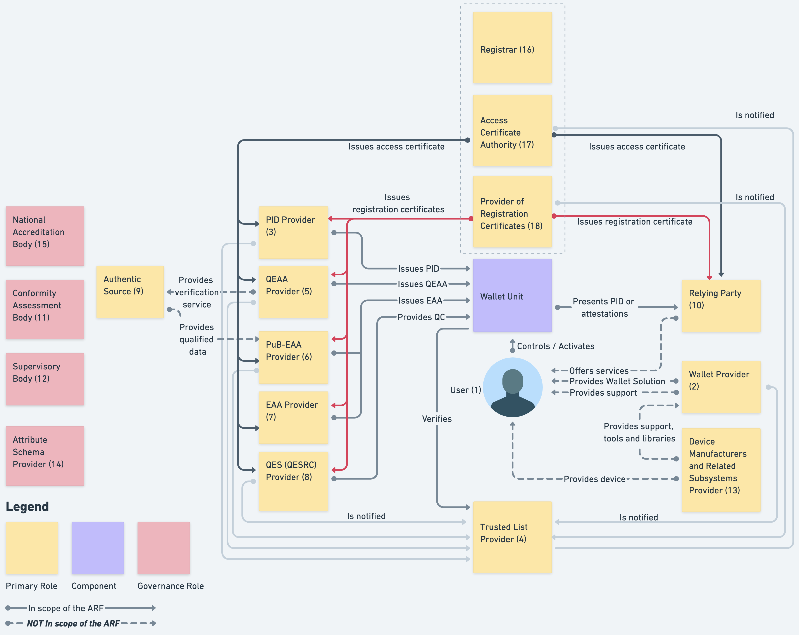 Figure 1: Overview of the EUDI Wallet ecosystem roles
- Users of Wallet Units, see Section 3.2,
- Wallet Providers, see Section 3.3,
- Person Identification Data (PID) Providers, see Section 3.4,
- Trusted List Providers, see Section 3.5,
- Qualified Electronic Attestation of Attributes (QEAA) Providers, see Section 3.6,
- Electronic Attestation of Attributes issued by or on behalf of a public sector body responsible for an authentic source (PuB-EAA) Providers, see Section 3.7,
- Electronic Attestation of Attributes (EAA) Providers, see Section 3.8,
- Qualified Electronic Signature Remote Creation Providers, see Section 3.9,
- Authentic Sources, see Section 3.10,
- Relying Parties, see Section 3.11,
- Conformity Assessment Bodies (CAB), see Section 3.12,
- Supervisory Bodies, see Section 3.13,
- Device Manufacturers and Related Subsystems Providers, see Section 3.14,
- Attribute Schema Providers, see Section 3.15,
- National Accreditation Bodies, see Section 3.16,
- Registrars
- Access Certificate Authorities, see Section 3.18.
- Providers of registration certificates, see Section 3.19.
3.2 Users of Wallet Units
Users of Wallet Units use the Wallet Unit to receive, store, and present PID, QEAA, PuB-EAA, or non-qualified EAA to Relying Parties. Users can also create qualified electronic signatures and seals (QES) and create and present pseudonyms.
CIR 2024/2982 (among others) defines 'wallet user' as 'a user who is in control of the wallet unit'. Being in control of the Wallet Unit implies being able to present a PID or attestation to a Relying Party. Within the use cases described in the current version of the ARF, the User is the subject of the PID(s) in the Wallet Unit. The User is also the subject of most of the attestations in the Wallet Unit, but there could be attestations that have no subject, such as vouchers, or that relate to objects owned or used by the User, such as a vehicle registration card.
Please note that this ARF assumes that a User device is a personal device, meaning that the User will not share it with other people, and that only the User can access and control the Wallet Unit. This also implies that all PIDs and attestations on the Wallet Unit pertain to that User (or to entities represented by, or objects owned by or linked to, that User).
The use of a Wallet Unit by citizens is not mandatory under the [European Digital Identity Regulation]. However, each Member State will provide at least one European Digital Identity Wallet within 24 months after the entry into force of the implementing acts referred to in the [European Digital Identity Regulation].
3.3 Wallet Providers
Wallet Providers are Member States or organisations either mandated or recognised by Member States making a Wallet Solution available to Users. All Wallet Solutions must be certified as described in Chapter 7.
A Wallet Provider makes a combination of several products and Trust Services available to a User, which give the User sole control over the use of their Person Identification Data (PID) and Electronic Attestations of Attributes (QEAA, PuB-EAA or EAA), and any other personal data within their Wallet Unit. This also implies guaranteeing a User sole control over sensitive cryptographic material (e.g., private keys) related to their Wallet Unit.
Wallet Providers are responsible for ensuring compliance with the requirements for Wallet Solutions.
From the viewpoint of the other actors in the EUDI Wallet ecosystem, the Wallet Provider is responsible for all components of the Wallet Unit. These components are described in Section 4.3.2. In particular, the Wallet Provider is responsible for ensuring that the Wallet Instance can access a Wallet Secure Cryptographic Device (WSCD) that has a level of security sufficient to ensure that the Wallet Unit can achieve Level of Assurance High, as required in the [European Digital Identity Regulation]. This is true even if the WSCD is not delivered by the Wallet Provider but is integrated into the User device. For more information, see Section 4.5. Other actors in the ecosystem do not need to interact with or explicitly trust a WSCA or WSCD supplier. As explained in Section 6.5.3.4), Wallet Providers provide Wallet Unit Attestations (WUA) to the Wallet Unit. The WUA attests that the Wallet Unit and all of its components, including the WSCA/WSCD, comply with the relevant requirements.
3.4 Person Identification Data (PID) Providers
PID Providers are trusted entities responsible for:
- verifying the identity of the User in compliance with LoA high requirements,
- issuing a PID to the Wallet Unit, and
- making available, in a privacy-preserving way, information for Relying Parties to verify the validity of the PID.
The terms and conditions of these services are for each Member State to determine.
PID Providers may be the same organisations that today issue official identity documents, electronic identity means, etc. PID Providers may be the same organisations as Wallet Providers. In case an organisation acts as both a PID Provider and a Wallet Provider, it complies with all requirements for both PID Providers and Wallet Providers.
3.5 Trusted List Provider
A Trusted List Provider (TLP) is a body responsible for maintaining, managing, and publishing a Trusted List. Within the EUDI Wallet ecosystem, Trusted Lists exist for the following entities:
- Wallet Providers, see Section 3.3,
- PID Providers, see Section 3.4,
- QEAA Providers, see Section 3.6,
- PuB-EAA Providers, see Section 3.7,
- Qualified Electronic Signature Remote Creation (QESRC) Providers, see Section 3.9,
- Access Certificate Authorities, see Section 3.18,
- Providers of registration certificates, see Section 3.19.
Notes:
- There is no Trusted List for Relying Parties. The expected number of Relying Party throughout the Union would make this infeasible. Instead, a Relying Party receives an access certificate from an Access Certificate Authority, and this certificate allows a Wallet Unit to authenticate the Relying Party.
- Wallet Providers, PID Providers, Access Certificate Authorities and Providers of registration certificates are not trust service providers in the sense of the [European Digital Identity Regulation]. Therefore, the Trusted Lists for these entities are -legally speaking- not trusted lists in the sense of Article 22. However, the technical requirements for all Trusted Lists and Trusted List Providers are the same. For that reason, the ARF does not distinguish between Trusted Lists for these entities and those for QEAA Providers and PuB-EAA Providers, who are trust service providers in the sense of the Regulation.
- Non-qualified EAA Providers are trust service providers in the sense of the [European Digital Identity Regulation]. Therefore, Trusted Lists and Trusted List Providers may also exist for non-qualified EAA Providers. However, this is out of scope of the ARF.
These Trusted Lists are described in more detail in Sections 6.2.2, 6.3.2 and 6.4.2. Some Trusted Lists contain the trust anchors of the relevant entities. A trust anchor is a combination of a public key and the identifier of the associated entity and may be used to verify signatures created by that entity.
An entity's status as a trusted entity can be verified by checking whether they are present on the relevant Trusted List. In order to be put on a Trusted List, relevant entities must be notified to the Commission by a Member State. This happens after the entity has been registered by a Registrar in the Member State, see Section 3.17.
For more information and high-level requirements, please refer to Topic 27 and to Topic 31.
3.6 Qualified Electronic Attestation of Attributes (QEAA) Providers
Qualified EAAs are provided by Qualified Trust Service Providers (QTSPs). The general trust framework for QTSPs (see Chapter III, Section 3 of the [European Digital Identity Regulation] applies also to QEAA Providers, but specific rules for the Trust Service of issuing QEAAs may be defined as well.
QEAA Providers maintain an interface to Wallet Units to provide QEAAs upon request. Potentially, they also maintain an interface towards Authentic Sources to verify attributes, as specified in Topic 42.
It is likely that for most QEAAs, a QEAA Provider will need to verify the identity of a User when issuing a QEAA. It is up to each QEAA Provider to implement the necessary User authentication processes, in compliance with all applicable national and Union legislation. Note that, when User identity verification is necessary, it is likely that the User requesting a QEAA already possesses a PID. This would enable the QEAA Provider to carry out User identification and authentication at LoA high, by requesting and verifying User attributes from the PID in the Wallet Unit.
The terms and conditions of these services are for each QEAA Provider to determine, beyond what is specified in the [European Digital Identity Regulation].
3.7 EAA issued by or on behalf of a public sector body responsible for an authentic source (PuB-EAA) Providers
As specified in the [European Digital Identity Regulation], an attestation may be issued by or on behalf of a public sector body responsible for an Authentic Source. This ARF calls such an attestation a PuB-EAA. For a description of Authentic Sources, see Section 3.10. A public sector body primarily is a state, regional or local authority, or a body governed by public law.
A PuB-EAA Provider, meaning a public sector body issuing PuB-EAAs, is not a QTSP. However, a PuB-EAA Provider has a qualified certificate, issued by a QTSP, that allows it to sign PuB-EAAs. A Relying Party verifies a PuB-EAA by first verifying the signature over the PuB-EAA, and subsequently verifying the signature of the qualified PuB-EAA Provider certificate. For more details, refer to Section 6.6.3.6. The [European Digital Identity Regulation] stipulates that PuB-EAAs, like QEAAs, have the same legal effect as attestations in paper form. It is up to the Member States to define terms and conditions for the provisioning of PuB-EAAs, but PuB-EAA Providers will comply with the same technical specifications and standards as Providers of PIDs and other attestations.
For the precise and legally binding definitions and obligations regarding the issuance of PuB-EAAs, please refer to the [European Digital Identity Regulation].
3.8 Non-Qualified Electronic Attestation of Attributes (EAA) Providers
Non-qualified EAAs can be provided by any (non-qualified) Trust Service Provider. While they will be supervised under the [European Digital Identity Regulation], it can be assumed that other legal or contractual frameworks will mostly govern the rules for provision, use and recognition of EAAs. Those other frameworks may cover policy areas such as educational credentials, digital payments, although they may also rely on Qualified Electronic Attestation of Attributes Providers. For non-qualified EAAs to be used, EAA Providers offer Users a way to request and obtain these EAAs. This implies that these non-qualified EAA Providers comply with the Wallet Unit interface specifications. The terms and conditions of issuing EAAs and related services are subject to sectoral rules.
3.9 Qualified Electronic Signature Remote Creation (QESRC) Providers
The Wallet Unit will allow the User to create qualified electronic signatures or seals over any data. This will also enhance the use of the Wallet Unit for signing, in a natural and convenient way. The creation of a qualified electronic signature or seal by means of the Wallet Unit can be achieved in several ways:
- the Wallet Unit itself could be certified as a qualified signature or seal creation device (QSCD), or
- the Wallet Unit could implement secure authentication into an electronic signature or electronic seal invocation capability, as part of a local QSCD or a remote QSCD managed by a QTSP.
As part of the ecosystem, the use of common interfaces and protocols for provisioning qualified electronic signatures and seals will create a unified European market for QTSPs offering remote signature services. European citizens will be able to choose any QTSP, without worrying about technical interoperability, and this will enhance competition.
Besides providers of qualified electronic signatures and seals, also providers of non-qualified electronic signatures or seals may exist. However, such providers are out of scope of this ARF.
3.10 Authentic Sources
Authentic Sources are public or private repositories or systems, recognised or required by law, containing attributes about natural or legal persons. Authentic Sources are sources for attributes on, for instance, address, age, gender, civil status, family composition, nationality, education and training qualifications titles and licences, professional qualifications titles and licences, public permits and licences, or financial and company data.
Authentic Sources are required to provide an interface to QEAA Providers to verify the authenticity of the above attributes, either directly or via designated intermediaries recognised at national level. Authentic Sources may act as PuB-EAA Providers if they meet the requirements of the [European Digital Identity] Regulation, see Section 3.7. In Figure 1 this is indicated by the arrow 'provides qualified data'.
3.11 Relying Parties and intermediaries
Within the scope of this ARF, a Relying Party is a service provider requesting attributes contained within a PID, QEAA, PuB-EAA or EAA from the Wallet Unit, subject to the approval of the User and within the limits of applicable legislation and rules.
Note: As specified in the [European Digital Identity Regulation], legally speaking, the term 'Relying Party' includes Attestation Providers (i,e, QEAA Providers, PuB-EAA Providers, and non-qualified EAA Providers), as well as service providers. However, technically speaking the responsibilities of Attestation Providers are quite different from those of service providers, as is the way they interact with Wallet Units. Therefore, for clarity the term 'Relying Party' is used in all parts of the ARF exclusively to mean a service provider interacting with a Wallet Unit to request and receive attributes from an attestation.
The reason for a Relying Party to rely on the Wallet Unit may be a legal requirement, a contractual agreement, or their own decision. In particular, the [European Digital Identity Regulation] requires that providers of very large online platforms must accept the EUDI Wallet for their user authentication processes.
Relying Parties maintain an interface with Wallet Units to request PIDs and attestations, using Relying Party authentication, as described in Section 6.6.3.2. If a Wallet Unit presents attributes from a PID or attestation to a Relying Party, the Relying Party can verify the authenticity of these attributes.
To rely on Wallet Units for the purpose of providing a service, Relying Parties inform the Member State where they are established about their intention for doing so, and register the attributes that they intend to request. See Section 6.4.2 for more information on Relying Party registration. During a transaction, a Wallet Unit verifies that the Relying Party only requests attributes that it registered, if the User has indicated that such a check must be performed. The Wallet Unit will warn the User if this is not the case. This is explained in Section 6.6.3.3.
In addition, an Attestation Provider may embed a disclosure policy in an attestation. Such a policy indicates to which Relying Parties a Wallet Unit should (or should not) present that attestation. During a transaction, the Wallet Unit evaluates the policy based on data provided by the Relying Party, and warns the User if the outcome of that evaluation is negative. Please refer to Section 6.6.3.4 for more information.
So-called intermediaries form a special class of Relying Party. Article 5b (10) of the [European Digital Identity Regulation] states "Intermediaries acting on behalf of relying parties shall be deemed to be relying parties and shall not store data about the content of the transaction". Such an intermediary is a party that offers services to Relying Parties to, on their behalf, connect to Wallet Units and request the User attributes that these Relying Parties need. The intermediary then sends the presented attributes to the intermediated Relying Party. This implies that an intermediary performs all tasks assigned to a Relying Party in this ARF on behalf of the intermediated Relying Party. In particular:
- The intermediary registers once as a Relying Party with a Registrar (see Section 3.17) and obtains an access certificate (see Section 3.18 bearing its own name and Relying Party identifier. This access certificate is not different from an access certificate issued to a 'normal' Relying Party, since an intermediary is, as a matter of legal fact, a Relying Party. Note: In addition, the intermediary may receive a registration certificate (see Section 3.19), if the Registrar issues such certificates. However, this registration certificate will not be used in intermediated transactions.
- Next, the intermediary will separately register each of the intermediated Relying Parties that uses its services at the same Registrar. This includes registering the attributes the intermediated Relying Party wants to request for each of its intended uses. The Registrar verifies, in a manner to be decided by the Member State, that the intermediated Relying Party is indeed using the services of the intermediary. If all is correct, the Registrar will register the fact that the intermediated Relying Party is using the services of the intermediary. If the Registrar (via a Provider of registration certificates) issues registration certificates, the intermediary will receive a registration certificate containing an attribute stating that the intermediated Relying Party is using the services of the intermediary.
- When asked by an intermediated Relying Party, the intermediary will request a presentation of attributes from a Wallet Unit, using one or more of the flows described in Section 4.4. For this, the intermediary will use their own access certificate (point 1. above) and the registration certificate of the intermediated Relying Party if available (point 2. above). If no registration certificate is available, the intermediary adds the user-friendly name and the unique identifier of the intermediated Relying Party directly in the presentation request. (Note: this will need an extension of [ISO/IEC 18013-5] and [OpenID4VP].) The Wallet Unit displays the name of both the intermediary and the intermediated Relying Party to the User when asking for User approval to present the requested attributes.
- If the User has indicated that they want to verify the information registered about the Relying Party, and the Wallet Unit sees that the Relying Party uses the services of an intermediary (either in the registration certificate or because the information about the intermediated-Relying Party is present in the request), it verifies that this Relying Party indeed uses the services of this intermediary. If the registration certificate is available, it does so by verifying that the name and the identifier of the intermediary listed in the registration certificate are identical to the name and identifier in the access certificate. If the registration certificate is not available, the Wallet Unit contacts the Registrar indicated in the access certificate to do this verification online. If this verification was not successful, or the Wallet Unit was not able to retrieve the information registered about the Relying Party, the Wallet Unit informs the User.
- When a Wallet Unit presents a PID or attestation to the intermediary, the intermediary verifies the authenticity of the PID or attestation, its revocation status, device binding, and User binding, as well as any combined presentation of attributes, if applicable, if it has agreed to do so with the Relying Party. Also, the intermediary may need to verify the authenticity of the Wallet Unit and its revocation status. (Note that a Relying Party is not obliged to carry out all of these verifications. Therefore, the intermediary and any Relying Party using its services must agree on what verifications the intermediary will carry out.)
- If these verifications are successful, the intermediary forwards the User attributes it obtained from the Wallet Unit to the intermediated Relying Party. There must be an interface between an intermediary and a Relying Party, over which the intermediated Relying Party can request the intermediary to request some User attributes from a Wallet Unit and that the intermediary uses to send back the attribute values presented by the Wallet Unit. However, specifying this interface or the (security) requirements with which it needs to comply, is out of scope of the ARF. In particular, it is not required that the User attributes are end-to-end encrypted between the Wallet Unit and the intermediated Relying Party, such that an intermediary would not be able to see them.
- The intermediary deletes any PIDs or attestations it obtained from the Wallet Unit, including any User attributes, immediately after it has sent the User attributes to the Relying Party. If the intermediary does not send any User attributes to the Relying Party, for example because one of the verifications in the previous step failed, the intermediary deletes the PIDs or attestations immediately after it has completed all necessary verifications.
Note that this approach implies that an intermediated Relying Party using the services of an intermediary will not need an access certificate.
For high-level requirements on intermediaries, see Topic 52.
3.12 Conformity Assessment Bodies (CAB)
Conformity Assessment Bodies (CAB) are public or private bodies that are accredited by a national accreditation body, which itself is designated by Member States according to Regulation 765/2008 Article 6c (3). In particular, CABs are accredited to carry out assessments on which Member States will rely before issuing a Wallet Solution or providing the 'qualified' status to a Trust Service Provider.
Wallet Solutions will be certified by CABs. QTSPs will be audited regularly by CABs.
The standards and schemes used by CABs to fulfil their tasks to certify Wallet Solutions are discussed in Chapter 7.
3.13 Supervisory Bodies
Supervisory Bodies review the proper functioning of Wallet Providers and other actors in the EUDI Wallet ecosystem. Supervisory Bodies will be created and appointed by the Member States. The Supervisory Bodies will be notified to the Commission by the Member States.
3.14 Device Manufacturers and Related Subsystems Providers
In the EUDI Wallet ecosystem, commercial actors such as device manufacturers and related subsystems providers fulfil an important role to enable a Wallet Unit to work smoothly and securely. Device manufacturers and related subsystem providers provide a platform on which a Wallet Unit can be built. Wallet Providers ensure that their Wallet Units use that platform to ensure usability, security, stability and connectivity. The components provided by device manufacturers and providers of related subsystems may include, among others, hardware, operating systems, secure cryptographic hardware, libraries, and app stores.
3.15 Attribute Schema Providers for QEAA, PuB-EAA and EAA
Attribute Schema Providers publish attribute schemas describing the structure of QEAAs, PuB-EAAs and EAAs, including the identifier, semantics, and encoding of all attributes. These attribute schemas are published in Attestation Rulebooks, see Section 5.4. For PIDs and mDLs, the applicable Rulebooks are published by the Commission.
A catalogue of published Attestation Rulebooks will enable other entities such as Relying Parties to discover which attestations exist within the EUDI Wallet ecosystem, and how attributes from these attestations can be requested and validated. The Commission sets out the technical specifications, standards, and procedures for this purpose. Common schemas, including by sector-specific organisations, are critical for widespread adoption of attestations.
3.16 National Accreditation Bodies
National Accreditation Bodies (NAB), under Regulation (EC) No 765/2008, are the bodies in Member States that perform accreditation with authority derived from the Member State. NABs accredit CABs (Section 3.12) as competent, independent, and supervised professional certification bodies in charge of certifying Wallet Solutions against normative document(s) establishing the relevant requirements. NABs monitor the CABs to which they have issued an accreditation certificate.
3.17 Registrars
All PID Providers, QEAA Providers, PuB-EAA Providers, non-qualified EAA Providers and Relying Parties in the EUDI Wallet ecosystem are registered by a Registrar in the Member State where they reside. As a result of registering an entity,
- Data about the entity is registered by the Registrar and made available online
in human-readable and machine-readable format to any interested party. In
particular,
- For a Relying Party, the Registrar mainly registers which attributes the Relying Party intends to request from Wallet Units, and for what purpose. The Registrar also registers if the Relying Party intends to use the services of an intermediary (see Section 3.11) to interact with Wallet Units, and if so, which one.
- For a PID Provider, QEAA Provider, PuB-EAA Provider, or non-qualified EAA Provider, the Registrar registers the attestation type(s) this entity wants to issue to Wallet Units, for example, diplomas, driving licenses or vehicle registration cards.
- Registered entities receive an access certificate from an Access Certificate Authority, as described in Section 3.18.
- If supported by the Registrar, a registered entity also receives a registration certificate, as discussed in Section 3.19.
The process and terms and conditions for registering will be determined by each Member State.
3.18 Access Certificate Authorities
Access Certificate Authorities issue access certificate to all PID Providers, QEAA Providers, PuB-EAA Providers, non-qualified EAA Providers and Relying Parties in the EUDI Wallet ecosystem. When these entities interact with a Wallet Unit to issue or request a PID or attestation, they will present an access certificate to prove their authenticity and validity. In order to receive an access certificate, an entity must be registered by a Registrar as described in Section 3.17.
Access Certificate Authorities are notified by a Member State to the Commission. As part of the notification process, the trust anchors of the Access CA are included in a Trusted List by a Trusted List Provider. A trust anchor is the combination of a public key and an identifier for the associated entity. Wallet Units need these trust anchors to verify the signatures over the access certificates presented to them when a new PID or attestation is issued or when they receive an attribute presentation request from a Relying Party.
The Trusted List Provider signs and publishes the Access CA Trusted List and makes the URL of the Trusted List available to a common trust infrastructure maintained by the Commission, the so-called List of Trusted Lists. Using the common infrastructure, any entity in the EUDI Wallet ecosystem will be able to find all Trusted Lists in the ecosystem.
3.19 Providers of registration certificates
If a Registrar has a policy of issuing registration certificates, it has one or more associated Provider(s) of registration certificates. Such a Provider issues one or more registration certificates to each registered Relying Party, PID Provider, QEAA Provider, PuB-EAA Provider, and non-qualified EAA Provider. Each registration certificate contains the data registered for that entity, as described in Section 3.17.
Like Access Certificate Authorities (see previous section), Providers of registration certificates are notified by a Member State to the Commission. Their trust anchors are put on a Trusted List, such that they can be found by Wallet Units and used to verify a registration certificate received from a Relying Party.
4 High level architecture
4.1 Introduction
This chapter provides a broad overview of the EUDI Wallet ecosystem's core components, their interfaces, and the overall design principles. This chapter is structured as follows:
- Section 4.2 discusses the design principles that guided the design of the EUDI Wallet ecosystem, as described in this ARF.
- Section 4.3 presents an overview of the ecosystem's architecture, focussing on the components that make up a Wallet Unit and on the interfaces between a Wallet Unit and other entities, as well as the protocols used on these interfaces.
- Section 4.4 discusses the different attestation presentation flows enabled by this architecture, and in particular the mechanisms foreseen to enable and secure remote presentation flows in which the Wallet Unit and the Relying Party interact over the internet.
- Section 4.5 briefly discusses the different architecture types a Wallet Providers may use for implementing one or more Wallet Secure Cryptographic Device(s) into their Wallet Solutions.
- Section 4.6 presents state diagrams for all of the main entities and components in the EUDI Wallet ecosystem, discussing all of the states a particular component can be in, as well as the conditions triggering state transitions.
- Section 4.7 discusses how pseudonyms will be implemented and used within a Wallet Unit.
4.2 Design principles
To effectively translate the [European Digital Identity Regulation] into a User-friendly, privacy-focused, and secure technical architecture, establishing design principles is crucial. These principles, rooted in the regulatory framework and enriched by industry best practices, will serve as fundamental guidelines. This approach ensures compliance with requirements emphasising User-centricity, privacy, security, and cross-border interoperability. It demonstrates a commitment to both regulatory alignment and excellence in the EUDI Wallet architecture's design.
4.2.1 User-centricity
The EUDI Wallet ecosystem prioritises User-centricity as a core design principle. This means placing User needs and experience at the forefront of every design decision. The Wallet Unit should be intuitive and easy to use, with seamless integration into existing use cases. Users should have full control over their attributes and privacy, with transparent information about what attributes are being presented and to whom. Additionally, the Wallet Unit should be accessible and inclusive, catering to Users with varying technical backgrounds and abilities. By prioritising User-centricity, the EUDI Wallet ecosystem fosters trust and encourages widespread adoption, ultimately achieving its goal of empowering Users with secure and convenient digital identity management.
4.2.2 Interoperability
The EUDI Wallet ecosystem prioritises interoperability as a core design principle. This ensures a Wallet Unit functions seamlessly across borders within the EU. Users can travel freely and confidently utilise their digital identity wallets for various services, from e-government platforms to private online interactions. Interoperability fosters secure data exchange through standardised protocols, allowing trusted entities to verify credentials effortlessly. This not only simplifies the User experience but also strengthens overall security within the system. Moreover, interoperability prevents market fragmentation by creating a level playing field for different Wallet Solutions. It fosters competition and collaboration, ultimately driving innovation in the EUDI Wallet ecosystem. By prioritising interoperability, the EUDI Wallet architecture lays the foundation for a trusted and universally accepted EUDI Wallet ecosystem across the EU.
4.2.3 Privacy by design
The EUDI Wallet architecture embodies the principle of privacy by design. This means that the protection of User data is a fundamental pillar of the architecture's design. The principle of data minimisation guides the collection of personal information, ensuring that Relying Parties gather only the attributes they need and have registered for. By enabling selective disclosure of attributes, the Wallet Unit empowers Users with granular control over what data is presented and to whom. Transparency is built into the system, with clear explanations of how data is used and protected. By making privacy a cornerstone from the beginning, the EUDI Wallet ecosystem aims to foster trust and protect the fundamental rights of its Users. Finally, measures are taken to prevent Users from being tracked by Relying Parties, PID Providers, or Attestation Providers.
For more information, please refer to Sections 7.4.3.4 and 7.4.3.5.
4.2.4 Security by design
The EUDI Wallet architecture embraces the principle of security by design. This means security considerations are woven into the very fabric of the architecture's design. Throughout the design process, potential vulnerabilities are identified and mitigated. Secure coding practices are mandated, and the architecture itself minimises attack surfaces by compartmentalising sensitive data and access controls. By prioritising security from the outset, the EUDI Wallet architecture aims to be inherently resistant to cyberattacks and data breaches, fostering trust and User confidence in this EUDI Wallet ecosystem.
For more information, please refer to Sections 7.4.3.2 and 7.4.3.3.
4.3 Reference architecture
4.3.1 Overview
The figure below gives an overview of the architecture of the EUDI Wallet ecosystem and its components. In comparison to Figure 1, this figure presents more detail on the composition of a Wallet Unit and its interfaces to other entities. The depicted components of a Wallet Unit are described in Section 4.3.2, while the interfaces are described in Section 4.3.3. The other entities shown in the figure were already described in Chapter 3.
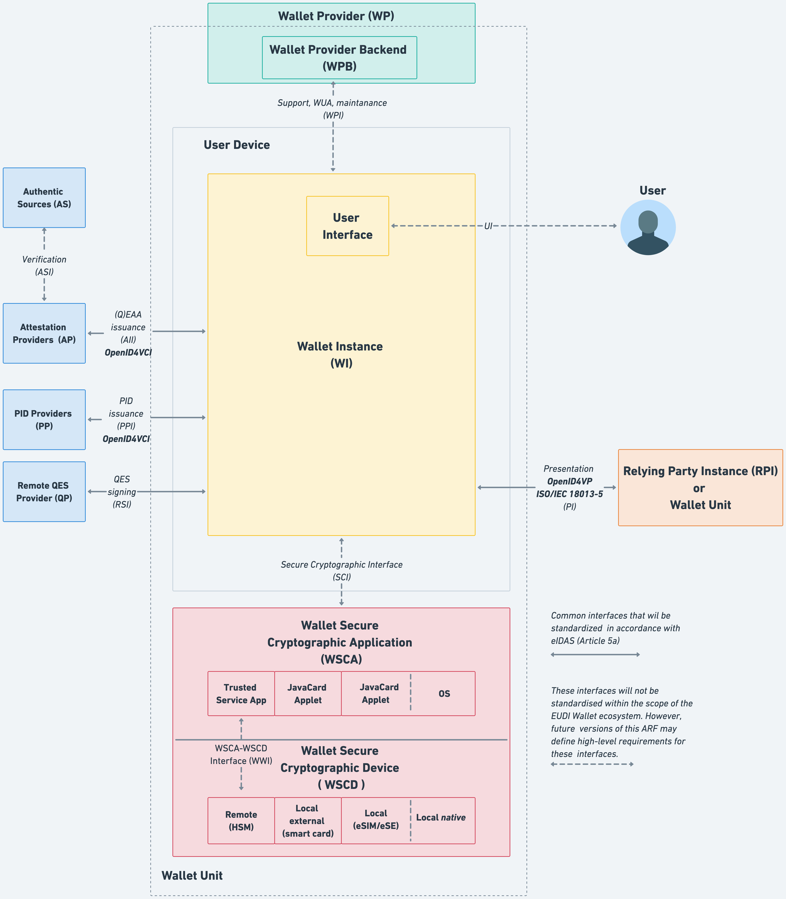 Figure 2: EUDI Wallet ecosystem reference architecture
Note that a User device can host more than one Wallet Unit, either provided by multiple Wallet Providers or by the same one, if supported by that Wallet Provider. If a User device hosts more than one Wallet Unit, all statements in this ARF regarding a Wallet Unit and its components hold for each Wallet Unit independently.
4.3.2 Components of a Wallet Unit
The following have been identified as the core components of a Wallet Unit:
- User device (UD): A User Device comprises the hardware, operating system, and software environment required to host and execute the Wallet Instance. The minimum hardware and software requirements for the User device will be determined by the Wallet Provider.
- Wallet Instance (WI): The app or application installed on a User device, which is an instance of a Wallet Solution and belongs to and is controlled by a User. This component implements the core business logic and interfaces as depicted in Figure 2. It directly interacts with the WSCA (which is interacting with the WSCD, see bullets hereafter) to securely manage cryptographic assets and execute cryptographic functions, ensuring a high level of assurance for authentication.
-
Wallet Secure Cryptographic Device (WSCD): A tamper-resistant device that provides an environment that is linked to and used by the Wallet Secure Cryptographic Application (WSCA) to protect critical assets and to securely execute cryptographic functions. This includes a keystore, but also the environment where the security-critical functions are executed. The WSCD is tamper-proof and duplication-proof. One WSCD may be a part of multiple Wallet Units, e.g. in case of a remote HSM. The WSCD consists of two parts: the WSCD hardware covers the hardware issued by the WSCD vendor and the WSCD firmware covers security-related software, such as an operating system and cryptographic libraries provided by the WSCD vendor. Figure 2 shows four different possible security architectures for the WSCD (for more details see Section 4.5):
- a remote WSCD, which is a remote device, such as a Hardware Security Module (HSM), accessed over a network.
- a local external WSCD, which is an external device, such as a smart card issued to the User specifically for this purpose,
- a local internal WSCD, which is a component within the User device, such as a SIM, e-SIM, or embedded Secure Element,
- a local native WSCD, which is a component embedded in the User device and accessed via an API provided by the operating system.
-
Wallet Secure Cryptographic Application (WSCA): an application that manages critical assets by being linked to and using the cryptographic and non-cryptographic functions provided by the Wallet Secure Cryptographic Device. Different types of WSCD generally use different types of WSCA. For example, if the WSCD is a remote HSM, the WSCA may be (but does not have to be) a dedicated firmware module. If the WSCD is a external smartcard or an internal e-SIM or embedded Secure Element, the WSCA takes the form of a dedicated JavaCard applet running on the e-SIM or SE. If the WSCD is a local native WSCD, the WSCD is integrated into the OS of the User device. The WSCA interfaces directly with the Wallet Instance. For more details see Section 4.5.
- Wallet Provider backend (WPB): The Wallet Provider backend offers Users support with their Wallet Units, performs essential maintenance, and issues Wallet Unit Attestations through the Wallet Provider Interface (WPI).
4.3.3 Wallet Unit interfaces and protocols
Figure 2 shows the following interfaces between components of a Wallet Unit, or between the Wallet Unit and other entities in the EUDI Wallet ecosystem:
- The Wallet Provider Interface (WPI) is used by the Wallet Instance to communicate with the Wallet Provider to request and issue the Wallet Unit Attestation, as well as to provide support to the User and collect aggregated and User-consented information in a privacy-preserving manner to provision the Wallet Unit, in compliance with applicable legislation. Because the Wallet Provider is responsible for both sides of this interface, it will not be standardised in the scope of the EUDI Wallet ecosystem.
- The User Interface (UI) is the point of interaction and communication between the User and the Wallet Instance. This interface will not be standardised in the scope of the EUDI Wallet ecosystem.
- The Presentation Interface (PI) enables Relying Party Instances to securely request and receive PIDs, QEAAs, PuB-EAAs and EAAs from Wallet Units. This interface accommodates both remote and proximity interactions. For remote presentation flows, as detailed in Section 4.4.3, the Wallet Instance implements the OpenID for Verifiable Presentation protocol [OpenID4VP] in combination with the [W3C Digital Credentials API]. In contrast, for the proximity presentation flow, this interface adheres to the [ISO/IEC 18013-5] standard, see Section 4.4.2. The same interface can also be used by another Wallet Unit to request User attributes, see Section 6.6.4.
- The Secure Cryptographic Interface (SCI) enables the Wallet Unit to communicate with the Wallet Secure Cryptographic Application (WSCA). This interface is specifically designed for managing cryptographic assets and executing cryptographic functions. In case the WSCA is delivered by the Wallet Provider, the Wallet Provider is responsible for both sides of this interface, and hence standardisation is not needed within the scope of the EUDI Wallet ecosystem. In case the WSCA is delivered by the provider of the WSCD, this interface will comply what an existing specification that is not specifically designed for the EUDI Wallet ecosystem. Rather, each type of WSCA/WSCD will expose a provider-defined interface to the Wallet Units. For example, in case the WSCD is a secure element, [CIR 2024/2979] requires support for the [GP OMAPI] interface specification (or an equivalent one). To be able to support different types of WSCA/WSCD, Wallet Units may therefore need to be able to handle multiple flavours of this interface.
- The WSCA - WSCD Interface (WWI) enables the WSCA to communicate with the WSCD. This interface is not specifically designed for the EUDI Wallet ecosystem. Rather, each type of WSCD will expose a manufacturer-defined interface to the WSCA making use of it, for example syscalls of the operating system. In case the WSCA is delivered by the Wallet Provider, the Wallet Provider is responsible for correctly implementing this interface.
- The PID Issuance Interface (PII) complies with the [OpenID4VCI] standard and is used when the Wallet Unit communicates with a PID Provider to request and receive PIDs to be stored within the Wallet Unit.
- The Attestation Issuance Interface (AII) complies with the [OpenID4VCI] standard and is used by the Wallet Unit to request various attestations that the User wants to include in their Wallet Unit.
- The Remote Signing or Sealing Interface (RSI) facilitates communication between the Wallet Unit and a Qualified Electronic Signature Remote Creation (QESRC) Provider. This interface is used by the Wallet Unit to generate a qualified electronic signature or seal.
*Note that the "Attribute Deletion Request to Relying Party Interface" and the "Reporting Relying Party to DPA Interface", which are mentioned in the Regulation, are not depicted as interfaces in Figure 2. Functionality enabling a User to request a Relying Party to delete personal data (i.e., User attributes) obtained from the User's Wallet Unit is seen as a feature of the Wallet Solution. The same applies to functionalities enabling the User to report a Relying Party to a Data Protection Authority.
4.4 Data presentation flows
4.4.1 Overview
This section defines four distinct communication flows that can be used when a Wallet Unit presents a PID or attestation to a Relying Party Instance:
- Proximity Supervised Flow: In this flow, the User and their User Device are physically near the Relying Part Instance. PIDs and attestations are exchanged using proximity technology (e.g., NFC, Bluetooth) between the Wallet Unit and the Relying Party Instance. Both devices may be with or without internet connectivity. A human representative of the Relying Party supervises the process.
- Proximity Unsupervised Flow: This flow is like the supervised flow, but the Wallet Unit presents attestations to a machine, without human supervision. The interfaces and protocols used in this flow are the same as for the proximity supervised flow, and are described in Section 4.4.2.
- Remote Same-Device Flow: In this flow, the User utilises a web browser or another application on their User device to access a Relying Party's a service. If consuming the service requires the Relying Party to obtain specific attributes from the User's Wallet Unit, the Relying Party sends a presentation request to the Wallet Unit. As explained in Section 4.4.3.2, this request is managed by the web browser on the User's device, utilising a solution like the [W3C Digital Credentials API].
- Remote Cross-Device Flow: In this flow, the User uses a web browser on a device other than the User device on which their Wallet Unit is installed to access the Relying Party's service. This other device could be for instance a desktop, laptop, or another mobile device. If the Relying Party needs to send a presentation request to the User's Wallet Unit, it presents this request to the web browser on the other device. Again using the [W3C Digital Credentials API], this web browser sets up a secure communication channel between the other device and the User's device. Section 4.4.3.3 explains this in more detail.
Specific use cases integrate one or more of these flows. Each of these flows is described in more detail in one of the next sections.
4.4.2 Proximity presentation flows
Figure 3 shows how attestation presentation works when the User and their User Device are physically near the Relying Part Instance. In this case, the [ISO/IEC 18013-5] standard specifies how a communication channel is set up and how a presentation request and the corresponding response are exchanged.
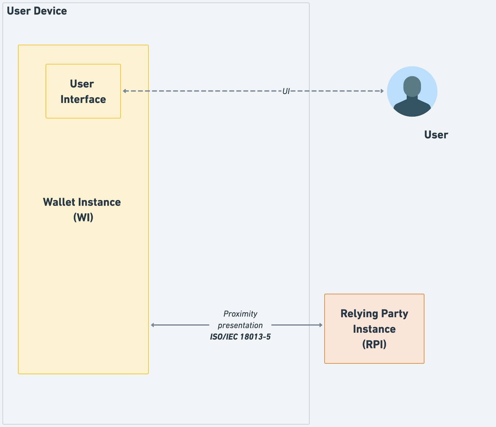 Figure 3: Proximity presentations
The attribute presentation flow begins when the User opens the Wallet Instance and instructs it to display a QR code or present an NFC tag. This QR code or NFC tag contains the information necessary to establish an NFC, BLE, or Wi-Fi Aware connection. The Relying Party Instance scans the QR code or the NFC tag and set ups the connection. The QR code or NFC tag also contains the information necessary to create an authenticated and encrypted secure channel between both entities.
4.4.3 Remote presentation flows
4.4.3.1 Introduction
Remote transaction flows are use cases in which the Relying Party Instance is remote from the User and the User device. The Relying Party Instance requests data from the Wallet Unit over the internet, using a browser. These use cases can be further distinguished as same-device flows, in which the browser is running on the same device as the Wallet Unit, and cross-device flows, where the browser is on a different device.
Remote presentation flows come with a number of challenges that are not present for proximity flows:
- Secure Cross-Device Flows: Cross-device flows are vulnerable to phishing and relay attacks, necessitating enhanced security measures. Proximity checks, managed by the operating system of the User device, can mitigate the risks derived from these vulnerabilities by leveraging built-in security features to verify the authenticity of interactions, ensuring they are both secure and reliable.
- Wallet Unit Selection: In remote flows, where interactions do not originate from the Wallet Unit, Users may encounter difficulties in selecting the appropriate Wallet Unit to fulfil a specific presentation request, particularly when multiple Wallet Units are present on the device. A unified interface provided by the web browser and the device operating system can streamline this process, offering a seamless and intuitive User experience.
- Invocation Mechanism: Establishing a communication channel between the Wallet Unit and the remote Relying Party Instance presents challenges due to inconsistent invocation methods. One approach considered by standardisation bodies involves using custom URI schemes, such as "mdoc://" or "openid4vp://". In this approach, the device operating system would trigger the Wallet Unit when the Relying Party Instance requests a connection via a custom URI. Another approach is the use of domain-bound universal links (a.k.a. app links). However, relying on custom URI schemes or universal links introduces variability in User experiences across different browsers and operating systems, resulting in operational inefficiencies and potential security risks. An interface provided by the web browser and the device OS does not need custom URL schemes or universal links for invoking a Wallet Unit.
- Clear Origin Verification: Protecting against relay attacks requires precise identification of the Relying Party Instance's origin. Including the origin information, such as the website domain or app package name, within the presentation request ensures the authenticity of the request and enhances trust for both Wallet Units and Users.
- Session binding: When presenting a PID or attestation to a remote Relying Party Instance, Users have to switch contexts. Existing protocols may enable attacks where the contexts are not bound to each other, resulting in session hijacking. Using an interface provided by the web browser and the device OS allows information about a session to be embedded in a presentation request. At the same time, the browser and the operating system handle proper context switching, preventing session hijacking.
The next sections describe how these challenges might be solved for both same-device and cross-device remote presentation flows, by using the [W3C Digital Credentials API]. This API is expected to establish a consistent method for invoking Wallet Units, addressing these challenges.
The current version of the [W3C Digital Credentials API] extends the Credential Management Level 1 API (the same API used by WebAuthn / Passkeys, see Section 4.7) to allow websites to request an attestation. This is achieved by providing a sequence of "presentation requests", where each presentation request includes an "exchange protocol" and "request data". The format of the request data are specific to the exchange protocol. The Digital Credentials API specifications will include a registry of supported protocols. For more information see the Topic F: Digital Credentials API discussion paper.
However, the [W3C Digital Credentials API] is still under development and has not yet been standardised. For the [W3C Digital Credentials API] to be mandated by this ARF in the future, it will have to align with the principles and expectations outlined in Chapter 3 of the Topic F discussion paper. Moreover, the API has not been implemented yet by all browsers and operating systems.
The use of this API by Wallet Units and Relying Parties is optional, and custom URL schemes may be used as well. If a Wallet Unit implements a custom URL scheme, it will need to implement mitigations for the challenges described in this section.
4.4.3.2 Same-device remote presentation flows
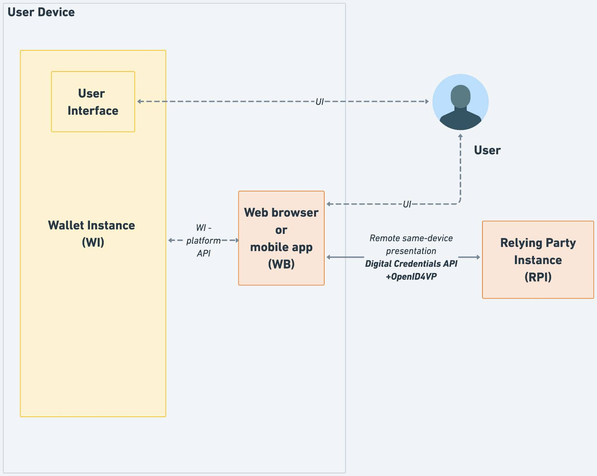 Figure 4: Remote same-device presentations
Compared to Figure 2, Figure 4 shows additional detail. In particular, it shows the browser on the User device and the relevant interfaces of this browser:
- The Remote same-device presentation interface establishes communication between the web browser and a remote Relying Party Instance, which may operate on a server managed by the Relying Party. This interface may comply with the [Digital Credentials API], which is a browser API that is currently being standardised within the W3C.
- The WI-platform API interface is a mechanism provided by the device's operating system that may implement the Digital Credentials API mechanism at OS level. There are however no current plans to standardise this interface on the level of the API calls. These calls will be specified in the developer documentation for the respective OS. One of the key elements of this API is that Wallet Unit receives reliable information regarding the origin of the presentation request.
Obviously, the browser also has a User interface allowing the User to interact with it. This interface will not be standardised in the context of the EUDI Wallet ecosystem.
A remote same-device attribute presentation flow begins when the User accesses the Relying Party's website using a browser on their device. The website may provide an option for the User to present attributes from their Wallet Unit, typically via a button or similar interface. When the User selects this option, the browser may ask the User for permission to initiate the presentation flow. Upon granting permission, the Relying Party Instance sends a presentation request compliant with the OpenID4VP specification to the browser via the Digital Credentials API. The browser, working in tandem with the device's operating system (OS), forwards the request to the Wallet Unit using the WI-platform API. If the device hosts multiple Wallet Units, the browser and OS will determine which Wallet Unit should handle the request. This decision may involve consulting the User.
The selected Wallet Unit processes the presentation request and seeks the User's approval before returning the requested attributes in an encrypted format to the browser. The browser then forwards this encrypted response to the remote Relying Party Instance.
Figure 4 also illustrates an inter-app attribute presentation flow. In this scenario, an application on the User's device, such as a banking or shopping app, interacts with the Wallet Unit over the WI-platform API. This app acts as the Relying Party Instance, possibly in cooperation with a remote server of the entity that provisioned the app. The app can use the User attributes retrieved from the Wallet Unit itself, for example for User authentication or to automatically fill in data fields like User name and address. Alternatively, the app can send these User attributes to the remote server. All requirements on Relying Parties in this ARF, such as those regarding Relying Party registration and authentication, User consent, and other aspects, are applicable in this use case as well.
In this use case, the attribute presentation flow begins when the User opens the app and initiates a request for attributes from the Wallet Unit via the WI-platform API. Notably, this is the same API used in remote same-device presentation flow involving a browser. The primary difference lies in the origin information included in the presentation request, which may vary.
4.4.3.3 Cross-device remote presentation flows
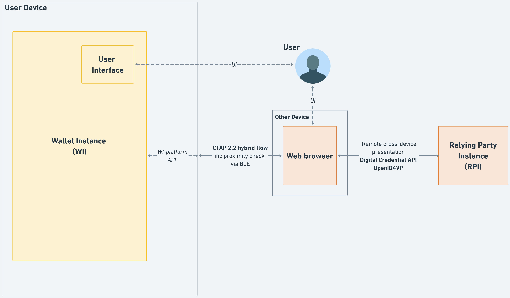 Figure 5: Remote cross-device presentations
A remote cross-device attribute presentation flow begins when the User uses a browser on a device different from their User device to visit the website of the Relying Party. The website may offer the User the possibility to present attributes from their Wallet Unit, for example by clicking a button. If the User does so, the browser may ask the User for permission to initiate the presentation flow. If the User allows this, the Relying Party Instance sends a presentation request to the browser over the Digital Credentials API. The browser then establishes a tunnel towards the User device, using the FIDO CTAP 2.2 hybrid flow, see section 11.5 of [CTAP]. Note that this flow is also used for FIDO Passkeys. This is done as follows:
- The browser presents a QR code that includes information about the tunnel endpoint, as well as keys that will be used for establishing a secure channel over this tunnel.
- The User scans the QR code using the camera on the User device.
- The User device emits a BLE advertisement, which is received by the browser. The advertisement includes, in an encrypted form, information required for establishing the secure tunnel. This advertisement is used as a proximity check: the tunnel cannot be established if the User device and the device on which the browser runs are not close to each other.
- A tunnel is established between the two devices.
The browser then sends the OpenID4VP-compliant presentation request to the User device. If there are multiple Wallet Instances present on the User device, the device OS will determine to which of these the request will be forwarded, possibly after consulting the User. The selected Wallet Unit will process the presentation request and, after requesting approval from the User, will return the requested attributes in encrypted format to the browser, using the established tunnel. The browser will forward the response to the remote Relying Party Instance.
Note that the Wallet Instance does not see any difference between the cross-device flow and the same-device flow. In both cases, it receives an OpenID4VP-compliant presentation request over the WI-platform API described in the previous section.
4.4.3.4 Profiling the use of [OpenID4VP] in remote presentation flows
As mentioned above, for both same-device and cross-device remote presentation flows, the messages used to request and present attestations comply with [OpenID4VP]. The OpenID Foundation is standardising a profile for the W3C Digital Credentials API, that will define how OpenID4VP will be used over this API.
In addition, there are two other profiles that will be used by Wallet Units and remote Relying Parties:
- [ISO/IEC 18013-7] Annex B contains a profile for OpenID4VP. Relying Parties and Wallet Unit will comply with the requirements in this profile when the format of the attestation complies with [ISO/IEC 18013-5].
- Otherwise, i.e. when the format of the attestation complies with [SD-JWT VC], Relying Parties and Wallet Unit will comply with the requirements in the profile for SD-JWT VCs specified in [HAIP].
4.5 WSCD architecture types
4.5.1 Introduction
Figure 2 showed four different types of architecture for the WSCD, which are:
- Remote WSCD
- Local external WSCD
- Local internal WSCD
- Local native WSCD
In addition, this section also describes a hybrid architecture. Within the EUDI Wallet ecosystem, a Wallet Provider is allowed to use any of these architectures.
Notes:
- Regardless of the architecture used, the Wallet Provider is responsible for ensuring that the Wallet Instance can access a WSCD that has a level of security sufficient to ensure that the Wallet Unit can achieve Level of Assurance High, as required in the [European Digital Identity Regulation]. The Wallet Provider remains responsible for managing cryptographic keys on the WSCD (through the WSCA) throughout the lifetime of the Wallet Unit. The Wallet Provider is also responsible for attesting the properties of the WSCD (including relevant certifications) in the Wallet Unit Attestation, see Section 6.5.3.
- Again regardless of the architecture used, User access to the WSCD always involves two authentication factors: physical access to the User device and a knowledge-based authentication factor (PIN or password) verified by the WSCA by comparing against a reference value securely stored in the WSCD. If the WSCA/WSCD is local, the second authentication factor is directly verified by the WSCA/WSCD. If it is remote, the Wallet Unit must contain an access token (or similar mechanism) to authenticate the Wallet Unit towards the WSCA and set up a secure communication channel. Over that channel, the PIN or password entered by the User is transferred to the WSCA/WSCD and verified by it. See the requirements on User authentication in the section on Wallet Unit management in Topic 40.
4.5.2 Remote WSCD
In this architecture, the Wallet Secure Cryptographic Device is situated remotely from the User device. Typically, it will be implemented by the Wallet Provider using an HSM running on a secure server. The Wallet Provider will also provide the WSCA with which the Wallet Unit interacts.
This architecture is typically used if the User device lacks sufficiently secure hardware, or if the Wallet Provider does not want to have a dependency on such hardware.
4.5.3 Local external WSCD
If the User device lacks sufficiently secure hardware, another option is to use a local external hardware component as the WSCD. This local external WSCD is typically a smart card or a secure token. It is connected to the User device via NFC or another short-range connection, and is able to perform all of the cryptographic operations required from a WSCA/WSCD in the ARF. Note that many existing smart cards, such as identity cards, will not be able to do this.
The WSCA typically takes the form of a Java Card applet. The WSCA is installed prior to issuance of the smart card or secure token to the User. The issuer of the WSCD and of the WSCA is the Wallet Provider or another entity acting on behalf of or in cooperation with the Wallet Provider.
4.5.4 Local internal WSCD
In this architecture, the Wallet Secure Cryptographic Device is integrated directly within the User's device. This includes solutions like UICCs, e-SIM/SAMs, or embedded Secure Elements. Such solutions typically are compliant with the GlobalPlatform Card Specifications [GP CS] or with the GSMA Secured Applications for Mobile [GSMA SAM] specification.
The WSCA will typically be a Java Card applet, and it is remotely issued to the WSCD by the Wallet Provider, at the moment the Wallet Unit is activated; see Section 6.5.3. In order to do this, the Wallet Provider may need to connect to and collaborate with other entities, such as a Trusted Service Manager employed by the owner of the WSCD.
The Wallet Provider is responsible for verifying that the local internal WSCD is compliant with all applicable requirements, prior to activating a Wallet Unit using such a WSCD.
4.5.5 Local native WSCD
A local native WSCD is integrated into the User device, just like the local internal WSCD discussed in the previous section. However, the API to access the WSCD is included in the operating system of the User device. Therefore, no separate WSCA is necessary. Alternatively, the API offered by the OS may be viewed as the WSCA.
The Wallet Provider is responsible for verifying that the local native WSCD is compliant with all applicable requirements, prior to activating a Wallet Unit using such a WSCD.
4.5.6 Hybrid architecture
In this architecture, two or more of the different types of WSCD described above are combined. For example, a remote HSM may manage the cryptographic keys of the Wallet Unit and of PIDs and attestations present in the Wallet Unit, while an embedded Secure Element is used to manage the access to the remote HSM.
4.6 State diagrams
4.6.1 Introduction
In this section, state diagrams are presented for Wallet Solutions, Wallet Units, PID Providers and Attestation Providers, PIDs and attestations, and Relying Parties.
4.6.2 Wallet Solution
A Wallet Solution has a state diagram of its own. The state of a Wallet Solution affects the state of all Wallet Units of that Wallet Solution. Figure 6 below shows the states of the Wallet Solution:
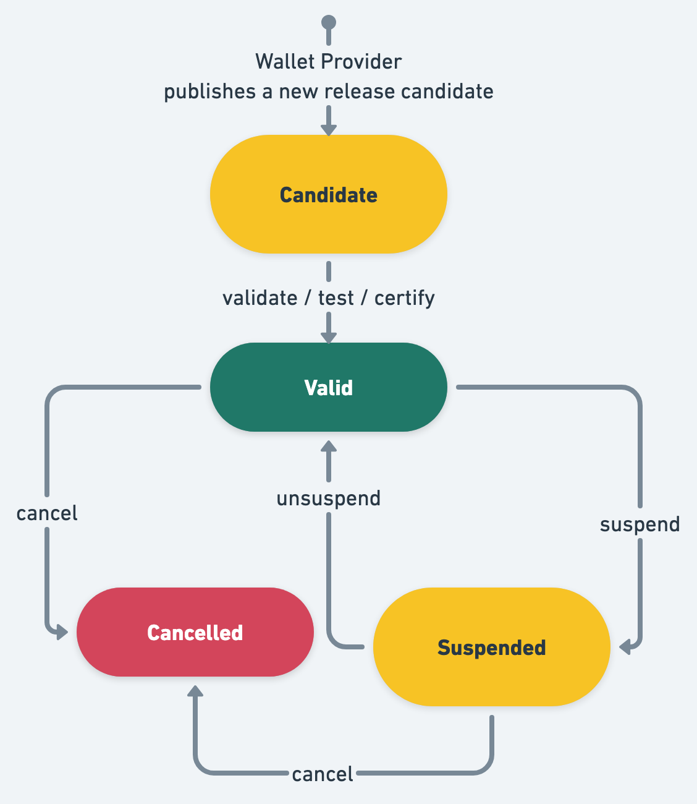
Figure 6: State diagram of Wallet Solution
The Candidate state is the first state of a Wallet Solution. This means it is fully implemented and the Wallet Provider requests the solution to be certified as a Wallet Solution as part of an EUDI Wallet eID scheme.
If all the legal and technical criteria have been met, a Member State may decide to allow a Wallet Provider to start providing the Wallet Solution to Users. The state of the Wallet Solution becomes Valid. This means the Wallet Solution can be officially launched, and can be provided to Users. The issuing Member State informs the Commission of each change in the certification status of their EUDI Wallet eID schemes and the Wallet Solutions provided under that scheme.
The issuing Member State can temporarily suspend a Wallet Solution. This would for example be the result of a critical security issue. This leads to the Suspended state. The issuing Member State can unsuspend the Wallet Solution, bringing the Solution back to the Valid state. The issuing Member State can also decide to completely cancel the Wallet Solution, which brings the Wallet Solution in the Cancelled state.
A Wallet Unit that is part of a suspended or cancelled Wallet Solution Provider cannot request the issuance of a PID or attestation. Nor will a PID or attestation presented by such a Wallet Unit be accepted by a Relying Party.
4.6.3 Wallet Unit
Figure 7 below shows the states of a Wallet Unit.
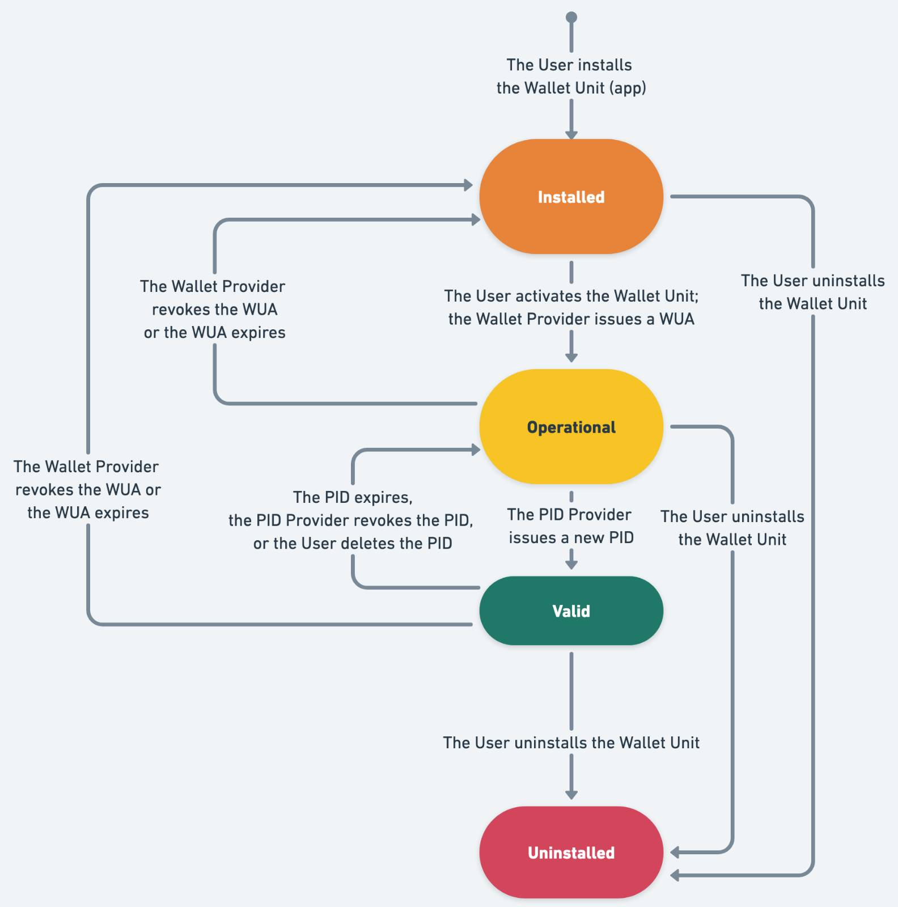
Figure 7: State diagram of Wallet Unit
A Wallet Unit lifecycle begins when the User installs a Wallet Instance on their User device, see Section 6.5.2. The Wallet Unit's state is then Installed. In this state, the User and the Wallet Provider can perform only one action, namely activating the Wallet Unit, as described in Section 6.5.3. As part of the activation process, the Wallet Provider issues one or more Wallet Unit Attestations (WUA) to the Wallet Unit.
Once a Wallet Unit is activated, it is in the Operational state. In this state, the User and the Wallet Provider manage the Wallet Unit and can perform the same actions as in the Valid state, see below. However, obviously, the User cannot identify nor authenticate themselves by presenting a PID to a Relying Party, nor can any other action with a PID be performed, because by definition no valid PID is present in this state.
If, in the Operational state, a PID Provider issues a PID to a Wallet Unit, it transitions to the Valid state. If, in either of these two states, the Wallet Provider revokes the WUA(s) or the WUA(s) expire(s) without being re-issued, the Wallet Unit moves back to Installed.
The following actions can be performed in the Valid state:
- The Wallet Provider updates the Wallet Unit to a new version,
- The Wallet Provider revokes the Wallet Unit, for instance at the User's request or if the security of the Wallet Instance is broken. Revocation of the Wallet Unit is accomplished by revoking the Wallet Unit Attestation (see Topic 9 and Topic 38).
- The User requests issuance of a PID, a QEAA, a PuB-EAA, or an EAA.
- The User presents attributes from a PID, a QEAA, a PuB-EAA, or an EAA to a Relying Party.
- The User deletes a PID, a QEAA, a PuB-EAA, or an EAA.
- A PID, a QEAA, a PuB-EAA, or an EAA is revoked by its Provider (if it is valid for more than 24 hours).
- The User uninstalls the Wallet Instance.
If the last or only PID in the Wallet Unit expires, is revoked, or is deleted, the Wallet Unit's state is moved back to Operational. Note that if there are multiple PIDs in the Wallet Unit, it does not move to the Operational state as long as at least one of them is valid.
4.6.4 PID Provider or Attestation Provider
Figure 8 shows the possible states of a PID Provider or Attestation Provider.
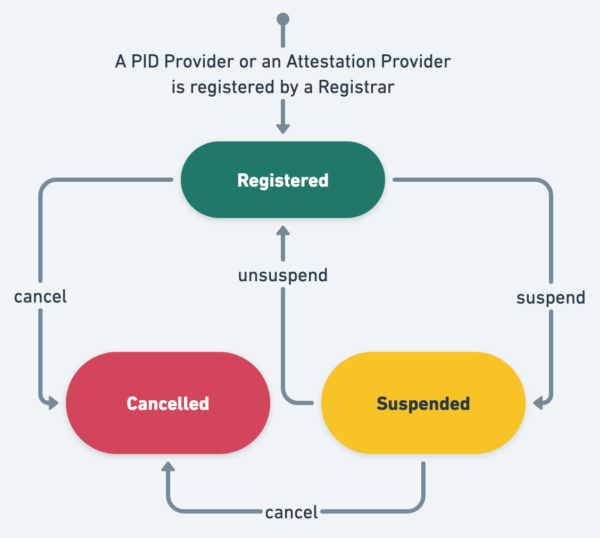
Figure 8: State diagram of PID Provider or Attestation Provider
The Registered state is the first state of a PID Provider or Attestation Provider. This means it is registered by a Member State Registrar and notified to the Commission, as described in Section 6.3.2.
The Registrar can temporarily suspend a PID Provider or Attestation Provider. This leads to the Suspended state. The Registrar can unsuspend the PID Provider or Attestation Provider, bringing it back to the Registered state. The Registrar can also decide to completely cancel registration of the PID Provider or Attestation Provider, which brings it in the Cancelled state. For more information about suspension or cancellation, please refer to Section 6.3.3). A PID Provider or Attestation Provider with suspended or cancelled registration cannot issue PIDs or attestations to Wallet Units, nor will a PID or attestation issued by such a PID Provider or Attestation Provider be accepted by Relying Parties.
4.6.5 PID or attestation
Figure 9 shows the possible states of a PID or attestation.
In the context of the EUDI Wallet ecosystem, a PID or attestation begins its lifecycle when being issued to a Wallet Unit. Please note that this means that the management of attributes in the Authentic Source (adhering to national structures and attribute definitions) is outside the scope of the ARF.
For certain use cases, a PID or attestation may be pre-provisioned, meaning it is not yet valid when issued. In that case, its state is Issued, and it will transition to Valid when it reaches the beginning of its validity period. However, if a PID or attestation is issued on or after the validity start date, its state directly changes to Valid.
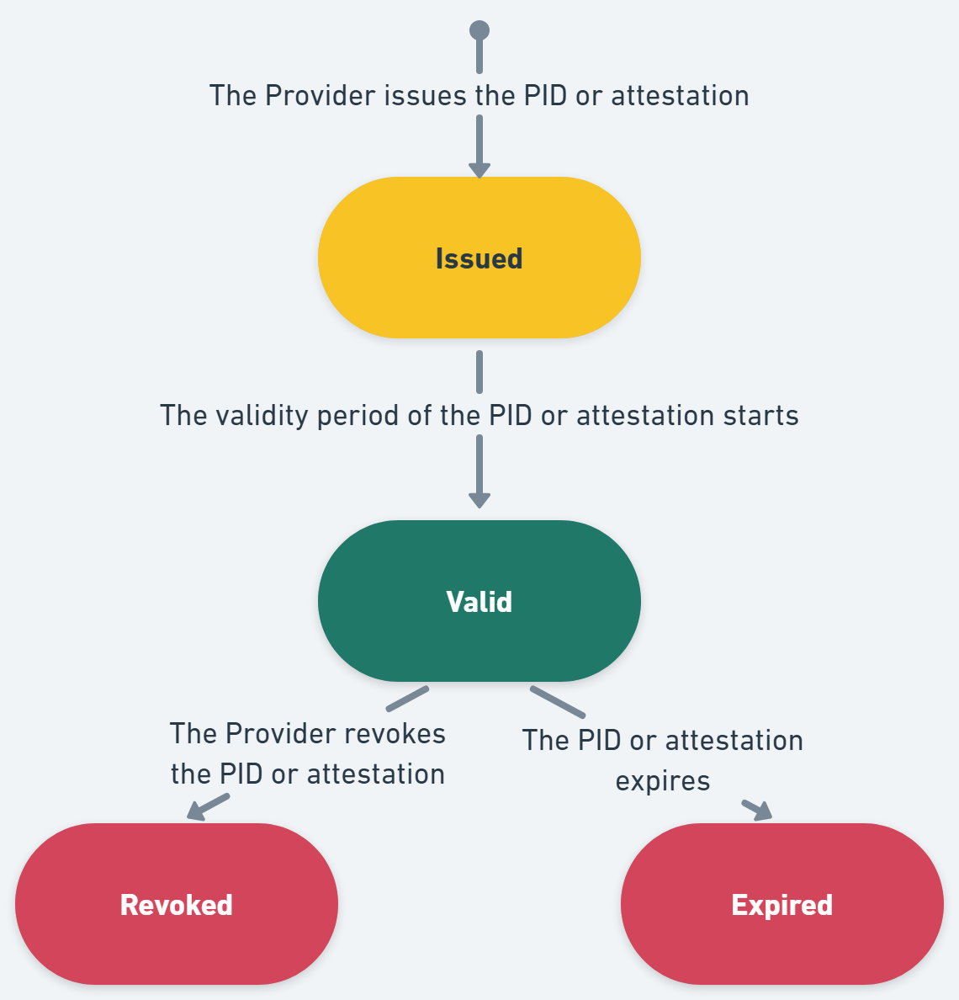
Figure 9: State diagram of PID or attestation
There are two possible transitions for a valid PID or attestation: it expires by passing through the validity end date and transitions to the Expired state, or it is revoked by its PID Provider or Attestation Provider, ending up in the Revoked state. Expiration and revocation are independent transitions. Once a PID or attestation is expired or revoked, it cannot transition back to Valid.
4.6.6 Relying Party
Figure 10 shows the possible states of a Relying Party.
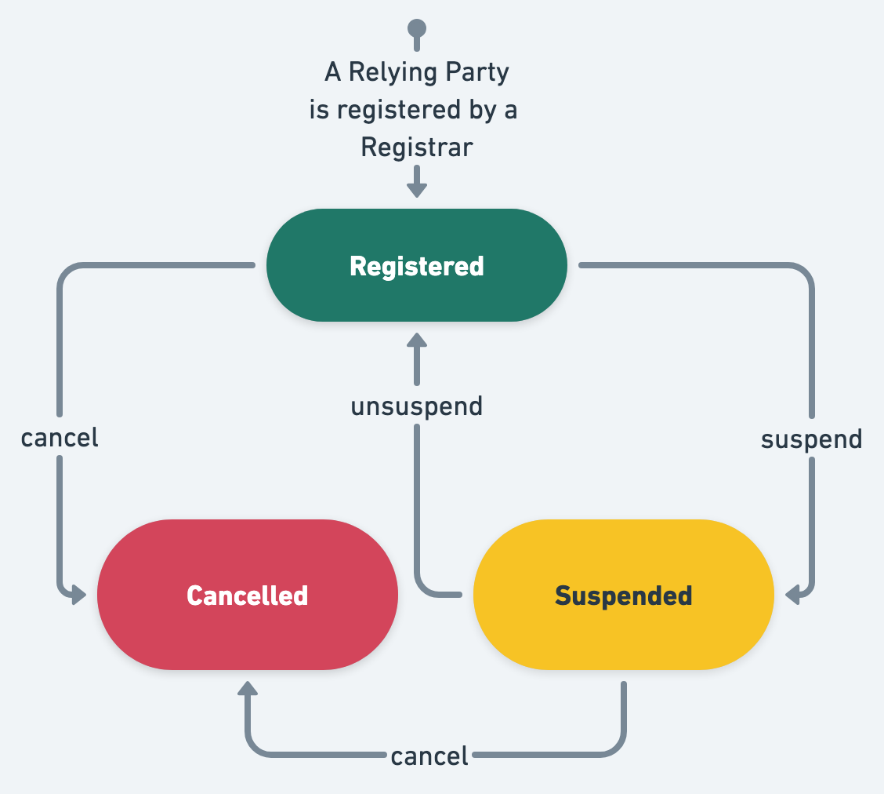
Figure 10: State diagram of Relying Party
The Registered state is the first state of a Relying Party. This means it has been registered by a Registrar, as described in Section 6.4.2.
The Registrar can suspend registration of a Relying Party. This leads to the Suspended state. The Registrar can unsuspend the Relying Party, bringing it back to the Registered state. The Registrar can also decide to completely cancel registration of the Relying Party, which brings it in the Cancelled state. For more information about suspension or cancellation, please refer to Section 6.4.3. A Wallet Unit will not present a PID or attestation to a Relying Party that has its registration suspended or cancelled.
4.7 Pseudonyms
4.7.1 Introduction to Passkeys
As specified in [CIR 2024/2979], [W3C WebAuthn] defines the technical specification for pseudonyms. Passkeys are a widely used type of credential which are created and asserted using the WebAuthn API.
Passkeys are to be seen as an alternative to passwords. The idea is that a User, when registering a user account at a service, uses a secure device to generate a public-private key pair, registers the public key at the service, and can then subsequently use the private key to authenticate towards the service at later points in time.
In a bit more detail, the flow for using Passkeys is as follows:
Registration:
- The User generates a public-private key pair and stores both the public and the private key at their secure device (referred to as an Authenticator).
- The User registers the public key at the desired Relying Party service.
Authentication:
- When the User wishes to authenticate towards a service, the service will send them a challenge consisting of a random value.
- The User uses the private key stored on their Authenticator to sign the challenge and sends this back to the service.
- The service verifies that the signature on the challenge can be verified using the registered public key. If the signature verifies and the origin matches the expected origin, the User is considered authenticated and thereby granted access to the service.
For high-level requirements on the use of WebAuthn and Passkeys, see Topic 11. Note that the Commission will create or reference a technical specification containing all details necessary for Wallet Units and Relying Parties to generate, register, and use Pseudonyms.
4.7.2 Introduction to [W3C WebAuthn]
4.7.2.1 Overview
[W3C WebAuthn] defines an API for the creation and use of Passkeys. Conceptually, in addition to the User, there are four different logical components in this specification:
- Relying Party Server: The Relying Party that wishes to offer a service based on authentication using Passkeys.
- Relying Party Client: The program provided by the Relying Party that runs in the Client of the User and communicates with the Relying Party Server. The Relying Party Client is typically some JavaScript code, provided by the Relying Party, that runs on the Client (i.e., browser).
- Client: The client that the User uses to interact with the Relying Party's server and with the User's authenticator. The Client can be thought of as the browser that the User uses to access the Relying Party's service.
- Authenticator: The device controlled by the User to create, store, and use the Passkeys. In the context of the EUDI Wallet, the Wallet Unit is the Authenticator.
Note that the Relying Party Client and the Client are two programs that are executed on the same physical machine.
[W3C WebAuthn] defines a model dividing the responsibilities between these different entities and defines an interface between the Relying Party Client and the Client. Additionally, it defines a challenge/response protocol to authenticate with Passkeys. The interface is referred to as the WebAuthn API.
However, [W3C WebAuthn] does not specify how the Authenticator and the Client must communicate.
[W3C WebAuthn] relies on several different types of identifiers, including:
- Relying Party ID: An identifier unique to the Relying Party, which must be a valid domain string. This what the User will identify the Relying Party by and let the Authenticator learn which Relying Party is asking for registration/authentication.
- Credential ID: A unique identifier chosen by the Authenticator for each Passkey.
- User ID: An identifier unique to each User, which is assigned by the Relying Party. This will be provided to the Authenticator when registering a new Passkey. Subsequently, it will be provided by the Authenticator when authenticating towards the Relying Party. The Authenticator will keep track of which Passkeys are available for which User IDs and Relying Party IDs. The Relying Party keeps track of a User Name for each User ID.
- User Name: An alias that may be chosen by the User or the Relying Party and assigned to a specific Passkey on the Authenticator. This allows the User to easily distinguish and select which Passkey they want to authenticate with, if several are present in the Authenticator for the given Relying Party.
The next sections elaborate on how the different components work together to allow the registration and subsequent authentication using Passkeys.
4.7.2.2 Registration
The flow for registering a Passkey in [W3C WebAuthn] is the following:
- The User requests (out of band of WebAuthn) the Relying Party to create a new Pseudonym.
- The Relying Party Server creates a challenge and sends this along with the User ID, the Relying Party ID, and the User Name to the Relying Party Client.
- The Relying Party Client forwards the information to the Client using the WebAuthnAPI.
- The Client checks that the Relying Party ID is consistent with the caller's origin and forwards the information to the Authenticator along with other contextual data.
- The Authenticator authenticates the User (for example using a PIN or via biometrics). It then generates a new key pair with a new Credential ID and set the scope of this to the specific Relying Party ID and User ID. Finally, the Authenticator may generate an attestation (explained in Section 4.7.2.3) and send this, as well as the public key and its Credential ID, to the Client.
- The Client then forwards the information to the Relying Party Client that again forwards it to the Relying Party Server.
- The Relying Party Server verifies the attestation (if present) and registers the received public key for this User ID.
Note that the Authenticator stores the public key in a way such that it is scoped uniquely to a specific Relying Party, aligning with the requirements of [CIR 2024/2979], Article 14 (2), which states that the pseudonyms must be unique to each Relying Party.
4.7.2.3 Pseudonym attestation
The term 'attestation' is here used differently than elsewhere in the ARF. In this context, the attestation is not about attributes of the User, but rather about attributes of the Authenticator. The attestation serves to ensure the Relying Party that they are talking with an Authenticator with certain attributes. The attestation often takes the form of a signature on the challenge as well as some other contextual data.
In [W3C WebAuthn], five different types of attestations are mentioned:
-
Basic Attestation: The Authenticator stores a single master public and private key. The private key is used to sign all attestations and a certificate on the public key is included in the attestation data to allow the Relying Party to verify the signature.
-
Attestation CA: Similar to the above, in the sense that the Authenticator stores a single master public and private key. However, instead of using this to attest Passkeys, the Authenticator uses this to authenticate towards a Certificate Authority (CA), which is configured to issue certificates to the Authenticator on multiple attestation key pairs. The Authenticator then uses these attestation private keys to sign attestations.
-
Anonymisation CA: Similar to the second bullet above, except that it is explicit that the Authenticator requests a certificate for a new attestation key pair per generated Passkey.
-
Self Attestation: The attestation is signed with the private key of the newly generated key pair in the Passkey. Note that this does not give any guarantees for the Relying Party about the Authenticator they are interacting with.
-
No Attestation Statement: No attestation is given. Note that this does not give any guarantees for the Relying Party about the Authenticator they are interacting with.
Please note that Article 5a (5) a) viii) of the [European Digital Identity Regulation] states "European Digital Identity Wallets shall, in particular support common protocols and interfaces: ... for relying parties to verify the authenticity and validity of European Digital Identity Wallets;...". The latter two forms of attestation do not align with this requirement. Section 5.1 of the Discussion Paper for Topic E discusses how the other three possibilities relate to privacy risks about User surveillance identified in Section 7.4.3.5.
4.7.2.4 Authentication
The flow for authentication using a Passkey following [W3C WebAuthn] is:
- The Relying Party Server creates a challenge and sends this along with its Relying Party ID to the Relying Party Client.
- The Relying Party Client forwards the information to the Client using the WebAuthn API.
- The Client checks that the Relying Party ID is consistent with the caller's origin and forwards the information to the Authenticator along with other contextual data.
- The Authenticator authenticates the User (for example using a PIN or via biometrics). It then prompts the User to select one of the Passkeys scoped to this Relying Party ID, if there are multiple. For this step the User Name can be presented to the User. Finally, the Authenticator uses the private key of the chosen key pair (= Passkey) to sign the challenge as well as some contextual data including the User ID, Credential ID, and the Relying Party ID. The Authenticator then sends this to the Client.
- The Client forwards the information to the Relying Party Client, which again forwards it to the Relying Party Server.
- The Relying Party Server verifies the signature with the stored public key for this User ID and Credential ID, and, depending on the outcome of this verification, considers the User to be authenticated.
5 Data model and data exchange protocols
5.1 Attestation elements
Within the EUDI Wallet ecosystem, data is exchanged in the form of Electronic Attestations of Attributes (EAA), hereafter referred to as "attestations." Apart from EAA, the [European Digital Identity Regulation] explicitly defines another category of data, called Person Identification Data (PID), see Section 5.2.
Each PID and attestation consists of the following key elements:
-
A set of attributes, which provide information about the subject of the attestation. The subject of the PID or attestation may be a natural person or a legal person. A Relying Party will request one or more of these attributes to get the reliable information they need to provide some service to the User. The set of attributes that an attestation may contain is defined in an attribute schema, see below.
-
A set of metadata, meaning information about the attestation itself, such as its attestation type (PID, mDL, diploma, etc.), its Attestation Provider, and its administrative validity period, if applicable. This kind of metadata is also defined in an attribute schema. In addition, metadata also includes information that is necessary to ensure the security of the attestation. This includes at least its technical validity period. It also includes a public key of the attestation, which a Relying Party will use to verify that the attestation was not copied, see Section 6.6.3.8. It may also include information allowing the Relying Party to verify that the attestation was not revoked, see Section 6.6.3.7.
-
A proof, which ensures the integrity, authenticity, and support of selective disclosure of the attestation. The format of the proof complies with the proof mechanism specified for this type of attestation, see below. The proof includes information that enables a Relying Party to verify the proof, for example a Attestation Provider certificate and a reference to a trust anchor that can be used to verify that certificate.
An attribute schema defines the logical organisation of all mandatory and optional attributes within an attestation, as well as the format of each attribute, meaning its unique identifier, encoding, allowed values, and serialisation. In addition, an attribute schema specifies some of the attestation metadata, such as its attestation type and information about its Attestation Provider, validity period, etc. Within the EUDI Wallet ecosystem, the attribute schema for each attestation type is specified by an Attribute Schema Provider in an Attestation Rulebook according to Section 5.4.
A proof mechanism defines the method used to create the attestation proof. For example, a 'standard' digital signature is a proof ensuring integrity and authenticity, but not allowing selective disclosure. Proof mechanisms are specified in standards or technical specifications. The attestation formats listed in Section 5.3 either specify a proof mechanism that allows for selective disclosure, or leave it to other technical specifications to do so.
5.2 Attestation categories
5.2.1 Overview
Within the European Digital Identity Wallet ecosystem, the [European Digital Identity Regulation] distinguishes four legal categories of attestations:
- Person Identification Data (PID),
- Qualified Electronic Attestation of Attributes (QEAA),
- Electronic attestation of attributes issued by or on behalf of a public sector body responsible for an authentic source (PuB-EAA),
- Non-Qualified EAA.
The next subsections give more information about each of these categories. Please note that the differences between them are purely legal. For example, a diploma may be a QEAA or a non-qualified EAA, depending on whether it is issued by a qualified trust service provider (QTSP) or by an unqualified one. Similarly, an mDL may be issued as a PuB-EAA, a QEAA, or a non-qualified EAA, depending on the legal status of the party issuing mobile driving licences in each Member State. From a technical point of view, all PIDs, QEAAs, PuB-EAAs, and EAAs comply with one of the attestation formats listed in Section 5.3.
5.2.2 Person Identification Data (PID)
A PID is a set of data that is issued in accordance with Union or national law and that enables the establishment of the identity of a natural or legal person, or of a natural person representing another natural person or a legal person.
Besides the fact that the Regulation defines the PID as a category of data that is legally distinct from Electronic Attestations of Attributes (EAA), another difference between PID and EAA is that the presence or absence of a valid PID determines whether a Wallet Unit is in the Operational or the Valid state, as discussed in Section 4.6.3.
As implied in that section, it is possible for a Wallet Unit to contain multiple PIDs. If the User has multiple nationalities, they may be able to receive a PID from multiple PID Providers in a single Wallet Unit. However, please note that a Wallet Provider is free to decide that its Wallet Unit does not support all PID Providers, and that, conversely, a PID Provider may decide that it does not support all Wallet Solutions; see Section 6.5.2.3. Note that the subject of all PIDs in the Wallet Unit will be the same person, namely the User of the Wallet Unit.
For more information, please refer to Section 3.4.
5.2.3 Qualified Electronic Attestation of Attributes (QEAA)
A QEAA is an electronic attestation of attributes which is issued by a qualified trust service provider (QTSP) and meets the requirements laid down in Annex V of the Regulation. For more information, please refer to Section 3.6.
5.2.4 Electronic attestation of attributes issued by or on behalf of a public sector body responsible for an authentic source (PuB-EAA)
A PuB-EAA is an electronic attestation of attributes issued by a public sector body that is responsible for an authentic source or by a public sector body that is designated by the Member State to issue such attestations of attributes on behalf of the public sector bodies responsible for authentic sources in accordance with Article 45f and with Annex VII of the Regulation.
For more information, please refer to Section 3.7.
5.2.5 Non-Qualified EAA
A non-qualified EAA is an EAA which is not a QEAA or a PuB-EAA. For more information, please refer to Section 3.8.
5.3 Attestation formats and proof mechanisms
5.3.1 Overview
Section 5.1 listed a proof mechanism as one of the key elements needed to define a type of attestation. The proof mechanism for an attestation is closely related to the format of that attestation. Within the EUDI Wallet ecosystem, the following standardised formats for electronic attestations of attributes can be used:
- The format specified in [ISO/IEC 18013-5] and generalised in [ISO/IEC 23220-2],
- The format specified in 'SD-JWT-based Verifiable Credentials' [SD-JWT VC],
- The format specified in 'W3C Verifiable Credentials Data Model v2.0' [W3C VCDM 2.0].
The next subsections give more information about each of these formats and specifications, and explain where the different elements of an attestation, as explained in Section 5.1 are defined for that attestation format.
Within the EUDI Wallet ecosystem, Wallet Units will support the first two formats above. Support for the third format is optional and meant for non-qualified EAAs only. Topic 12 states the detailed requirements regarding support by Wallet Units, PID Providers, and Attestation Providers for these formats and specifications.
5.3.2 ISO/IEC 18013-5 and ISO/IEC 23220-2
The ISO/IEC 18013-5 standard was originally developed as a standard for mobile driving licences (mDL) and mDL readers. In terms of this ARF, an mDL is a Wallet Unit containing an mDL attestation (as defined in the mDL Rulebook), while an mDL reader is a Relying Party requesting such an attestation.
ISO/IEC 18013-5 specifies:
- An attribute schema containing all attributes and metadata for an mDL. The schema specifies the semantics of these, as well as their encoding in Concise Binary Object Representation (CBOR), see [RFC 8949]. The standard also specifies the use of namespaces to avoid collision of attribute identifiers.
- A proof mechanism ensuring the authenticity and integrity of a PID or attestation, while allowing selective disclosure of attributes.
- A security mechanism enabling device binding of PIDs and attestations, see Section 6.6.3.8,
- All other aspects necessary to securely request, present, and verify an mDL attestation in proximity flows, see Section 5.6.1.2).
Point to note about ISO/IEC 18013-5:
- the mDL attribute schema (see first bullet above) is the only aspect of ISO/IEC 18013-5 that is specific for mDLs. All other aspects are generic and can be used for any other attestation type, including PIDs. This means that another ISO/IEC 18013-5-compliant attestation type can be created simply by specifying an appropriate attribute schema using CBOR, and referring to ISO/IEC 18013-5 for all other details. Please refer to Chapter 4 of the PID Rulebook for an example. Within the EUDI Wallet ecosystem, such an attribute schema is specified in an Attestation Rulebook, see Section 5.4. ISO/IEC 23220-2 specifies a generic set of attributes for use in different attestation types, and also specifies how these can be encoded in CBOR. - An ISO/IEC standard for mobile documents in general (not mDLs specifically) is in preparation and will become ISO/IEC 23220-4. This standard will generalise ISO/IEC 18013-5, in the sense that it will allow more options and communication flows. Once that standard is published, all references in this ARF to ISO/IEC 18013-5 may be replaced by appropriate references to ISO/IEC 23220-4. However, at the moment ISO/IEC 23220-4 is not finished yet and therefore cannot be referenced.
5.3.3 SD-JWT VC
'SD-JWT-based Verifiable Credentials' [SD-JWT VC] specifies a data format and processing rules to express verifiable credentials (i.e., attestations). "SD-JWT" here stands for 'Selectively Disclosable JSON Web Token'. As that name suggests, SD-JWTs are a special form of JWTs [RFC 7519] that are selectively disclosable. The mechanisms used to make them selectively disclosable is often described as using 'salted hashes', and is conceptually identical to the mechanism used for the same purpose in [ISO/IEC 18013-5].
[SD-JWT VC] specifies the following aspects:
- The encoding to be used for attributes and metadata, namely JSON, as well as rules to prevent collisions of claim names,
- A proof mechanisms ensuring the authenticity and integrity of a PID or attestation, while allowing selective disclosure of attributes, see above.
- A security mechanism enabling device binding of PIDs and attestations, see Section 6.6.3.8.
In addition to these aspects, within the EUDI Wallet ecosystem,
- attribute schemas for specific SD-JWT VC-compliant attestation types will be specified in Attestation Rulebooks, see Section 5.4. Please refer to Chapter 5 of the PID Rulebook for an example.
- SD-JWT VC-compliant attestations will be requested and presented using [OpenID4VP], see Section 5.6.1.3.
Since [SD-JWT VC] contains a number of options, the use of the profile for SD-JWT VCs specified in [HAIP] is necessary to ensure interoperability between Wallet Units and Relying Parties.
5.3.4 W3C Verifiable Credentials
The W3C Verifiable Credentials Data Model [W3C VCDM 2.0] defines a general data model, offering a high-level structure but leaving many technical aspects open for further definition, including:
- Security mechanisms
- Signature formats
- Transport protocols
Key features of W3C VCDM are:
- JSON-LD (Linked Data)-based: The use of JSON-LD ensures structured and interoperable data exchange, but introduces complexity.
- Extensible Framework: Allows different implementations but requires additional specifications.
- Security and Signature Formats: Not inherently defined — must be specified separately.
To implement W3C VCDM-based attestations, separate specifications are needed for security mechanisms and signatures, such as:
- 'Securing Verifiable Credentials using JOSE and COSE' [W3C VC-JOSE-COSE]:
Defines how to use one of the following to secure attestations in the VCDM
model:
- a JWT (see [RFC 7519]),
- a SD-JWT (see the previous section), or
- a CBOR Web Token (CWT, see [RFC 8392]).
- 'Verifiable Credential Data Integrity' [W3C VC Data Integrity]: Provides a cryptographic proof format independent of JWT or CWT, relying on detached proofs (not embedded signatures) for better flexibility.
These mechanisms offer different trade-offs, allowing PID Providers or Attestation Providers and Relying Parties to choose the appropriate security model based on their privacy, interoperability, and trust requirements. In order to achieve interoperability, the specification of a profile standard making specific choices will be necessary.
In addition to these aspects, within the EUDI Wallet ecosystem,
- attribute schemas for specific W3C VCDM-compliant attestation types (if any) will be specified in Attestation Rulebooks, see Section 5.4.
- W3C VCDM-compliant attestations may be requested and presented using [OpenID4VP], see Section 5.6.1.3. However, this ARF does not require this, and for any W3C VCDM-compliant attestation, the applicable transport protocol must be defined in the corresponding Rulebook.
See chapters 3 and 4 of the Discussion Paper for Topic V for more considerations regarding the SD-JWT VC and W3C Verifiable Credential formats and their interoperability within the EUDI Wallet ecosystem.
5.4 Attribute schemas and Attestation Rulebooks
Section 5.1 listed an attribute schema as one of the key elements needed to define a type of attestation. This section specifies the concept of an Attestation Rulebook. For each type of attestation, such as a PID, an mDL, a diploma, or an e-prescription, an Attestation Rulebook specifies the attribute schema and proof mechanisms of that attestation, and, when required, the trust mechanisms for authentication and authorisation. Each attestation has an attestation type. The attribute schema specified in the Attestation Rulebook defines the unique identifier, syntax, and semantics of all attributes that can be part of that attestation.
An Attestation Rulebook also makes some choices regarding the protocol(s) for presentation that must be supported by the relevant attestations. Topic 12 contains the requirements for Attestation Rulebooks.
Attestation Rulebooks are defined by Attribute Schema Providers, see Section 3.15. This role can be assumed by different types of organisation:
- Some Rulebooks already have been defined by the European Commission, in consultation with the European Digital Identity Cooperation Group (EDICG). This concerns the PID Rulebook and the mDL Rulebook in Annex 3 of the ARF.
- The Rulebook for an attestation intended to be used across organisations and/or across borders can be defined by an organisation in which, insofar possible, all stakeholders are represented. This will prevent multiple Attestation Rulebooks being defined for the same type of attestation, such as diplomas. It will also prevent unnecessary differences in the syntax and semantics between similar attestations. The decision on which organisation will be responsible for a given Attestation Rulebook is out of scope for this document. As explained in Topic 12, it is possible that an individual Attestation Provider needs to include attributes in an attestation that have not been specified in the relevant sectoral or EU-wide Rulebook. An example of this are attributes that only have a meaning within the Member State in which the Attestation Provider resides. To allow such domestic attributes, an Attestation Provider can define a custom Rulebook to specify attributes that are specific to this Provider and are not included in the EU-wide or sectoral Rulebook.
- The Rulebook for an attestation intended to be used only within an organisation will be defined by that organisation.
5.5 Catalogues
Section 2 in Article 45e of the Regulation, sets up the direct legal basis for the Commission to "where necessary, establish specifications and procedures for the catalogue of attributes and schemes for the attestation of attributes and verification procedures for qualified electronic attestations of attributes".
One of the main rationales for the ARF is to reach a high level of interoperability. This interoperability can be achieved on different layers. On the technical level, interoperability can be achieved by using common standards, protocols and technical specifications, ensuring common language for Attestation Providers, Wallet Providers and Relying Parties, enabling issuance, presentation and processing of attestations, based on agreed common protocols interfaces and syntax.
The other layer is the semantic one and relates to semantic schemes of attributes. The risk is that an uncontrolled manner of implementation and usage will create barriers and complicate the implementation, thus making the ecosystem much more costly to create and maintain, complex, and error-sensitive, affecting the quality of the overall system.
For the development and success of the EUDI Wallet ecosystem, re-using the building blocks of attributes and attestations is therefore essential. Creating and maintaining controlled vocabularies, a catalogue of attributes, and Attestation Rulebooks enables shorter 'time-to-market' and efficient implementation.
Building on the requirements of Topic 12, having in mind both the need for interoperability on the one hand and the varied nature of attestations and organisations specifying those attestations on the other hand, the following principles were defined:
- Attestation Rulebooks for QEAAs and PuB-EAAs used within the EUDI Wallet ecosystem may be registered and published in a publicly accessible catalogue. The Attestation Rulebook catalogue may also include Attestation Rulebooks for non-qualified EAAs.
- The Commission will take measures to establish and maintain the Attestation Rulebooks catalogue.
- The Attestation Rulebooks catalogue will enable Attestation Providers, Relying Parties and other actors in the EUDI Wallet ecosystem to know which attestation types exist, and what are the identifiers, syntax, and semantics of all attributes that are part of the attestation.
Also, the following points are emphasised, to facilitate creation and adoption:
- Registration of an Attestation Rulebook in the Attestation Rulebook catalogue is not mandatory.
- Registration does not create any obligation or automatic acceptance by any third party, or automatically imply cross-border recognition of the type of attestation described in the Rulebook.
- The Attestation Rulebooks catalogue can be in the same environment as the catalogue of attributes.
Implementation of these principles will be discussed further in detail. The ambition is to use existing efforts and tools created by the Member States, the Commission and cross-border organisations, to connect and interact with the stakeholders, to utilise existing data assets for updating them when needed and add new data sets to support new use cases that will be implemented in the EUDI Wallet ecosystem.
Topic 25 and Topic 26, present the current and foreseen status of the catalogues, their creation, distribution, discovery, management and maintenance, that will allow simple update procedures, not burdening the process on the one hand, while ensuring consistent and on-going mechanisms to keep the catalogues updated and accessible to the relevant actors, both those that create the content and those that use, consume and process the attributes and the attestations, and - last but not least - for the general public.
5.6 Protocols for secure data exchange between Wallet Units and Relying Parties
5.6.1 Attestation presentation
5.6.1.1 Introduction
Within the EUDI Wallet ecosystem, the protocol specified in ISO/IEC 18013-5 is used for proximity attestation presentation flows, while the protocol specified in OpenID4VP is used for remote attestation presentation flows. This section briefly describes both of these protocols.
5.6.1.2 Attestation presentation using ISO/IEC 18013-5 and ISO/IEC 18013-7
ISO/IEC 18013-5 specifies the following aspects related to secure data exchange:
- Message structures and transaction flows allowing a Wallet Unit and a Relying Party to request and present attestations.
- Proximity interface specifications, allowing a Wallet Unit and a Relying Party to set up a communication channel using QR code or NFC, and to subsequently communicate over BLE, NFC, or Wi-Fi Aware.
- Security mechanisms ensuring
- the confidentiality and authenticity of all data exchanged between a Wallet Unit and a Relying Party,
- Relying Party authentication, see Section 6.6.3.2.
As already explained in Section 5.3.2, although ISO/IEC 18013-5 nominally specifies the mobile driving licence, all of the above aspects are generic and can be used for any type of attestation.
Whereas ISO/IEC 18013-5 specifies proximity transaction flows only, ISO/IEC 18013-7 specifies how to request and present ISO/IEC 18013-5-compliant attestations in remote transaction flows. This standard specifies three options:
- Using the messages and transaction flows specified in ISO/IEC 18103-5 over an HTTP-based interface.
- Using [OpenID4VP], see Section 5.6.1.3. [ISO/IEC 18013-7] specifies a profile for this standard,
- Using the Digital Credential API, see Section 4.4.3. [ISO/IEC 18013-7] specifies a profile for the use of this API.
Within the EUDI Wallet ecosystem, the second option above will be used for requesting and presenting ISO/IEC 18013-5-compliant attestations in remote transaction flows.
5.6.1.3 Attestation presentation using [OpenID4VP]
The [OpenID4VP] standard defines message structures, transaction flows, and an HTTP-based interface specification between Wallet Units and Relying Parties. [OpenID4VP] also specifies security mechanisms ensuring:
- the confidentiality and authenticity of all data exchanged between a Wallet Unit and a Relying Party,
- Relying Party authentication.
[OpenID4VP] is suitable only for remote transaction flows.
[OpenID4VP] can be used for transporting attestations in different formats, including especially the formats used within the EUDI Wallet ecosystem. Within this ecosystem, [SD-JWT VC]-compliant attestations are always requested and presented using [OpenID4VP], while [ISO/IEC 18013-5]-compliant attestations are requested and presented using [OpenID4VP] in remote transaction flows.
Since [OpenID4VP] contains a number of options, the use of the profile for 'OpenID for Verifiable Presentations for IETF SD-JWT VC' specified in [HAIP] is necessary to ensure interoperability between Wallet Units and Relying Parties.
5.6.2 Transactional data using [ISO/IEC 18013-5] and [OpenID4VP]
In some use cases, a Relying Party must be able to include additional data in the attestation presentation request. Primary examples include strong customer authentication for payments, see Section 2.6.4, and the creation of qualified electronic signatures, see Section 2.4. In the case of strong customer authentication for payments, the Relying Party sends payment information, such as the payment amount and the payee, to the Wallet Unit. In the case of electronic signatures, the Relying Party may send (a representation of) data to be signed to the Wallet Unit. In Topic 20, such data is called transactional data.
The Wallet Unit will process the transactional data in a use-case specific way, and, after consulting the User, will sign a (representation of the) transactional data to authenticate it. The Wallet Unit will then return the signed data in the presentation response, together with the presented attributes, if any.
Both [ISO/IEC 18013-5] and [OpenID4VP] allow for sending, authenticating, and returning transactional data. In both protocols, the presentation request can be extended with use-case specific (proprietary) transactional data. The Wallet Unit can subsequently sign this data by including it in the device binding process, see Section 6.6.3.8. Therefore, no extensions of the presentation response are necessary to return the signed transactional data.
6 Trust model
6.1 Scope
The trust model presented in this chapter defines how trust is established, maintained, validated, and managed among entities within the EUDI Wallet ecosystem. It outlines the underlying rules, assumptions, and mechanisms that govern trust relationships, determining whether an entity (such as a Wallet Unit, User Device, or Relying Party) can be considered trustworthy.
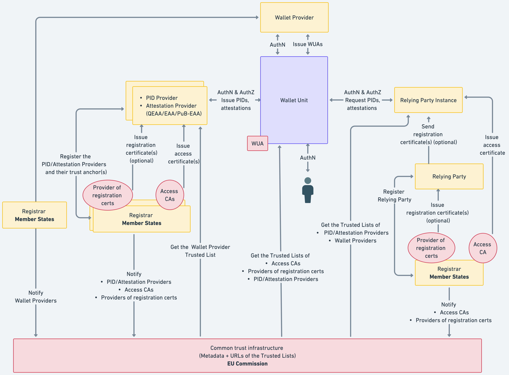
Figure 11 illustrates the key entities and the relationships in the trust model of the EUDI Wallet ecosystem.
At its core is the Wallet Unit (top middle, blue), which interacts with various entities throughout its lifecycle. The Wallet Unit lifecycle is detailed in Section 6.5 and consists of installation, activation, management, and uninstallation. Each Wallet Unit is a configuration of a Wallet Solution, comprising a Wallet Instance and one or more WSCA/WSCDs, provided by a Wallet Provider. The Wallet Provider oversees these components and manages their registration, cancellation, or suspension (see Section 6.2). The Wallet Provider ensures that a valid Wallet Unit is in possession of at least one Wallet Unit Attestation (WUA), to enable other entities to authenticate the Wallet Unit. The Wallet Provider can revoke the WUAs if needed.
The Wallet Unit handles User PIDs and attestations (QEAAs, PuB-EAAs, and non-qualified EAAs). PIDs are issued by PID Providers and attestations by Attestation Providers, both positioned to the left of the Wallet Unit in Figure 11. Before interacting with a Wallet Unit, these Providers must be registered by a Registrar. Upon registration, they receive an access certificate from a Access Certificate Authority associated with the Registrar. They may optionally obtain a registration certificate from an associated Provider of registration certificates. See Section 6.3.
After a Wallet Unit has received a PID or attestation, it can present User attributes to Relying Party Instances (right side of Figure 11). These instances are hardware/software setups enabling Relying Parties to interact with Wallet Units. Like PID Provider or Attestation Providers, Relying Parties register with a Registrar, and receive an access certificate for each of their Relying Party Instances. A Relying Party may optionally obtain one or more registration certificates from a Provider of registration certificates *associated with the Registrar. This is discussed in Section 6.4.
Notes:
- This conceptual trust model may be implemented with slight variations across Member States, such as adopting one or multiple Certification Authorities or leveraging existing entities that already fulfil this role.
- For PIDs, qualified EAAs, PuB-EAAs, access certificates, and registration certificates, interoperability is essential (Section 4.2.2). Interoperability is achieved by using a PKI following X.509 certificate standards (RFC5280, RFC3647). Non-qualified EAAs may adopt alternative trust models and verification mechanisms.
- The model supports both remote and proximity use cases, though technical measures and authentication mechanisms may vary.
- This version of the ARF does not yet include trust interactions for qualified electronic signatures or seals; see Topic 16 and Topic 37 in Annex 2.
- Besides the trust relationships described in this chapter, other trust relations are established as well. For instance, Users, PID Providers, Attestation Providers, and Relying Parties trust certification bodies and Trusted List Providers. This trust is primarily rooted in authority and in procedural measures, such as public oversight, published security and operational policies, and audits, rather than in technical measures. To verify that entities are indeed interacting with a trusted authority, standard technical measures suitable for the context will be used.
6.2 Trust throughout a Wallet Solution lifecycle
6.2.1 Wallet Solution lifecycle
Section 4.6.2 presented the lifecycle of a Wallet Solution:
- The Wallet Provider responsible for the Wallet Solution is notified to the Commission by a Member State. As a result, the Wallet Solution enters the Valid state. This is discussed in Section 6.2.2.
- Under specific conditions, a Member State may decide to suspend or cancel a registered Wallet Provider. This is discussed in Section 6.2.3.
6.2.2 Wallet Provider registration and notification
Figure 11 depicts the Wallet Provider to the top of the Wallet Unit. To the left and below of this, the figure also shows that a Wallet Provider registers itself and its Wallet Solution with a Wallet Provider Trusted List Provider in its Member State. Subsequently, the Member State notifies the Wallet Provider to the European Commission.
The Wallet Solution provided by the Wallet Provider is certified as described in Chapter 7.
If the registration and notification processes are successful, the trust anchors of the Wallet Provider are included in a Wallet Provider Trusted List. During issuance of a PID or an attestation, the PID Provider or the Attestation Provider can use these trust anchors to verify the authenticity of a Wallet Unit Attestation signed by the Wallet Provider, so they can be sure they are dealing with an authentic Wallet Unit from a trusted Wallet Provider. See Section 6.6.2.3, Topic 9 and Topic 38.
If a certain entity offers multiple Wallet Solutions, they will register as a separate Wallet Provider for each of these Wallet Solutions. This implies that such an entity will register different trust anchors for each of their Wallet Solutions.
More details on the Wallet Provider notification process can be found in Topic 31.
6.2.3 Wallet Provider suspension or cancellation
Under specific conditions, a Member State may decide to suspend or cancel a Wallet Provider. This implies that the Wallet Provider's status in the respective Trusted List will be changed to Invalid. As a result of this status change, PID Providers, Attestation Providers, and Relying Parties will no longer trust the trust anchors of the Wallet Provider and will therefore refuse to interact with any Wallet Unit provided by that Wallet Provider.
When a Member State cancels a Wallet Provider, the Wallet Provider revokes all valid WUAs for all Wallet Units.
If an entity has registered multiple Wallet Providers, each offering a different Wallet Solution, and one of these Wallet Providers is suspended or cancelled, only the applicable Wallet Solution will be impacted. It may happen that the reason for suspension or cancellation is applicable to all Wallet Solutions offered, in which case all of the Wallet Providers registered by that entity will be cancelled or suspended separately.
6.3 Trust throughout a PID Provider or an Attestation Provider lifecycle
6.3.1 PID Provider or Attestation Provider lifecycle
Section 4.6.4 presented the lifecycle of a PID Provider or Attestation Provider:
- A PID Provider or an Attestation Provider is registered by a Trusted List Provider in its Member State. This is discussed in Section 6.3.2.
- Under specific conditions, a Trusted List Provider may decide to suspend or cancel registration of a registered PID Provider or Attestation Provider. This is discussed in Section 6.3.3.
6.3.2 PID Provider or Attestation Provider registration and notification
6.3.2.1 Introduction
Figure 11 depicts the PID Providers and Attestation Providers to the left of the Wallet Unit. To the left and below of this, the figure also shows that each PID Provider and Attestation Provider will register itself with a Registrar in its Member State. The Member State notifies the PID Provider or Attestation Provider to the European Commission.
If the registration and notification processes are successful, at least the following happens:
- Data about the PID Provider or Attestation Provider is included in the registry of the relevant Registrar.
- The PID Provider or Attestation Provider receives an access certificate and optionally one or more registration certificates.
- The trust anchors of the PID Provider or Attestation Provider are included in a Trusted List.
These processes are discussed in the next subsections.
6.3.2.2 Data about the PID Provider or Attestation Provider is included in the registry
When a PID Provider or Attestation Provider is registered, the Registrar registers a set of data about the PID Provider or Attestation Provider in its register. The Registrar makes the contents of the register available to the general public, both in machine-readable and human-readable format.
The data to be registered about a PID Provider or Attestation Provider includes the attestation type(s) that the PID Provider or Attestation Provider intends to issue to Wallet Units. This will enable Wallet Units and Relying Parties to verify the entitlement of a given PID Provider or Attestation Provider to issue a specific attestation type. For example, a PuB-EAA Provider may be entitled to issue mDLs in a specific Member State, but may not be entitled to issue diplomas.
Note that the need to verify this entitlement depends on the legal status of the Provider:
- For PID Providers, their entitlement to issue PIDs follows already from the fact that their trust anchors are included in the PID Provider Trusted List; see Section 6.3.2.4.
- For QEAA Providers, no checking of entitlement (apart from the fact that they are a QEAA) is necessary, since QEAA Providers are trusted by other actors in the EUDI Wallet ecosystem to not fraudulently issue attestations that they are not legally entitlement to issue. This trust is warranted since QEAA Providers operate within a regulated framework and are regularly audited.
- For PuB-EAA Providers, checking of entitlement may be necessary, since the legal and regulatory framework within which they operate is different from that of QEAAs. To verify the entitlements of an PuB-EAA Provider it is interacting with, a Wallet Unit or Relying Party can query the registry of the Registrar mentioned in the access certificate of the PuB-EAA Provider.
- For non-qualified EAA Providers, checking of entitlement is necessary, since they are unregulated and may not be completely trustworthy. Without additional measures, a fraudulent EAA Provider may be able to issue types of QEAAs, PuB-EAAs or EAAs that it is not legally entitled to issue. To prevent this, a Wallet Unit or Relying Party may query the applicable register, as described in the previous bullet. In addition, the applicable Rulebook (see Topic 12)
- For PID Providers, their entitlement to issue PIDs follows already from the fact that their trust anchors are included in the PID Provider Trusted List; see Section 6.3.2.4.
- For QEAA Providers, no checking of entitlement (apart from the fact that they are a QEAA) is necessary, since QEAA Providers are trusted by other actors in the EUDI Wallet ecosystem to not fraudulently issue attestations that they are not legally entitled to issue. This trust is warranted since QEAA Providers operate within a regulated framework and are regularly audited.
- For PuB-EAA Providers, checking of entitlement may be necessary, since the legal and regulatory framework within which they operate is different from that of QEAAs. To verify the entitlements of an PuB-EAA Provider it is interacting with, a Wallet Unit or Relying Party can query the registry of the Registrar mentioned in the access certificate of the PuB-EAA Provider.
- For non-qualified EAA Providers, checking of entitlement is necessary, since they are unregulated and may not be completely trustworthy. Without additional measures, a fraudulent EAA Provider may be able to issue types of QEAAs, PuB-EAAs or EAAs that it is not legally entitled to issue. To prevent this, a Wallet Unit or Relying Party may query the applicable register, as described in the previous bullet. In addition, the applicable Rulebook (see Topic 12) may define alternative mechanisms allowing a Wallet Unit or Relying Party to verify an EAA Provider's entitlements.
6.3.2.3 PID Provider or Attestation Provider receives an access certificate and a registration certificate
When a PID Provider or Attestation Provider is registered by a Member State, a Access Certificate Authority (see Section 3.18 issues one or more access certificates to the PID Provider or to the Attestation Provider. A PID Provider or an Attestation Provider needs such a certificate to authenticate itself towards a Wallet Unit when issuing a PID or an attestation to it, as described in Section 6.6.2.2.
A PID Provider access certificate does not indicate that its subject is a PID Provider. Similarly, an Attestation Provider access certificate does not indicate that its subject is a QEAA Provider, a PuB-EAA Provider, or a non-qualified EAA Provider. Such information is included in the registration certificates (if issued), and in any case available in the Registrar's online service. Furthermore, the access certificate of a PID Provider or Attestation Provider does not contain the Provider's entitlements, e.g. to issue attestations of a specific type, for instance an mDL or diploma.
Such information is instead available via the Registrar's online service. Additionally, the same information is included in a registration certificate issued to the PID Provider or Attestation Provider by a Provider of registration certificates, if the Registrar has a policy of issuing such certificates - see Section 3.17. To manage both situations - with use of a registration certificate and without - the access certificate of a PID Provider or Attestation Provider contains a URL to the Registrar's online service, which a Wallet Unit can use to obtain information on the Provider's registration. A Wallet Unit can use the information in the registration certificate (or obtained from the Registrar service) to verify that an Attestation Provider it is contacting to issue a specific type of attestation is entitled to do so. It can do this by verifying the legal status of the Provider and its entitlements.
See Section 6.6.3.3 to learn more about the registration certificate content.
6.3.2.4 PID Provider or Attestation Provider trust anchors are included in a Trusted List
For a PID Provider, a QEAA Provider, or a PuB-EAA Provider, successful registration and notification also means that the Provider is notified to the European Commission and that its trust anchors are included in a Trusted List. Relying Parties can use these trust anchors to verify the authenticity of PIDs, QEAAs, and PuB-EAAs they obtain from Wallet Units.
Non-qualified EAA Providers are not included in a Trusted List by a Member State. However, if a Relying Party requests a non-qualified EAA from a Wallet Instance, it must know how to obtain the domain-specific trust anchor it needs to verify the signature over that EAA. To help with this, Topic 12 recommends that the applicable Rulebook specifies the mechanisms enabling this. This mechanism may be similar to the one for QEAAs, namely that the relevant non-qualified EAA Providers and their trust anchors are included in a trusted list. However, other methods may be used as well, and even if such a trusted list exists, it does not have to comply with the requirements in Topic 31.
More details on the PID Provider or Attestation Provider notification process, as well as on the information registered and published in the PID Provider Trusted List or Attestation Provider Trusted List, can be found in Topic 31.
6.3.3 Suspension or cancellation of the registration of a PID Provider or Attestation Provider
Under specific conditions, a Registrar may decide to suspend or cancel the registration of a PID Provider or Attestation Provider. The conditions for this will be specified by each Registrar.
Suspension or cancellation implies that the PID Provider or Attestation Provider access certificates are revoked. As a result, the PID Provider or Attestation Provider will no longer be able to issue PIDs or attestations to Wallet Units.
For a PID Provider, QEAA Provider, or PuB-EAA Provider, suspension or cancellation also implies that its status in the respective Trusted List will be changed to Invalid. As a result, Relying Parties will no longer trust PIDs or attestations issued by that Provider. For non-qualified EAA Providers, the applicable Rulebook (see Topic 12) may define similar mechanisms ensuring that Relying Parties will no longer trust the trust anchors of EAA Providers of which the registration was suspended or cancelled.
When a Registrar suspends or cancels registration of a PID Provider or Attestation Provider, the PID Provider or Attestation Provider revokes all of their PIDs or attestations as described in Section 6.6.3.7.
6.4 Trust throughout a Relying Party lifecycle
6.4.1 Relying Party lifecycle
Section 4.6.6 presented the lifecycle of a Relying Party:
- A Relying Party is registered by a Registrar in the Member State where it resides. Relying Party registration is discussed in Section 6.4.2.
- Under specific conditions, a Registrar may decide to suspend or cancel registration of a Relying Party. This is discussed in Section 6.4.3.
6.4.2 Relying Party registration
Figure 11 depicts the Relying Party Instance to the right of the Wallet Unit. A Relying Party Instance is a combination of hardware and software used by a Relying Party to interact with a Wallet Unit. A Relying Party can use multiple Relying Party Instances, especially in case the interactions with the Wallet Unit take place in proximity, for instance, a border control agency at an airport employing multiple lines where arriving passengers can present their PID.
Figure 11 also shows the Relying Party. Below that, it shows that each Relying Party will register itself with a Registrar in its Member State. If the registration process is successful, the Registrar includes the Relying Party in its public registry.
A Relying Party may register in the context of several services, having different intended uses. Each intended use will require a different set of attributes to be obtained from a Wallet Unit. As a result, a single Relying Party may register multiple times and may be issued more than one registration certificate.
As a result of successful registration,
- a Provider of registration certificates (see Section 3.19) associated with the Registrar will issue one or more registration certificates to the Relying Party, if the Registrar has a policy of issuing such registration certificates. The purpose of the registration certificate is described in Section 6.6.3.3. It is up to each Registrar to decide if it issues registration certificates.
- an Access Certificate Authority (see Section 3.18) associated with the Registrar issues an access certificate to each Relying Party Instance of the Relying Party. A Relying Party Instance needs such a certificate to authenticate itself towards Wallet Units when requesting the presentation of attributes, as described in Section 6.6.3.2. Issuing access certificates to a registered Relying Party is mandatory.
More details on the Relying Party registration process can be found in Topic 27.
6.4.3 Relying Party suspension or cancellation
Under specific conditions, a Registrar may decide to suspend or cancel registration of a registered Relying Party. The conditions for this will be specified by each Registrar.
Suspension or cancellation involves revocation of all valid Relying Party Instance access certificates by the relevant Access CA, such that the Relying Party is no longer able to interact with Wallet Units.
6.5 Trust throughout a Wallet Unit lifecycle
6.5.1 Wallet Unit lifecycle
Section 4.6.3 above presented the lifecycle of a Wallet Unit:
- The Wallet Instance that is part of the Wallet Unit is installed on a device by a User. The required trust relationships for installation are discussed in Section 6.5.2 below.
- Next, the Wallet Unit is activated by the Wallet Provider and the User and becomes operational. The goals and required trust relationships for activation are discussed in Section 6.5.3.
- Once in the Operational or Valid state, the Wallet Unit is managed by the User and the Wallet Provider. This management includes at least revoking the Wallet Unit when necessary. This is discussed in Section 6.5.4. Management will also include regular updates of the Wallet Instance application to ensure its continued security and functionality. However, this is not further defined in this chapter.
- The User may uninstall the Wallet Instance; see Section 6.5.5.
6.5.2 Wallet Instance installation
6.5.2.1 Required trust relationships
The lifecycle of a Wallet Unit starts when a User decides to install a Wallet Instance application on their device. This application in an instance of a Wallet Solution, which is provided to the User by a Wallet Provider.
When downloading and installing the Wallet Instance, the following trust relationships are established:
- On behalf of the User, the OS of the User's device and the relevant app store verify that the Wallet Instance (i.e., the application the User is installing) is genuine and authentic and does not contain any malware or other threats.
- The User verifies that they can obtain the PID(s) they need in an instance of this Wallet Solution. If the relevant PID Provider does not support the Wallet Solution, the User will not be able to use the Wallet Unit for obtaining those PID(s).
The next two sections discuss these trust relationships.
6.5.2.2 Wallet Solution authenticity is verified
To ensure that the User can trust the Wallet Solution, Wallet Providers preferably make their certified Wallet Solutions available for installation via the official app store of the relevant operating system (e.g., Android, iOS). This allows the operating system of the device to perform relevant checks regarding the authenticity of the app. It also allows Users to use the same well-known channel for obtaining a Wallet Instance as they use for obtaining other apps. Finally, it avoids a situation where a User must allow side-loading of apps, which would increase the risk of unintentionally installing malicious apps.
If a Wallet Provider makes its Wallet Solution available for installation through other means than the official OS app store, it implements a mechanism allowing the User to verify the authenticity of the Wallet Unit. Moreover, the Wallet Provider provides clear instructions to the User on how to install the Wallet Unit, including:
- instructions on how to verify the authenticity of the Wallet Instance to be installed. This can be done, for example, by comparing the hash value of the application downloaded by the User with a hash value published by the Wallet Provider.
- instructions on bypassing of any operating system limitations on side-loading of apps, if applicable, and ensuring that these limitations are restored after the Wallet Instance has been installed.
Note: The [European Digital Identity Regulation] does not exclude the possibility that a Wallet Instance may be installed on a non-mobile device, for example a server. The requirements above also apply for the installation of a Wallet Unit on a User device that is not a mobile device, and for which no official operating system app store may exist.
6.5.2.3 User validates that Wallet Solution is usable with relevant PID
A User installs a Wallet Unit because they want to obtain and use one or more PIDs. However, PID Providers are not required to support all Wallet Solutions in the EUDI Wallet ecosystem. 'Support' here means that the PID Provider is willing to issue a PID to an instance of a given Wallet Solution on request of the User. Instead, a PID Provider may choose to support only a single Wallet Solution or a limited number of Wallet Solutions. Therefore, each PID Provider will publish a list of Wallet Solutions that they support, such that a User that wants to request a PID from that PID Provider knows which Wallet Unit they should install. This list could be published, for example, on the PID Provider's website.
Conversely, a Wallet Solution is not required to support all PID Providers, where 'support' means that it is able to request the issuance of a PID from a PID Provider. Each Wallet Provider will, prior to or during installation of a Wallet Instance, let the User know which PID Providers are supported by this Wallet Solution.
For QEAAs, PuB-EAAs, and non-qualified EAAs, the situation is different. Providers of such attestations will support all Wallet Solutions and are not allowed to discriminate between them when processing a request for the issuance of an attestation. Conversely, a Wallet Solution supports all Attestation Providers, and cannot discriminate between different Attestation Providers when requesting the issuance of an attestation at the User's request.
6.5.3 Wallet Unit activation
6.5.3.1 Introduction
After installation of the Wallet Instance, the new Wallet Unit (which includes that Wallet Instance) will contact the Wallet Provider to start the activation process. For successful EUDI Wallet Instance activation, the following trust relations are established:
- The EUDI Wallet Instance authenticates the EUDI Wallet Provider, meaning that the instance is sure that it is dealing with the genuine Wallet Provider who provided it to the User.
- The EUDI Wallet Provider authenticates the EUDI Wallet Instance. This means that the EUDI Wallet Provider is sure that the instance is indeed a true instance of their EUDI Wallet Solution, and not a fake app.
Both of these trust relationships are the responsibility of the Wallet Provider. The ARF does not specify how these trust relationships can be satisfied.
During the activation process, at least the following steps happen:
- The Wallet Provider requests data about the User's device from the Wallet Instance.
- The Wallet Provider requests the User to set up at least one User authentication mechanism.
- The Wallet Provider issues one or more Wallet Unit Attestations to the Wallet Unit.
- The Wallet Provider sets up a User account for the User.
These steps are described in the sections below.
6.5.3.2 Wallet Provider requests data about the User's device from the Wallet Instance
The Wallet Instance connects to the Wallet Provider to be activated. Then, the Wallet Provider requests data about the User's device from the Wallet Instance. This data may include the communication technologies supported by the device and the characteristics of the WSCD(s) available to the device for securely storing cryptographic keys and data associated with the Wallet Unit itself and with the attestations in that Wallet Unit.
Notes:
- As discussed in Section 4.5, a WSCD may be integrated directly within the User's device. Examples of this include an e-SIM, a UICC, an embedded Secure Element, or native secure hardware accessible via the device's OS. If so, the Wallet Instance will discover the presence of such a WSCD during activation and will communicate the characteristics of the WSCD to the Wallet Provider. In some cases, the Wallet Provider will subsequently deploy a WSCA to the WSCD to facilitate communication between the Wallet Instance and the WSCD.
- Sometimes, the User's device does not contain a local WSCD, or the local WSCD does not have the security posture necessary to enable the Wallet Unit to be an identity means at LoA High, or the Wallet Provider does not want to use a local WSCD. In such a case, the Wallet Provider ensures the Wallet Unit gets access to a remote HSM operated by the Wallet Provider.
6.5.3.3 Wallet Provider requests User to set up at least one User authentication mechanism
User authentication will take place at several moments when a User uses their Wallet Unit:
- When the User opens the Wallet Instance. This is necessary to prevent anyone except the User from accessing the Wallet Unit and inspecting the User's attestations and attribute values. This data is personal and might be sensitive.
- When (or before) the Wallet Unit must perform any cryptographic operation
involving private or secret keys in the WSCD. This will happen at least when
- The User instructs the Wallet Unit to request the issuance of a new PID or attestation, see Section 6.6.2,
- The Wallet Unit asks the User for approval to present some attributes to a Relying Party, see Section 6.6.3.5,
- The User deletes a PID or attestation in their Wallet Unit, see Section 6.6
User authentication for opening the Wallet Instance (point 1 above) is done by an user authentication mechanism implemented by the OS of the User device, such as a lock screen. The only exceptions to this are situations where this is impossible (e.g. on some legacy devices) or in case the User decides that they want to use a User-specific PIN implemented by the Wallet Unit itself. In order to ensure that OS-level authentication is available and is sufficiently secure, during installation of the Wallet Unit, the Wallet Unit enforces the activation of an OS-level User authentication mechanism with adequate security policies. See the requirements on User authentication in Topic 40.
User authentication before requesting, presenting, or deleting attestations (point 2 above) is always done by the WSCA/WSCD. It means that the User gives the WSCA/WSCD permission to create, use, or delete the cryptographic keys belonging to the Wallet Unit and to the PID or attestation for performing the cryptographic operations necessary for these actions.
Note that, as discussed in the first bullet in Section 6.6.3.9, the User authentication mechanisms implemented in the WSCA/WSCD will also play a role in ensuring User binding. User binding allows a Relying Party to trust that the person presenting a PID or attestation is in fact the subject of that PID or attestation.
6.5.3.4 Wallet Provider issues one or more Wallet Unit Attestations to the Wallet Unit
During the activation of a Wallet Unit, the Wallet Provider issues one or more Wallet Unit Attestations to the Wallet Unit. The Wallet Unit Attestation (WUA) is described in Topic 9. More information on the WUA can also be found in the Discussion Paper for topic C and in the Technical Specification 3.
NOTE: The Technical Specification 3 referenced above is not finalised yet. Discussions on the WUA are ongoing. In particular, no final decision has been taken yet regarding the use of a WUA on the Relying Party interface. Nevertheless, it seems likely that this will not be a possibility, and that a Wallet Unit will send a WUA only to a PID Provider or Attestation Provider *during issuance.
A WUA has three main purposes:
- It describes the capabilities and properties of the Wallet Unit, including a WSCD. This allows a PID Provider or an Attestation Provider to verify that the Wallet Unit complies with the Provider's requirements and therefore is fit to receive a PID or an attestation from the Provider. To ensure User privacy, the Wallet Unit presents the WUA only to PID Providers and Attestation Providers, but not to Relying Parties. This is because PID Providers and Attestation Providers have a valid business reason to know these properties, whereas Relying Parties do not.
- Moreover, the WUA contains a WUA public key. During the issuance of a PID or an attestation (see Section 6.6.2.3), a PID Provider or Attestation Provider can use this public key to verify that the Wallet Unit is in possession of the corresponding private key, and that this key is protected by the WSCA/WSCD described in the WUA.
- Lastly, a WUA contains information allowing a PID Provider or an Attestation Provider to verify that the Wallet Provider did not revoke the Wallet Unit Attestation, and hence the Wallet Unit itself. The WUA and the revocation mechanisms for Wallet Units are described in Topic 38.
Optionally, a fourth purpose of the WUA is the following. During the issuance of a PID or an attestation, the Wallet Unit will send a public key to the PID Provider or Attestation Provider. The Provider will include this public key in the issued PID or attestation. The WSCA/WSCD may be able to prove to the PID Provider or Attestation Provider that it manages both the private key belonging to this new public key and the private key belonging to the WUA public key. In that way, the PID Provider or Attestation Provider can trust that the level of security of this new key is the same as for the WUA key. Note that support for such a 'proof of cryptographic binding' between a WUA and a PID or attestation is not mandatory in this version of the ARF, since no such mechanism has been specified yet, let alone that this is widely supported by available WSCA/WSCDs. For more information, please refer to Topic 18.
The detailed format of the WUA is specified in the draft Technical Specification 3.
Regarding the WUA validity period, an important requirement in [CIR 2024/2977], Article 5, is that a PID Provider must revoke a PID when the Wallet Unit to which that PID was issued is revoked. This implies that a PID Provider, during the entire validity period of the PID, must be able to regularly check whether the Wallet Provider revoked the WUA the PID Provider obtained from the Wallet Unit during PID issuance. This implies that the validity period of a PID cannot exceed the end of validity of the WUA received by the PID Provider during issuance. Therefore, the validity period of WUAs will be long, perhaps as long as the expected lifetime of the Wallet Unit. This also implies that a WUA always needs to contain the information enabling the PID Provider to do a revocation check for the WUA. See also Section 6.6.2.4.
The responsibilities of the Wallet Provider regarding issuance of a WUA are similar to those of a PID Provider or Attestation Provider regarding the issuance of a PID or an attestation. This means that after the initial issuance of a WUA during activation, the Wallet Provider will manage the WUA and will issue new WUAs to the Wallet Unit as needed, during the lifetime of the Wallet Unit. In particular, the Wallet Provider will ensure that the risk of malicious Attestation Providers linking multiple presentations of the same WUA, with the goal of tracking the User, is minimised. For example, the Wallet Provider may set up the Wallet Unit in such a way that each Wallet Unit Attestation is presented to at most one PID Provider or Attestation Provider. Such a WUA is called a 'once-only' attestation, see Section 7.4.3.5.
6.5.3.5 Wallet Provider sets up a User account for User
The User needs a User account at the Wallet Provider to ensure that they can request the revocation of their Wallet Unit in case of theft or loss. The Wallet Provider associates the Wallet Unit with the User account. The Wallet Provider registers one or more backend-based User authentication methods that the Wallet Provider will use to authenticate the User. Note that:
- The Wallet Provider does not need to know any real-world attributes of the User. The User can use a pseudonym to register, for example an e-mail address. If the Wallet Provider wants to request additional User attributes, for instance to be able to provide additional services, they are free to do so if the User consents.
- In any case, User details registered by the Wallet Provider will not be included in the WUA. They are strictly for use by the Wallet Provider only.
6.5.4 Wallet Unit management
Starting from Wallet Unit activation and until the Wallet Instance is uninstalled by the User, a Wallet Unit is managed by the User and the Wallet Provider. The Wallet Provider is responsible at least to:
- perform installation of a new version of the Wallet Solution as necessary.
- update the WUAs as necessary; see Topic 9.
- revoke the Wallet Unit in case its security is compromised; see Topic 38.
The User will be able to request the Wallet Provider to revoke the Wallet Unit at least in case of loss or theft of the User's device. See Topic 38.
If the Wallet Unit contains a PID, the PID Provider may request the Wallet Provider to revoke the Wallet Unit in case the natural person using the Wallet Unit has died or the legal person using the Wallet Unit has ceased operations. See Topic 38.
Lastly, the Wallet Unit supports procedures for backing up and restoring the attestations it contains, or for migrating these attestations to a different Wallet Solution. See Topic 33 and Topic 34 respectively.
For high-level requirements regarding Wallet Instance installation and Wallet Unit activation and management, see Topic 40.
Regarding the accessibility of Wallet Units for Users, the following requirements and standards apply:
- Requirements and standards outlined in Directive 2016/2012 on the accessibility of websites and mobile applications of public sector bodies, including European Standard EN 301 549 V1.1.2 (2015-04).
- Accessibility requirements for products and services established under Directive (EU) 2019/882.
To allow Wallet Unit management, the following trust relations are established:
- When contacting the Wallet Provider, for instance to request the revocation of the Wallet Unit, the User authenticates the Wallet Provider. This means the User is sure that they are visiting the website or the User portal of the genuine Wallet Provider who is responsible for the User's Wallet Unit, and not a spoofed website or portal. This risk can be partly mitigated by using standard mechanisms such as TLS server authentication. However, in addition the User will need to be vigilant as well, just as with any website on the internet.
- When contacted by a User, the Wallet Provider authenticates the User. This means that the Wallet Provider is sure that the User is indeed the User that was associated with the Wallet Unit during activation. For this, the Wallet Provider uses the authentication methods established in the User's account during activation, see Section 6.5.3.A
- When the Wallet Unit and the Wallet Provider set up a communication channel, the Wallet Unit authenticates the Wallet Provider, meaning that the Wallet Unit is sure that it is dealing with the genuine Wallet Provider. Similarly, the Wallet Provider authenticates the Wallet Unit. This means that the Wallet Provider is sure that the EUDI Wallet Instance is indeed a true instance of their Wallet Solution, and not a fake app. This will be ensured by the Wallet Provider. The ARF does not specify how these trust relationships can be satisfied.
- When contacted by a PID Provider to request Wallet Unit revocation, the Wallet Provider authenticates the PID Provider. Section 6.6.2.2 below describes how a Wallet Unit can do this during PID issuance; a Wallet Provider can use the same mechanism.
- To identify the Wallet Unit that is to be revoked, the PID Provider uses a Wallet Unit identifier provided by the Wallet Unit in the WUA during PID issuance; see Topic 9. This can be the same identifier used for enabling WUA revocation, for example an URI to a Status List plus an index in that list; see Topic 7.
6.5.5 Wallet Instance uninstallation
No trust relationships are required for Wallet Instance uninstallation; anybody able to access the device of the User will be able to do this.
If the User uninstalls the Wallet Instance, the Wallet Instance ensures that the associated WSCA/WSCD(s) delete all sensitive data and cryptographic keys related to the Wallet Unit and to all PIDs and attestations on the Wallet Unit.
If it supports the Digital Credentials API, see Section 4.4.3, the Wallet Instance also discloses the fact that it is uninstalled to the Digital Credentials API framework.
6.6 Trust throughout a PID or an attestation lifecycle
6.6.1 PID or attestation lifecycle
Section 4.6.5 above presented the lifecycle of a PID or attestation within a Wallet Unit:
- Using their Wallet Unit, the User requests the issuance of a PID or an attestation from a PID Provider or an Attestation Provider. The required trust relationships for issuance are discussed in Section 6.6.2 below.
- Once the PID or attestation is issued into the Wallet Unit, the User can present attributes from it to a Relying Party Instance, according to the User's decision and depending on successful authentication of the Relying Party. The required trust relationships for presenting PIDs and attestations, including User approval and Relying Party authentication, are discussed in Section 6.6.3.
- Instead of presenting attributes to a Relying Party, a User can also present them to another User, meaning that their Wallet Unit is interacting with another Wallet Unit. This is discussed in Section 6.6.4.
- The PID Provider or the Attestation Provider remains responsible for managing the PID or attestation over its lifetime. Management may include re-issuing the PID or attestation with the same or with different attribute values. The Provider can also revoke the PID or the attestation, possibly based on a request of the User. The management of PIDs and attestations is discussed in Section 6.6.5.
- Finally, Section 6.6.6 discusses what happens if a User decides to delete a PID or an attestation from their Wallet Unit.
6.6.2 PID or attestation issuance
6.6.2.1 Required trust relationships
The lifecycle of a PID or an attestation starts when a User, using their Wallet Unit, requests a PID Provider or an Attestation Provider to issue the PID or an attestation to their Wallet Unit. The following trust relationships are established during issuance:
- The Wallet Unit authenticates the PID Provider or Attestation Provider using the access certificate referred to in Section 6.3. This ensures that the User can trust that the PID or attestation they are about to receive, is issued by an authenticated PID Provider or Attestation Provider respectively. See Section 6.6.2.2 below describing how this will be done.
- The PID Provider or Attestation Provider authenticates the User, meaning that the Provider is sure about the identity of the User. This is necessary to enable determination of the values of the attributes that the Provider will attest to. For instance, a PID Provider needs to authenticate the User to ensure it provides a PID containing the correct family name and date of birth. The method by which the PID Provider or Attestation Provider performs User identification and authentication is out of scope of the ARF, as these processes are specific to each PID Provider or Attestation Provider. However, they will satisfy the requirements for the Level of Assurance required for the PID or attestation issued.
- The PID Provider or Attestation Provider authenticates and validates the Wallet Unit, see Section 6.6.2.3 below.
- The PID Provider or Attestation Provider verifies that the Wallet Provider did not revoke the Wallet Unit. This is described in Section 6.6.2.4.
- After the PID or attestation is issued to the Wallet Unit, the Wallet Unit verifies the authenticity of the PID or attestation; see Section 6.6.2.5.
- The User will activate a PID before they can use it; see Section 6.6.2.6.
- If an attestation contains an embedded disclosure policy, the Wallet Unit retrieves the policy and stores it locally, so that it can apply the policy in case a Relying Party requests attributes from the attestation. See Section 6.6.2.7.
More detailed requirements for the issuance process of PIDs and attestations, for instance regarding the issuance protocol, are included in Topic 10/23.
6.6.2.2 Wallet Unit authenticates the PID Provider or Attestation Provider
As shown in Figure 11, a Wallet Unit downloads the Access Certificate Authority Trusted List(s) it needs from the relevant Trusted List Provider(s), possibly after having located them via the Commission common trust infrastructure. See Section 6.3.2 for more information on these Trusted Lists.
Note: It is not mandatory for each Wallet Unit to possess all Access CA Trusted Lists for PID Providers, if there are multiple. Wallet Providers will choose which Trusted Lists they need to subscribe to, for example depending on the Member State(s) they are operating in. It is however mandatory to possess all Access CA Trusted Lists for Attestation Providers, since Wallet Units must support all QEAA Providers and PuB-EAA Providers in the EUDI Wallet ecosystem.
To start the process of requesting a PID or an attestation, the User directs the Wallet Unit to contact the PID Provider or Attestation Provider. The User may for example use the Wallet Unit to scan a QR code or tap an NFC tag to do so. Note that no centralised service discovery mechanism for PID or attestation issuance is foreseen.
Before requesting the issuance of a PID or an attestation, the Wallet Unit authenticates the PID Provider or the Attestation Provider. To do so, the Wallet Unit verifies the access certificate presented to it by the PID Provider or Attestation Provider in its Issuer metadata according to [OpenID4VCI]. Additionally, to verify the role and the entitlements of the Provider (meaning its legal status and the types of attestation it issues), the Wallet Unit checks the registration information contained in the registration certificate (if available in the Issuer metadata) or in the online service of the Registrar indicated in the access certificate.
The Wallet Unit also verifies that the access certificate and registration certificate (if provided) are valid and authentic.
6.6.2.3 PID Provider or Attestation Provider validates the Wallet Unit
6.6.2.3.1 Verifies the authenticity of the Wallet Unit
As shown in Figure 11, a PID Provider or an Attestation Provider downloads the Wallet Provider Trusted List(s) it needs from the relevant Trusted List Provider(s), possibly after having located them via the Commission common trust infrastructure.
Note that for PID Providers it is not mandatory to possess all Wallet Provider Trusted Lists, if there are multiple. This is because it is not mandatory for a PID Provider to accept all certified Wallet Solutions in the EUDI Wallet ecosystem. Each PID Provider will choose which Trusted Lists they need to subscribe to. This is different for Attestation Providers: they must accept all Wallet Solutions and hence must possess all Wallet Provider Trusted Lists.
Section 6.5.3 above described that a Wallet Provider, during activation of a Wallet Unit, issues one or more Wallet Unit Attestations (WUA) to the Wallet Unit. When the Wallet Unit sends a request for a PID or an attestation to a PID Provider or to an Attestation Provider, it includes the WUA in the request. The PID Provider or Attestation Provider verifies the signature over the WUA, using the Wallet Provider trust anchor obtained from the Trusted List. Next, the PID Provider or Attestation Provider verifies that the Wallet Unit possesses the private key belonging to the public key in the WUA. This proves that the Wallet Unit is authentic and is provided by a trusted Wallet Provider. For more details see Topic 9.
6.6.2.3.2 Optionally, validates the properties of the WSCA/WSCD
The WUA describes the certifications and the other relevant properties of the WSCD, i.e., the secure cryptographic device included in the Wallet Unit to store and manage cryptographic keys. The security level of the WSCA/WSCD is a key determinant for the overall Level of Assurance (LoA) of the Wallet Unit. For obtaining a PID, the Wallet Unit and the WSCA/WSCD will comply with the requirements for LoA High. For other attestations, LoA High or Substantial will be needed, depending on the requirements of the Attestation Provider.
6.6.2.3.3 Verifies that the PID key or the attestation key is protected by the WSCD
Knowing the properties of the WSCA/WSCD is not very useful if the PID Provider or Attestation Provider cannot be sure that the private key for their new PID or attestation is indeed protected by that WSCA/WSCD. Topic 18 describes how the PID Provider or Attestation Provider may be able to obtain a proof that the WSCA/WSCD described in the WUA protects both the WUA private key and the private key of the new PID or attestation.
6.6.2.4 PID Provider or Attestation Provider verifies that WUA is not revoked
Section 6.5.3.4 above described that a Wallet Provider, during activation of a Wallet Unit, issues one or more Wallet Unit Attestations (WUA) to the Wallet Unit. A WUA contains revocation information. During the lifetime of the Wallet Unit, the Wallet Provider regularly verifies that the security of the Wallet Unit is not breached or compromised. If the Wallet Unit is no longer secure, the Wallet Provider revokes all of the corresponding WUAs. The WUA thus allows PID Providers and Attestation Providers to verify that the Wallet Unit is not revoked.
Moreover, Section 6.5.3.4 also explains that [CIR 2024/2977] requires that PID Providers must verify regularly, during the entire lifetime of the PID, whether the Wallet Unit on which that PID is residing is revoked by the Wallet Provider. They can do this using the revocation information in the WUA they received during PID issuance. PID Providers must also verify regularly whether the Wallet Provider has been suspended or cancelled in the associated Trusted List. If either of these events happens, the PID Provider must revoke the PID. Therefore, by verifying the revocation status of the PID, the Relying Party Instance implicitly verifies the revocation status of the Wallet Unit. See Technical Specification 3 for more information.
Attestation Providers can use the same mechanism to provide the same assurance to Relying Parties, although this is not required by the CIR. See also Section 6.6.3.12.
Topic 38 describes Wallet Unit revocation in more detail.
Once it has done all verifications, the PID Provider or Attestation Provider will issue the PID or attestation to the Wallet Unit.
6.6.2.5 Wallet Unit verifies PID or attestation
After the Wallet Unit receives the PID or attestation, it will
- verify that the PID or attestation it received matches the request.
- verify the signature of the PID or attestation, using the appropriate trust anchor, in the same way as described for a Relying Party Instance in Section 6.6.3.6.
- show the contents (i.e., attribute values) of the new PID or attestation to the User and request the User's approval for storing the new PID or attestation. When requesting approval, the Wallet Unit shows the contents of the PID or attestation to the User. The Wallet Unit also informs the User about the identity of the PID Provider or Attestation Provider, using the subject information from the PID Provider or Attestation Provider access certificate.
If one these verifications fail, the Wallet Unit will delete the PID or attestation, and will inform the User that issuance was not successful. Otherwise, the Wallet Unit will store the PID or attestation and will inform the User that issuance was successful. If it supports the Digital Credentials API, see Section 4.4.3, the Wallet Unit will also disclose the fact that it contains the new PID or attestation to the Digital Credentials API framework.
6.6.2.6 User activates the PID
As documented in Topic 9, to achieve Level of Assurance (LoA) High, Commission Implementing Regulation (EU) 2015/1502 requires that an activation process will be implemented to verify that a PID was in fact delivered into the possession of the person to whom it belongs.
However, in fact no additional step is needed in the issuance process to ensure this. This is because the User always starts the issuance process from the Wallet Unit into which they want the PID Provider to issue the new PID. The PID Provider sets up a secure communication channel towards this Wallet Unit, using the flow specified in [OpenID4VCI]. Additionally, the User uses an eID means on LoA High to authenticate towards the PID Provider. This process ensures that the new PID can only end up on the device used by the subject of the PID.
Note that activation is required only for PIDs, since the [European Digital Identity Regulation] only requires PIDs to be issued at LoA High.
6.6.2.7 Provisioning embedded disclosure policies
6.6.2.7.1 Introduction
During attestation issuance, an Attestation Provider can optionally create an embedded disclosure policy for the attestation, and provide it to Wallet Units during attestation issuance. Such an embedded disclosure policy contains rules determining which (types of) Relying Parties are allowed by the Attestation Provider to receive the attestation.
Note that the [European Digital Identity Regulation] does not contain a requirement for PIDs to be able to contain an embedded disclosure policy, but only for QEAAs and PuB-EAAs.
For more information regarding embedded disclosure policies, please refer to the Discussion Paper for Topic D.
6.6.2.7.2 Types of embedded disclosure policies
Annex III of [CIR 2024/2979] defines the following common embedded disclosure policies that must be supported:
- 'No policy' indicating that no policy applies to the electronic attestations of attributes.
- 'Authorised relying parties only policy', indicating that wallet users may only disclose electronic attestations of attributes to authenticated relying parties which are explicitly listed in the disclosure policies.
- 'Specific root of trust' indicating that wallet users should only disclose the specific electronic attestation of attributes to authenticated wallet-relying parties with wallet-relying party access certificates derived from a specific root (or list of specific roots) or intermediate certificate(s).
The first of these policies is the default and will be applied if the Attestation Provider does not provide an embedded disclosure policy for an attestation.
For expressing conditions on Relying Parties, an embedded disclosure policy will refer to information included in the access certificate provided to the Wallet Unit by the Relying Party. Note that access certificates are signed and hence the information they contain is authenticated.
Wallet Units, as well as the mechanisms used for defining and evaluating policies, will provide support for at least policies 2. and 3. above. The Commission will ensure a technical specification is created that specifies how these policies will be formatted.
6.6.2.7.3 Distributing embedded disclosure policies
An Attestation Provider will provide an embedded disclosure policy in the Issuer metadata specified in [OpenID4VCI]. This does not require modifications to the attestation format. The Commission will ensure that a technical specification for issuing embedded disclosure policies is created.
Moreover, policies will be integrated directly into the metadata, rather than being "linked" using a URL and stored by the Attestation Provider. The approach does not require the Wallet Unit to communicate with the Attestation Provider in order to be able to obtain and evaluate a policy for an attestation requested by a Relying Party. Instead, during issuance of an attestation, the Wallet Unit retrieves any relevant disclosure policy from the metadata and stores it locally. A consequence of this approach is that an Attestation Provider will revoke an attestation if a relevant embedded disclosure policy must be updated.
6.6.2.8 Batch issuance
Batch issuance means that instead of issuing a single PID or attestation to a Wallet Unit, a PID Provider or Attestation Provider issues a batch of them. All PIDs or attestations in a batch have the same attestation type, attribute values and technical validity period. Apart from that, all of the descriptions in this section 6.6.2 apply regardless of the number of attestations issued (single or batch).
Batch issuance is discussed in more detail in the Discussion Paper for Topic B.
6.6.3 PID or attestation presentation to Relying Party
6.6.3.1 Required trust relationships
A Relying Party can request a User to present some attributes from a PID or from an attestation in their Wallet Unit. Figure 11 shows that a Relying Party uses a Relying Party Instance to interact with the Wallet Unit of the User. The relationship between the Relying Party and their Relying Party Instance is similar to the relationship between the User and their Wallet Unit.
When processing the request, the following trust relationships are established:
- The Wallet Unit authenticates the Relying Party Instance, ensuring the User about the Relying Party's identity. Section 6.6.3.2 explains how this will be done.
- The Wallet Unit verifies that the Relying Party does not request more attributes than it has registered for, and informs the User about the outcome of this verification. See Section 6.6.3.3 for more information.
- The Attestation Provider, during issuance, may optionally embedded a disclosure policy in the attestation. If such a policy is present for the requested attestation, the Wallet Unit evaluates the disclosure policy and informs the User about the outcome of this evaluation. See Section 6.6.3.4.
- The User approves or rejects the presentation of the requested attributes. User approval and selective disclosure are described in Section 6.6.3.5. Subsequently, after the Wallet Unit presents the selected attributes from the PID or attestation to the Relying Party Instance by sending a response to the request, the Relying Party validates the response. The following trust relationships are established:
- The Relying Party Instance verifies the signature of the PID or attestation. This ensures that the Relying Party can trust that the PID or attestation it receives is issued by an authentic Provider and has not been changed. This is described in Section 6.6.3.6.
- The Relying Party verifies that the PID Provider or Attestation Provider did not revoke the PID or attestation. This is described in Section 6.6.3.7.
- The Relying Party verifies that the PID Provider or Attestation Provider issued this PID or attestation to the same Wallet Unit that presented it to the Relying Party. In other words, it checks that the PID or attestation was not copied or replayed. This is generally called device binding, and it is discussed in Section 6.6.3.8
- In some use cases, the Relying Party verifies that the person presenting the PID or attestation is the subject of the PID or attestation. This is called User binding. In other use cases, the Relying Party trusts that Wallet Unit and the WSCD have done this. User binding is discussed in Section 6.6.3.9.
- The Relying Party can request attributes from two or more attestations in the same interaction. This is called a combined presentation of attributes. If so, the Relying Party verifies that these attestations belong to the same User. This is discussed in Section 6.6.3.10.
- Finally, after the interaction with the Relying Party Instance is over, the Wallet Unit enables the User to report unlawful or suspicious requests for personal data by a Relying Party, based on information logged by the Wallet Unit. In addition, the Wallet Unit enables the User to send a request to a Relying Party to delete personal data (i.e., User attributes) obtained from the Wallet Unit. This is discussed in Section 6.6.3.13.
6.6.3.2 Wallet Unit authenticates the Relying Party Instance
Relying Party authentication is a process whereby a Relying Party proves its identity to a Wallet Unit, in the context of an interaction in which the Relying Party requests the Wallet Unit to present some attributes. Relying Party authentication is discussed in Topic 6.
Relying Party authentication is included in the protocol used by a Wallet Unit and a Relying Party Instance to communicate. As documented in Topic 12, at least two different protocols can be used within the EUDI Wallet ecosystem, namely the ones specified in [ISO/IEC 18013-5] and [OpenID4VP]. Both protocols include functionality allowing the Wallet Unit to authenticate the Relying Party Instance. Although these protocols differ in the details, on a high level, they both implement Relying Party authentication as shown in Figure 12 below.
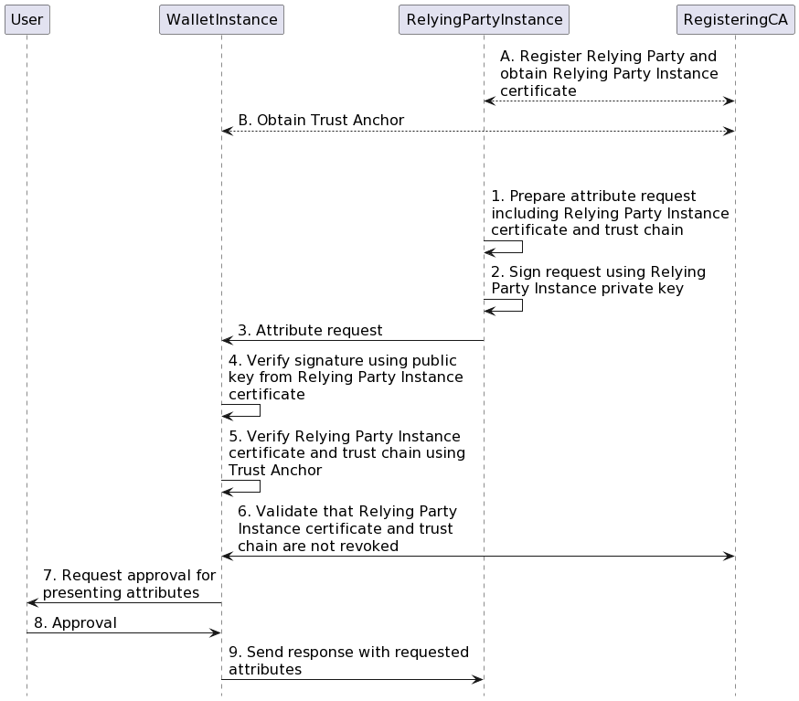
Figure 12 High-level overview of Relying Party authentication process
The figure shows the following:
First, there are two preconditions that need to be fulfilled before the Relying Party authentication process can begin. Note that these actions are not carried out for every presentation, but only once (excluding possible updates):
A) The Relying Party registered itself as described in Section 6.4.2 and obtained a Relying Party Instance access certificate.
B) The Wallet Unit obtained the trust anchor of the Relying Party Instance Access Certificate Authority.
Subsequently, during each presentation of attributes:
- The Relying Party Instance prepares a request for some attributes to the Wallet Unit and includes its Relying Party Instance access certificate in the request, plus all intermediate certificates up to (but excluding) the trust anchor.
- The Relying Party Instance signs some data in the attribute request using its private key.
- The Relying Party Instance sends the request to the Wallet Unit.
- The Wallet Unit checks the authenticity of the request by verifying the signature over the request using the public key in the Relying Party Instance access certificate.
- The Wallet Unit checks the authenticity of the Relying Party by validating the Relying Party Instance access certificate and all intermediate certificates included in the request. For validating the last intermediate certificate, the Wallet Unit uses the trust anchor it obtained from the Trusted List.
- The Wallet Unit validates that none of the certificates in the trust chain have been revoked. This includes the Relying Party Instance access certificate as well as all other certificates in the trust chain, including the trust anchor itself if applicable.
- The Wallet Unit continues by requesting the User for approval.
- The User approves the attributes that will be presented.
- The Wallet Unit sends a response containing only the approved attributes to the Relying Party Instance.
6.6.3.3 Wallet Unit allows User to verify that Relying Party does not request more attributes than it registered
During registration, the Relying Party registered which attributes it intends to request from Wallet Units. If the Registrar issued a registration certificate to the Relying Party,
- the Registrar listed these attributes in this certificate and sent it to the Relying Party,
- the Relying Party distributed it to all of its Relying Party Instances,
- the Relying Party Instance sent this registration certificate to the Wallet Unit in the presentation request.
Prior to or during a transaction, the Wallet Unit offers to the User an option to verify the information registered for the Relying Party. If the User chooses to do so, the Wallet Unit obtains information about which attributes the Relying Party registered. If a registration certificate is available, the Wallet Unit gets this information from the certificate. If no registration certificate is available, the Wallet Unit contacts the Registrar to obtain this information. To do so, the Wallet Unit retrieves a URL of the Registrar's online service, as well as the unique ID of the Relying Party, from the Relying Party access certificate
The Wallet Unit compares the list of registered attributes to the list of attributes that the Relying Party requests. The Wallet Unit notifies the User in case the Relying Party requested attributes that it has not registered at the Registrar, when asking the User for approval, see Section 6.6.3.5. The Wallet Unit also notifies the User in case the Wallet Unit is not able to retrieve the Relying Party registration information.
The format of the registration certificate, as well as the way in which the Wallet Unit can verify that the registration certificate belongs to the authenticated Relying Party, will be specified in a technical specification. For more information, see Topic 44.
6.6.3.4 Wallet Unit evaluates embedded disclosure policy, if present
During attestation issuance, an Attestation Provider optionally created an embedded disclosure policy for the attestation, see Section 6.6.2.7. If such a policy is present for the requested attestation, the Wallet Unit evaluates the policy, together with information in the access certificate, to determine whether the Attestation Provider allows this Relying Party to receive the requested attestation. Note that the Wallet Unit verifies the authenticity of the access certificate before using any data contained in it.
The Wallet Unit presents the outcome of the disclosure policy evaluation to the User in the form of an advice, when requesting User approval. For example, "The issuer of your medical data does not want you to present data from \<attestation name> to \<Relying Party name>. Do you want to continue?" Note that the User can overrule the disclosure policy evaluation outcome.
For more details on the embedded disclosure policy, see Topic 43.
6.6.3.5 Wallet Unit obtains User approval for presenting selected attributes
Note: In this document the term 'User approval' exclusively refers to a User's decision to present an attribute to a Relying Party. Under no circumstances User approval to present data from their Wallet Unit should be construed as lawful grounds for the processing of personal data by the Relying Party or any other entity. A Relying Party requesting or processing personal data from a Wallet Unit must ensure that it has grounds for lawful processing of that data, according to Article 6 of the GDPR.
Before presenting any attribute to a Relying Party, the Wallet Unit requests the User for their approval. This is critical for ensuring that the User remains in control of their attributes.
A Wallet Unit requests User approval in all use cases, both in proximity flow and remote flow, and including:
- Use cases where the Relying Party could be assumed to be trusted, for example, when the Relying Party is part of law enforcement or another government agency.
- Use cases where the requested attributes are critical for the Relying Party to grant access to the User or deliver the requested services.
- Use cases where there is, according to the GDPR or other legislation, no legal need to ask for the User's approval because another legal basis exists for requesting the attributes.
A prerequisite for requesting User approval is that the Wallet Unit is sure that the person using the Wallet Unit is in fact the User. Therefore, the WSCA/WSCD authenticates the User prior to or during requesting User approval, on request of the Wallet Unit. To do so, the Wallet Unit uses the User authentication mechanism set up during Wallet Unit activation, see Section 6.5.3. More detailed requirements regarding User approval can be found in Topic 6.
Another prerequisite for effective User approval is that the Wallet Unit allows the selective disclosure of attributes. Selective disclosure implies mainly two things. First, it enables a Relying Party to specify which of the attributes in an attestation it wishes to receive (and which ones not). A Relying Party may have different purposes for the requested attributes. For example, an online liquor shop may need an age attestation to comply with its legal obligations, and in addition would like to receive address information to be able to send the ordered liquor to the User's home. Therefore, the Relying Party indicates the goal of each (group of) requested attributes.
Secondly, selective disclosure implies that the Wallet Unit enables the User to approve or deny the presentation of each (group of) attributes separately. The User takes a decision based on at least the following information:
- The authenticated identity of the Relying Party,
- The information in the Relying Party's registration certificate or the information received from the Registrar's online service regarding the attributes that the Relying Party has registered during registration ("intended use")- at least in case one or more of the requested attributes is not included in the list of registered attributes,
- The information in the Relying Party's registration certificate or the information received from the Registrar's online service regarding an intermediary used by the Relying Party, if any - see Section 3.11.
- The outcome of the evaluation of the embedded disclosure policy, if any.
After the User gives their approval, the Wallet Unit will present the approved User attributes to the Relying Party Instance.
6.6.3.6 Relying Party Instance verifies the authenticity of the PID or attestation
The Relying Party Instance receives a PID or attestation, including some attributes, from the Wallet Unit. Subsequently, it verifies the signature over the PID or attestation. To do this for PIDs and QEAAs, the Relying Party Instance uses a trust anchor of the Provider obtained from a Trusted List. Note that the PID Provider or QEAA Provider may use an intermediate signing certificate to sign the PID or attestation, and use the trust anchor to sign the signing certificate, instead of signing the PID or attestation directly with the trust anchor.
For PuB-EAAs, the Relying Party Instance verifies a PuB-EAA by first verifying the signature of the PuB-EAA Provider over the PuB-EAA, using the PuB-EAA Provider certificate issued by a QTSP. Subsequently, the Relying Party Instance verifies the signature over this certificate, using the corresponding trust anchor from the QTSP Trusted List. Note that both the PuB-EAA Provider and the QTSP may use an intermediate signing certificate. All other things being equal, the verification of a PuB-EAA will therefore involve one or more extra certificates, compared to the verification of a PID or QEAA.
Finally, for non-qualified EAAs, the applicable Rulebook may describe how the Relying Party Instance obtains the relevant trust anchor.
The above implies that a Relying Party Instance is aware whether the attestation it is requesting from a Wallet Instance is a PID, a QEAA, a PuB-EAA, or a non-qualified EAA. Also, the Relying Party Instance stores trust anchors in such a way that, at the time of verification, it is able to distinguish between trust anchors usable either for PIDs, for QEAAs, for PuB-EAAs, or for non-qualified EAAs.
The technical implementation of the signature verification process depends on which of the standards mentioned in Topic 12 is supported by the Wallet Unit. Each of these standards specifies in detail how to carry out signature verification.
In addition, the Relying Party may want to verify that the Attestation Provider can legally issue the type of attestation in question. As described in Section 6.3.2.3, this is only needed for non-qualified EAA Providers, as the Relying Party trusts a PID Provider, QEAA Provider or PuB-EAA Provider. For EAA Providers, the applicable Rulebook may define methods that the Relying Party can use to verify that the EAA Provider is allowed to issue this type of attestation.
Notes:
-
All PIDs and attestations in the EUDI Wallet ecosystem are digitally signed by the respective PID Provider or Attestation Provider, or by a WSCA/WSCD that is part of the Wallet Unit. If an attestation is digitally signed by a WSCA/WSCD, it is called a device-signed or self-issued attestation. Device-signed or self-issued PIDs or attestations are allowed only if it can be shown that the WSCA/WSCD signs them at the required Level of Assurance (LoA). This implies that the level of security offered by the WSCA/WSCD is at least equivalent to the security level of the secure infrastructure used by the PID Provider or Attestation Provider for signing PIDs or attestations.
-
The signature over the PID or attestation may or may not include the value of the presented attributes. If the attribute values are not included in the signature creation, the Relying Party trusts these attributes because they are presented over an authenticated channel set up between the secure environment (i.e., the WSCA/WSCD or the secure infrastructure used by the PID Provider or Attestation Provider, see previous bullet) and the Relying Party. One possible way to set up such an authenticated channel is by ensuring the authenticity and integrity (but not the non-repudiation) of the attributes by means of a Message Authentication Code (MAC). The MAC is created by the secure environment over the presented attribute values. The MAC key is generated from an ephemeral key of the Relying Party (sent to the secure environment by the Wallet Instance) in combination with an ephemeral key created by the secure environment. The latter ephemeral key is sent to the Relying Party in such a way that the Relying Party can verify the authenticity of this key. Such a solution, or similar ones, can be used provided that:
- the solution is fully compliant with the relevant standards, i.e., [ISO/IEC 18013-5] or [OpenID4VP] and [SD-JWT VC].
- the solution can be certified for security at LoA High according to Chapter 7
6.6.3.7 Relying Party verifies that the PID or attestation is not revoked
To allow revocation checking of a PID or attestation, the PID Provider or Attestation Provider includes revocation information in the PID or attestation, if it is valid for longer than 24 hours. This revocation information includes a URL indicating the location where a Relying Party can obtain a status list or revocation list, and an identifier or index for this specific certificate or attestation within that list.
Notes:
- For attestations with a validity period of less than 24 hours, including revocation information is not necessary.
- A status list is a bit string or byte string in which each bit or group of bits denotes the current revocation status (valid or revoked) of one attestation. To get the status of the attestation it has received from the Wallet Unit, the Relying Party obtains the status list from the URL specified in the attestation and verifies the value encoded at the bit position given by the index value in the attestation.
- A revocation list is a list of PID identifiers or attestation identifiers revoked by the PID Provider or Attestation Provider. To get the status of the PID or attestation it has received from the Wallet Unit, the Relying Party obtains the revocation list from the URL specified in the attestation and verifies whether the identifier included in the attestation is on the list or not.
- In some cases, no reliable information regarding the revocation status of a PID or attestation will be available, for example in case a Relying Party Instance is offline and does not have access to a cached status list or revocation list, or if the requested attestation is non-qualified and the responsible Attestation Provider choose to not have a revocation service for the attestation. In such a case, a Relying Party performs a risk analysis considering all relevant factors for the use case, before taking a decision to accept or refuse the PID or attestation.
For more details and requirements on revocation, see Topic 7.
6.6.3.8 Relying Party Instance verifies device binding
NOTE: Discussions on device binding are ongoing, in particular regarding whether non-device bound attestations should be supported by a Wallet Unit, and if so, what the requirements for this support should be.
Device binding is the property that a PID or an attestation is bound to a specific device (in fact, a WSCD) and cannot be used independent from that device. Device binding protects the attestation against copying or cloning, which enhances its security.
A PID Provider or an Attestation Provider implements device binding by including a cryptographic public key in the PID or attestation and signing it. The corresponding private key is protected by a certified WSCA/WSCD in the Wallet Unit.
Topic 9 explains that a WSCA/WSCD generates a public-private key pair for each attestation upon request of the Wallet Unit, and that the Wallet Unit sends the public key to the PID Provider or Attestation Provider. Furthermore, it discusses how the PID or Attestation Provider can verify that the corresponding private key is really protected by the WSCA/WSCD.
During an interaction, the Relying Party verifies that the PID or attestation it received from a Wallet Unit is indeed bound to the WSCA/WSCD included in the Wallet Unit. The Relying Party does so by requesting the Wallet Unit to sign some data using the private key corresponding to the public key in the PID or attestation. For this reason, device binding is also called 'proof of possession'. In [ISO/IEC 18013-5] it is called 'mdoc authentication'. In [SD-JWT VC] it is called 'key binding'.
The technical implementation of this verification depends on which of the standards mentioned in Topic 12 is supported by the Wallet Unit. Each of these standards specifies in detail how to carry out this verification.
The data signed by the Wallet Unit may include (a representation of) some transactional data which the Relying Party included in the presentation request, see Section 5.6.2. Note that neither [ISO/IEC 18013-5] nor [OpenID4VP] or [SD-JWT VC] specify the syntax and semantics of the transactional data. Nor do these standards specify how a Wallet Unit should process this data,or how it should be presented to the User prior to being signed. All of these aspects will need to be specified in the Attestation Rulebook for the type of attestation that is being requested in the presentation request.
6.6.3.9 Relying Party Instance verifies or trusts User binding
User binding (sometimes also called 'holder binding') is the property that the subject of the PID or attestation, meaning the natural or legal person described in it, is in fact the person that presents the PID or attestation to the Relying Party. User binding prevents an attacker from successfully presenting a PID or an attestation that they are not legally allowed to use.
The mechanism(s) available for User binding depend on the presentation flow type (proximity or remote, supervised or unsupervised, see also Section 4.4), and on the attributes issued to the User by the PID Provider or Attestation Provider:
-
In the first place, the Relying Party can always decide to trust the User authentication mechanisms implemented by the WSCA/WSCD (see Topic 9). This means that the Relying Party trusts that the the WSCA/WSCD has properly authenticated the User before allowing the User to present the attributes. Note that:
- This trust is not based on the outcome of any verification by the Relying Party but on a a-priori trust in (in particular) the certified WSCA/WSCD that is part of the Wallet Unit.
- Using this method implies that Relying Parties also trust device binding, as described in Section 6.6.3.8. The Relying Party Instance in fact first verifies that the PID or attestation is bound to a WSCA/WSCD trusted by the PID Provider or Attestation Provider, and then trusts that the WSCA/WSCD has properly authenticated the User.
- As a matter of fact, this User binding method will always be carried out, since the WSCA/WSCD must authenticate its User when asking for User approval for presenting any attributes, and since device binding is also mandatory.
-
In addition, in some cases, if a Relying Party does not want to only trust the above mechanism, it may be able to use User attributes to carry out an additional User binding process. For example, if the PID or attestation contains a User portrait, the Relying Party may be able to visually or biometrically compare that portrait to the face of the person presenting the attestation or by a photo taken of it by an automated machine or as a "selfie". This will generally be possible in supervised proximity presentations by human inspection, or in an unsupervised proximity flow if equipped with the appropriate equipment. It may also be possible to do this in unsupervised remote presentations by using face recognition technology, possibly even remotely. However, to generate trustworthy outcomes in such situations, special conditions and dedicated security measures are required, such as good lighting, clear instructions for the User for positioning their face and an approved liveness detection mechanism supporting Presentation Attacks Detection (PAD), as well as mechanisms for injection attack detection, in particular deepfake detection.
- Lastly, if the person presenting the PID or attestation is able to present an identity document, the Relying Party may be able to verify User binding by comparing attributes from the PID or attestation, such as first and last name, to those in the identity document. However, this requires that the Relying Party can verify that the identity document is authentic and really belongs to the person presenting it. In practice this will often mean that the identity document is a photo ID, and the presentation must consequently be done in proximity and be supervised, or done remotely and supported by PAD.
6.6.3.10 Relying Party Instance verifies combined presentation of attributes
6.6.3.10.1 Introduction
According to the [European Digital Identity Regulation], a combined presentation of attributes is a request for attributes from two or more attestations in the same action. Scenarios where a User is asked to present different attributes from various physical documents are common in the real world, and are also relevant in the digital domain. Several examples, including university admissions, professional licencing, and rental or loan applications, are discussed in the Discussion Paper for Topic K. These scenarios can be addressed more efficiently through combined presentation, allowing a Relying Party to receive a consolidated set of attributes from different attestations.
In such cases, the Relying Party will need to verify that these attestations belong to the same User. This can be done in different ways, including (but not necessarily limited to):
- Session-Based Binding: A Relying Party may assume that attributes presented in a single presentation response are belonging to the same User. However, this means that the Relying Party trusts that the Wallet Unit is not hacked or fraudulent. In some high-security use cases, such trust may not be warranted.
- Attribute-Based Binding: Multiple attestations may include a shared unique identifier (e.g., a PID number), which can then serve as a binding reference across different attestations. Another possibility is the use of the same identifying data, such as full name and date of birth, in multiple attestations, which can be used to relate attestations to each other and to a User. This is analogous to many present-day processes using paper documents, which may be seen as an advantage. However, this method implies that identifying data of the User must be presented even in use cases where this is not necessary for the purposes of the use case itself. Moreover, this method may not be conclusive, for instance if multiple people share the same name.
- Cryptographic Binding: The WSCA/WSCD in the Wallet Unit may generate a cryptographic proof demonstrating that it manages the private keys associated with all of the involved attestations. Since the WSCA/WSCD complies with stringent security requirements (possibly corresponding to LoA High), such a solution is more secure than session-based binding. It is more privacy-preserving than attribute-based binding, since no attributes more than strictly necessary for the use case have to be presented.
Cryptographic binding of attestations is discussed in the next section. For more information and high-level requirements, see Topic 18 and Topic 9.
6.6.3.10.2 Cryptographic binding of attestations
Cryptographic binding of attestations is an envisioned cryptographic mechanism that enables a WSCA/WSCD to prove that it manages the private keys corresponding to two (or more) public keys. Such a mechanisms can be used during attestation issuance, for instance to prove that the public key included in a PID and the public key to be embedded in a newly requested attestation are both managed by the same WSCD. A proof of cryptographic binding can be used as well during attestation presentation, e.g., to prove that the public keys associated with two (or more) device-bound attestations are managed by the same WSCA/WSCD and that, therefore, these attestations belong to the same User.
Note that:
- This version of the ARF does not specify or reference a specific cryptographic mechanism to implement cryptographic binding of attestations.
- This ARF assumes that each Wallet Unit (and therefore each WSCA/WSCD) contains
attestations for only one User (see also Section
3.2). Therefore, a proof of cryptographic binding
between two attestations proves that these attestations belong to the same
User. However, some additional actions must be done to use such a mechanism in
practice:
- During attestation issuance, an Attestation Provider must request the Wallet Unit to bind the new attestation to an existing PID or attestation. For this, the Attestation Provider must verify that the existing PID or attestation refers to the same User to whom the new attestation refers. How the Attestation Provider does this is out of scope of the ARF. For example, the Attestation Provider could request the User name and birth date from a PID on the Wallet Unit, verify that this information matches a record in its database, issue a attestation corresponding to the information in that record, and then request the Wallet Unit to bind the public key in that attestation to the public key in the PID.
- A Relying Party that has verified a proof of cryptographic binding between two attestations needs to verify that these attestations belong to the User presenting them. This is User binding, as discussed in Section 6.6.3.9. Note that, if User binding is proven for one of the bound attestations, it is proven for all of them.
6.6.3.11 Relying Party Instance trusts issuer to have authenticated the Wallet Unit and the Wallet Provider
NOTE: The draft Technical Specification 3 is not finalised yet. Discussions on the WUA are ongoing. In particular, no final decision has been taken yet regarding the use of a WUA on the Relying Party interface. Nevertheless, it seems likely that this will not be a possibility. Therefore, all references to the use of a WUA on the Relying Party interface have been removed in this version of the ARF, including in this section and the next one.
The Relying Party Instance does not have a way to directly verify the authenticity of the Wallet Unit and the Wallet Provider. Rather, the Relying Party trusts the PID Provider or the Attestation Provider to have done this during issuance of the PID or attestation.
6.6.3.12 Relying Party optionally trusts issuer to regularly verify that Wallet Unit is not revoked
Section 6.6.2.4 explained how a PID Provider or an Attestation Provider can verify that a WUA (and thus the Wallet Unit) is not revoked. That section also noted that the [CIR 2024/2977] requires PID Providers to verify regularly, during the entire lifetime of the PID, whether the Wallet Unit on which that PID is residing is revoked by the Wallet Provider. If that happens, the PID Provider must revoke the PID. Therefore, by verifying the revocation status of the PID, the Relying Party Instance can also trust the revocation status of the Wallet Unit.
Attestation Providers can use the same mechanism to provide the same assurance to Relying Parties, although this is not required by the CIR. It is up to a Relying Party to check, before starting requesting a particular type of attestation from Wallet Units to fulfil a particular use case, if the Attestation Provider of that attestation provides this assurance, and if not, to decide whether the associated risk is acceptable to the Relying Party.
6.6.3.13 Wallet Unit enables the User to report suspicious requests by a Relying Party and to request a Relying Party to erase personal data
A Wallet Unit enables the User to report unlawful or suspicious requests for personal data by a Relying Party to a Data Protection Authority (DPA). To allow this, a Wallet Unit provides a dashboard displaying all attestation presentation transactions performed by the Wallet Unit, and enables the User to easily report a suspicious presentation request to a DPA. By default, this is the DPA that supervises the Relying Party, but if the Wallet Unit does not know which DPA this is (because this information was not available during the transaction), it will present the User with the contact details of at least the DPA of the region in which the Wallet Provider resides. The User can make such a report regardless of whether any attributes were actually presented to the Relying Party. Even if the Wallet Instance prevented the presentation of any attributes, for instance because Relying Party authentication failed, or if the User did not approve the presentation of any attributes, the User can still report the request to a Data Protection Authority.
For more information and requirements, see Topic 50.
The dashboard also enables the User to request a Relying Party to delete personal data in accordance with Regulation (EU) 2016/679 (the GDPR). In the context of EUDI Wallet, this personal data consists of attributes that were presented to the Relying Party by the User, using their Wallet Unit. Relying parties, which act as data processors or controllers, already have procedures, protocols, and interfaces in place to handle data deletion requests in accordance with the GDPR. Wallet Units re-use these already existing interfaces. As there are no standardised protocols and interfaces for this purpose (yet), this implies that a Wallet Unit can either
- open a specific URL with an external browser to ask for the deletion of data in a web form provided by the Relying Party.
- open an external mail client with a suitable template text,
- open an external phone client to enable the User to call the Relying Party.
The registration certificate of the Relying Party (see Section 6.4.2) contains the necessary contact information, including the URL of a web form for privacy-related enquiries, an e-mail address and/or a phone number.
For more information and requirements, see Topic 48.
To be able to substantiate a report, or to list data that must be deleted, the User needs to be informed about which attributes were requested by which Relying Parties. To enable this, a Wallet Unit maintains a log of all transactions that are performed. For presentation transactions, this log includes the identifiers of the attributes that were requested and presented, but not their values. The aforementioned dashboard also enables the User to view the log and start a reporting process to a Data Protection Authority for any transaction in the log, or request the associated Relying Party to delete the attributes it received in that transaction. More details about the logging functionality can be found in Topic 19.
6.6.4 PID or attestation presentation to another Wallet Unit
6.6.4.1 Introduction
Section 6.6.3 discussed the trust relationships necessary when a Wallet Unit receives a request from a Relying Party Instance and presents attributes to that Relying Party Instance. However, the [European Digital Identity Regulation] requires that a Wallet Unit is also able to receive such a request from another Wallet Unit, and present attributes to that requesting Wallet Unit. In this context, the requesting Wallet Unit is called the Verifier Wallet Unit, and the presenting Wallet Unit is called the Holder Wallet Unit. The User of a Holder Wallet Unit is called a Holder, and the User of a Verifier Wallet Unit is called a Verifier.
Wallet-to-Wallet interactions cover use cases where a natural person, the Holder, wishes to present a PID or attestation to another natural person, the Verifier, where both are using their Wallet Units. As an example, the use case could occur in a setting where one private person (the Verifier) wants to rent out their car to another private person (the Holder), provided the Holder has a valid driving licence.
Note that legal entities are not allowed to bypass the processes and rules governing Relying Parties, for example regarding the obligation to register, by using Wallet-to-Wallet interactions. Therefore,
- Wallet-to-Wallet interactions will only take place in proximity, not remotely. This ensures that both Users are aware of the device they are connecting to, because they have to present and scan a QR code or NFC tag. Being in proximity also allows for out-of-band communication and authentication possibilities between Holder and Verifier.
- Wallet Units will be restricted in the number of times they can act as a Verifier per unit of time. Since many Relying Parties will need to have frequent interactions with multiple Wallet Units, this ensures that it will not be feasible for a Relying Party to use a Wallet Unit for all of these interactions.
- A User will need to select a dedicated 'Holder Wallet Unit' mode to start using Wallet-to-Wallet interactions. If this mode is selected, a Holder Wallet Unit will clearly indicate to its User that they are presenting attributes to another natural person, and that they should not proceed if they are in fact interacting with a legal entity.
For more information, please refer to Technical Specification 9
6.6.4.1 General transaction flow
The following transaction flow will be used as the basis for Wallet-to-Wallet interactions:
- The two EUDI Wallet Users meet in physical proximity and agree (out of band of the EUDI Wallet ecosystem), that one (the Holder) should present specific attributes from a PID or attestation to the other (the Verifier).
- Both Users select a dedicated 'Wallet-to-Wallet mode' in their respective Wallet Unit and are asked to specify their role (Holder or Verifier).
- The Holder Wallet Unit gives the Holder an option to suggest to the Verifier which PID or attestation, and which attributes. This suggestion is called a presentation offer.
- A handshake protocol (called device engagement in ISO/IEC 18013-5) is performed and a data connection is established between the two devices as specified ISO/IEC 18013-5. This protocol also sends the presentation offer to the Verifier, if the User specified such an offer.
- The Verifier now must specify to the Verifier Wallet Unit what attributes should be included in the presentation request: - If the Holder specified a presentation offer in step 3, the Verifier Wallet Unit displays the offer to the Verifier. The Verifier selects all or a subset of the offered attributes, but is not allowed to add additional attributes. - If there is no presentation offer in the handshake, the Verifier Wallet Unit assists the Verifier in creating a presentation request from scratch, by allowing the Verifier to select attributes from a pre-defined list populated by the Wallet Provider.
- The Verifier Wallet Unit sends the presentation request to the Holder Wallet Unit.
- The Holder Wallet Unit checks if the presentation request matches the presentation offer created in step 3 (if any), and aborts the transaction in case the request contains attributes that were not present in the offer. The Holder Wallet Unit informs the Holder about the reason for aborting. If no presentation offer was offer was sent in step 4, then this check is omitted.
- The Holder Wallet Unit prompts the Holder for consent to present the requested attributes to the Verifier.
- If the Holder approves the presentation, then a presentation is sent to the Verifier Wallet Unit.
- The Verifier Wallet Unit verifies the received presentation in the same way a Relying Party Instance does, and presents the received attributes to the Verifier.
- The Verifier makes a decision relevant to the use case, out of band of the EUDI Wallet ecosystem, but based (potentially among other factors) on the data presented by the Holder via their Wallet Units.
Notes:
- Step 2 ensures that both parties actively accept that a local data connection towards a natural person Wallet Unit should be established. For the Holder this is very important, because many if not all of the verifications usually done on a presentation request from a Relying Party will not be performed when a Wallet Unit acts as a Holder Wallet Unit; see the note to step 6 below. For the Verifier, this is necessary as well, since the functionality offered by a Verifier Wallet Unit is completely different then when acting a 'normal' Wallet Unit.
- In step 3, if the Holder wishes to let the Verifier specify the requested information, the presentation offer is left empty. However, the use of a presentation offer is recommended, as this increases the chance of success of the use case.
- Step 4 establishes a local data connection. [ISO/IEC 18013-5] requires that an mdoc reader(i.e., a Verifier Wallet Unit) must support QR code and NFC for device engagement, and BLE and NFC for data retrieval. A Holder Wallet Unit then chooses to use either QR code or NFC for device engagement, and either BLE or NFC for data retrieval. The requirements regarding supported technologies are therefore more stringent for a Verifier Wallet than for a Holder Wallet Unit. For the precise requirements, please refer to [ISO/IEC 18013-5]. This may mean that, depending on the device it's installed on and the technologies chosen by the Holder, a Wallet Unit may not be able to act as a Verifier. For example, if a Holder Wallet Unit uses only NFC for device engagement, then a Wallet Unit on a device that does not have NFC will be not be able to act as a Verifier towards that Holder Wallet Unit. Technical Specification 9 will discuss ways to solve this challenge.
- In step 5, if the offered attributes do not fulfil the needs of the Verifier for the use case, the Verifier may decide to stop the transaction and return to step 1 to communicate (out of band) to the Holder which attributes the Holder should offer.
- In step 5, if there is no presentation offer, the Verifier Wallet Unit will present the Verifier with a list of 'frequently used' attributes to include in the presentation request. Conceivably, the Verifier Wallet Unit may limit the number of attributes in the list by asking the Verifier a set of predefined questions about the purpose of the use case. However, there is no guarantee that the Holder Wallet Unit contains these attributes.
- A user-friendly UI is important in steps 3 and 5 (when Users select what attributes to offer cq. request).
- In step 6, a presentation request from a Verifier Wallet Unit does not contain an access certificate (see Section 6.6.3.2) or a registration certificate (see Section 6.6.3.3). This is because Verifiers are Users and are not required to register as a Relying Party. Additionally, because there is no access certificate in the presentation request, the Holder Wallet Unit is not able to evaluate an embedded disclosure policy, if existing, see Section 6.6.3.4. However, Technical Specification 9 will discuss if and how a Holder Wallet Unit might be able to authenticate the Verifier Wallet Unit. If this Technical Specification will specify such a mechanism, the Holder Wallet Unit will use it to make sure it is dealing with a Verifier using a certified Wallet Unit.
- In step 9, the Verifier Wallet Unit verifies the authenticity of the presented PID or attestation as specified in Section 6.6.3.6. This implies that the Verifier Wallet Unit needs to obtain the trust anchors of the relevant PID Provider or Attestation Provider from the respective Trusted List. Additionally, the Verifier Wallet Unit also verifies the revocation status of the presented PID or attestation as specified in Section 6.6.3.8.
- Only steps 2 to 9 are done within the Wallet Units. Steps 1 and 10 allow for additional actions to be taken and information to be exchanged between Holder and Verifier out of band.
For high-level requirements on this topic, please refer to Topic 30.
6.6.5 PID or attestation management
6.6.5.1 Overview
Starting from the issuance of a PID or attestation, the PID or attestation is managed by the User and the Wallet Provider. Management is performed until the PID, or attestation, is deleted or the Wallet Instance is uninstalled by the User. Management includes at least the following processes:
- Re-issuance of the PID or attestation when necessary.
- Revocation of the PID or attestation when necessary.
These processes are discussed in the next subsections.
6.6.5.2 PID or attestation re-issuance
6.6.5.2.1 Introduction
Re-issuance means the replacement of a PID or attestation that already exists in a Wallet Unit by a PID or attestation having the same attestation type. Re-issuance is always performed by the same PID Provider or Attestation Provider that issued the existing PID or attestation, and it is initiated by the Wallet Unit. The value of the attributes in the new attestation will typically be the same as in the original attestation. However, this is not required; the PID Provider or Attestation Provider may change one or more attribute values. Re-issuance is only applied within the administrative validity period of a document. As an example, a mobile driving licence (mDL) will typically be issued in the form of attestations which have a technical validity period shorter than the administrative validity period of the licence itself. Re-issuance is used for obtaining fresh attestations as needed during the administrative validity period, to ensure that the User can always present a valid mDL. When the administrative validity period ends, there will be an administrative process for obtaining a new driving licence, which is however out of scope of this document.
Note that, in general, if the original PID or attestation was issued in a batch, then the PID Provider or Attestation Provider will re-issue that PID or attestation in a batch as well.
There may be different reasons for re-issuing a PID or attestation, for example:
- The current PID(s) or attestation(s) are near the end of their technical validity period, or the Wallet Unit is running out of once-only attestations. This is done to mitigate the risk of Relying Party linkability. For more information, see Section 7.4.3.5.
- The value of one or more of the attributes in the PID or attestation has changed.
- The security architecture of the Wallet Solution may use PIDs and/or attestations that are issued just-in-time, at the moment that PID or attestation is being requested by a Relying Party. This is sometimes called synchronous issuing.
These reasons are discussed in the next subsections. Re-issuance is discussed in more detail in the Discussion Paper for Topic B.
6.6.5.2.2 Re-issuance to limit Relying Party linkability
As specified in [ISO/IEC 18013-5] or [SD-JWT VC], each PID or attestation contains metadata indicating its technical validity period. Determining the length of the technical validity period is the responsibility of the PID Provider or the Attestation Provider. The technical validity period chosen by the PID Provider or Attestation Provider will depend on several factors, primarily the security architecture of the Wallet Solution and the strategy chosen to mitigate Relying Party linkability, see Section 7.4.3.5.
Given the above factors, it can generally be assumed that the technical validity period of a PID or attestations will be much shorter than their lifetime, meaning the period of time that a User wants to keep that PID or attestation in their Wallet Unit. That implies that new PIDs and attestations will need to be re-issued periodically, to replace the ones that are reaching end of their technical validity.
A similar reason for re-issuing PIDs and attestations occurs when the PID Provider or Attestation Provider uses once-only attestations (see Section 7.4.3.5), which can be presented only once to a Relying Party. In that case, the Wallet Unit, or rather the User, will regularly need new PIDs or attestations to avoid running out.
Re-issuance of PIDs or attestations for these reasons is a purely technical matter. To the maximum extent possible, the User does not notice that a PID or attestation has been re-issued, nor do they have to take any action to ensure that re-issuance happens in time. These conditions are very different from a first-time issuance of a PID or attestation, where the User must take the initiative to request the PID or attestation, and is potentially involved in the process in other ways as well.
This implies, among other, that no User authentication can take place during re-issuance of an existing attestation. Nevertheless, a Wallet Unit may offer the User the option to receive a notification of re-issuance.
In the absence of User authentication, and to prevent that a re-issued PID or attestation ends up at the wrong User, the PID Provider or Attestation Provider ensures that the re-issued PID or attestation is bound to the same WSCA/WSCD as the PID or attestation it replaces.
Finally, since the User is not involved, it is the Wallet Unit that triggers the re-issuance of PIDs and attestation when necessary.
6.6.5.2.3 Re-issuance because of a change of attribute values
During the lifetime of a PID or attestation, the value of some of the attributes may change. For example, at the date of birth of the User, an age attestation attribute (i.e., an attribute indicating whether the User has reached a certain age) may have to be changed from value False to value True. In another example, the User of a mobile driving licence may have passed the examination for a different vehicle category. In this case, the PID Provider or Attestation Provider re-issues the PID or attestation with the correct attribute values, and revokes the existing attestation.
Re-issuance of a PID or attestation for this reason will have an impact on the User, because they will notice that their attribute values have been changed. Therefore, in this case Users will be informed when re-issuance happens. Additionally, an Attestation Provider may state in their terms of conditions that re-issuance of an attestation may be used.
6.6.5.2.4 Re-issuance when using synchronous issuing
A third reason for re-issuing a PID or attestation is where the PID Provider or Attestation Provider uses synchronous issuing in their security architecture. In such an architecture, the Wallet Unit requests the re-issuance of a new PID or attestation after it has received a request for that PID or attestation from a Relying Party. Such a PID or attestation is very short-lived and is used only once.
The conditions on User awareness and authentication discussed in Section 6.6.5.2.2 are also valid for a synchronous re-issuance process.
6.6.5.3 PID or attestation revocation
PID or attestation management includes ensuring that PIDs and attestations can be revoked if necessary. Revocation is discussed in Topic 7. The User can request the PID Provider or Attestation Provider to revoke the PID or attestation at least in case of loss or theft. The PID Provider or Attestation can also decide itself to revoke a PID or attestation, for example in case the Wallet Unit on which the PID or attestation is residing is revoked; see Section 6.5.3.4.
6.6.6 PID or attestation deletion
In case the User no longer wants to retain a specific PID or attestation in their Wallet Unit, the User can delete it. If the PID Provider or Attestation Provider issued a batch of multiple PIDs or attestations that have the same content and are valid, the Wallet Unit deletes them all. Deleting a PID or an attestation also means that the WSCA/WSCD destroys the cryptographic key material associated with that PID or attestation. Before deleting the PID or attestation and the cryptographic keys, the WSCA/WSCD included in the Wallet Unit will authenticate the User.
If it supports the Digital Credentials API, see Section 4.4.3, the Wallet Unit also discloses the fact that it no longer contains the PID or attestation to the Digital Credentials API framework.
For high-level requirements on this topic, see Topic 51.
7 Certification and Risk Management
7.1 Introduction
This chapter briefly describes the certification of Wallet Solutions and the eID schemes under which they are provided, covering the overall certification approach, design principles, and key requirements outlined in the European Digital Identity Regulation and Commission Implementing Regulation CIR 2024/2981 laying down rules for on the certification of Wallet Solutions. Furthermore, references are made to the Annex I of CIR 2024/2981, the Risk Register, supporting the risk-based approach of the Wallet Solutions. For more detailed requirements, please refer to the CIR 2024/2981 itself.
The European Digital Identity Regulation requires certification of Wallet Solutions to ensure conformity of the Wallet Solutions with functional, security, and privacy related requirements, to achieve a high level of interoperability, security and trustworthiness. Certification applies to the Wallet Solutions and the eID schemes under which they are provided; for ease of reading this chapter only refers to Wallet Solutions. Furthermore, the object of certification includes software components, hardware components (in cases where they are provided directly or indirectly by the Wallet Provider) and the processes that support the provision and operation of a Wallet Solution, such as Wallet Unit activation, see Section 6.5.3.
The aim is to harmonise the implementation of the requirements laid down by the [European Digital Identity Regulation] and avoid divergent approaches to the maximum extent possible. For this reason, the Commission requested ENISA to prepare a candidate European certification scheme under the Cybersecurity Act, the CSA. As defining and adopting a dedicated, harmonised certification scheme for Wallet Solutions depends on agreements between Member States on detailed security requirements, on the availability of underlying certification schemes, and on established good practices in the Member States themselves, a transitory approach is foreseen by means of national certification schemes.
In other words, the certification approach for Wallet Solutions follows two phases. In the short-term, Member States provide national (transitory) certification schemes. In the medium term, a harmonised CSA scheme will be established. When the CSA-based scheme becomes available, it replaces the national schemes as for cybersecurity requirements. The schemes may continue to exist for functional requirements.
7.2. Certification of Wallet Solutions against national certification schemes
Until a dedicated Wallet Solution cybersecurity certification scheme under the CSA is available, the [European Digital Identity Regulation] requires Member States to establish national certification schemes. This will be done in time to make available the Wallet Solutions before the end of 2026. The Commission has adopted the CIR 2024/2981 to provide the main requirements on Member States for creation of national certification schemes. The CIR 2024/2981 and resulting national certification schemes are defined around a number of guiding principles:
First, the goal is to harmonise requirements to the extent possible. Member States are also encouraged to work together in the design and implementation of national schemes. Additionally, national schemes will leverage the use of relevant and existing certification schemes and standards for Wallet Solution certification and evaluation. Where available, relevant European CSA schemes must be used. Currently, only the Common Criteria based European candidate cybersecurity certification EUCC scheme is available for the cybersecurity certification of ICT products, parts, or components for products. Upcoming CSA-based schemes include EUCS & EU5G. Additionally, other existing or upcoming schemes include schemes based on FITCEM (EN 17640), national schemes such as on remote identity verification, or other private schemes (e.g. for mobile devices and apps). For harmonisation of functional requirements, the Commission Implementing Regulations (CIRs) adopted under the European Digital Identity Regulation article 5(a) are referenced. For harmonisation of certification requirements, the ISO/IEC 17065 framework under Regulation [765/2008] is used, complemented by ISO/IEC 17067 on the definition of schemes.
Next, the CIR 2024/2981 refers to the composite nature of the Wallet Solutions as well as the potential different architectures in Member States, considering that the European Digital Identity Regulation is technology (and architecture) neutral. This means that a final ('top-level') certification of the Wallet Solution will yield a composite certificate, built on certification of separate components, such as EUCC certification. Wallet Solutions are always to be certified against assurance level High, as set out in the European Digital Identity Regulation as well as CIR (EU) 2015/1502. That assurance level has to be reached by the overall Wallet Solution. Under this Regulation, some components of the Wallet Solution may be certified at a lower assurance level, provided this is duly justified and without prejudice to the assurance level High reached by the overall Wallet Solution. For the use of assurance information from other certification schemes or sources, a dependency analysis will be performed.
Finally, in order to ensure a harmonised approach to cybersecurity and the assessment of the most critical risks that might affect the provision and operation of Wallet Units, a register of risks and threats is defined, see 7.4 Risk-based approach and risk register. The Risk Register contains high level risks and threats in relation to Wallet Solutions and the ecosystem, as well as detailed threat scenarios that will be taken into consideration when designing Wallet Solutions, independent of their specific architecture.
As a first step towards certification of Wallet Solutions under national schemes, Member States will assign a scheme owner, and design and roll out the scheme. As part of this process, Certification Bodies (CBs) will be accredited to carry out conformity assessments of Wallet Solutions against the requirements of the CIR 2024/2981 and the national scheme. Wallet Providers then request one or more designated CABs to assess and certify the conformity of their Wallet Solution. The CAB evaluates and certifies the conformity of the Wallet Solution if they meet the requirements.
The European Commission and ENISA support Member States in designing and implementing national certification schemes in the Cooperation Group.
7.3 Certification of Wallet Solutions against a dedicated CSA-based scheme
In parallel to the work described above, ENISA is requested to draft a dedicated European cybersecurity certification scheme for the Wallet Solutions under the CSA. Once available, this CSA-based scheme will replace the national transitory schemes mentioned above for the cybersecurity requirement it covers. This scheme will be based on available national schemes, harmonised requirements, and identify any additional requirements relevant for cybersecurity. The scheme will further detail the cybersecurity requirements, identify and set normative standards and define the target level of assurance or security for the relevant Wallet Solution components.
The work to develop the CSA-based scheme follows the milestones set out by the CSA and is supported by the Ad Hoc Working Group or 'AHWG'. This group is composed of selected experts from private organisations and industry, with extensive knowledge and experience in the areas of cybersecurity certification, digital wallets, electronic identification and trust services. The first step is to have a candidate scheme ready for public consultation and submitted for feedback of the European Cybersecurity Certification Group or ECCG. The ECCG's opinion serves as advisory input to ensure the candidate scheme aligns to EU cybersecurity objectives, standards and regulatory requirements. Although the ECCG's opinion is not binding, it will hold significant influence, as it reflects the collective expertise of national cybersecurity authorities, aiming to harmonise cybersecurity certification practices across Member States. Based on this input, the candidate scheme might be updated further. After finalisation of the ECCG opinion, the scheme will be transformed into a new Implementing Regulation and adopted by comitology procedure.
Finally, ENISA is also asked to facilitate the transition from national certification schemes to the dedicated cybersecurity certification scheme under the CSA.
7.4 Risk-based approach and risk register
7.4.1 Introduction
This section details the approach to develop harmonised guidelines for the development of the transitory national certification schemes. In addition to the requirements set out in the European Digital Identity Regulation article 5c, cybersecurity risks and threats associated with the Wallet Solutions will be identified. Here, a risk-based approach is envisioned as the basis for certification by Member States, ensuring that the Wallet Solutions uphold confidentiality, availability and strong safeguards for User privacy and data protection. This is inspired by known processes, such as for the General Data Protection Regulation (GDPR) and related Data Protection Impact Assessments (DPIA).
The risk-based approach sets out a common Risk Register that contains a comprehensive but non-exhaustive list of risks and threats related to the Wallet Solution. These risks and threats are architecture-agnostic and provide a benchmark overview of the most critical risks and threats to Wallet Solutions. By adopting this common set of risks and threats, national transitory certification schemes will achieve a baseline level of harmonisation.
The risk register will be applied by scheme owners, Wallet Providers, and Certification Bodies (CBs). When establishing their certification schemes, scheme owners will perform a risk assessment to refine and complement the risks and threats listed in the register with those specific to their architecture, and consider how the applicable risks and threats can be appropriately treated. Wallet Providers will complement the scheme's risk assessment to identify any risks and threats specific to their implementation and propose appropriate mitigation measures for evaluation by the certification body.
7.4.2 High-level risks and threats
The following is an excerpt from [Risk Register]. To keep in line with the continuously evolving threat landscape, the risk register will be maintained and regularly updated in collaboration with the Cooperation Group.
High-level risks and threats
R1 Creation or use of an existing electronic identity R2 Creation or use of a fake electronic identity R3 Creation or use of fake attributes R4 Identify theft R5 Data theft R6 Data disclosure R7 Data manipulation R8 Data loss R9 Unauthorised transaction R10 Transaction manipulation R11 Repudiation R12 Transaction data disclosure R13 Service disruption R14 Surveillance
System-related risks
SR1 Wholesale surveillance SR2 Reputational damage SR3 Legal non-compliance
Technical threats
TT1 Physical attacks
1.1 Theft 1.2 Information leakage 1.3 Tampering
TT2 Errors and misconfigurations
2.1 Errors made when managing an IT system 2.2 Application-level errors or usage errors 2.3 Development-time errors and system misconfigurations
TT3 Use of unreliable sources
3.1 Erroneous use or configuration of wallet components
TT4 Failure and outages
4.1 Failure or dysfunction of equipment, devices or systems 4.2 Loss of resources 4.3 Loss of support services
TT5 Malicious actions
5.1 Interception of information 5.2 Phishing and spoofing 5.3 Replay of messages 5.4 Brute-force attack 5.5 Software vulnerabilities 5.6 Supply chain attacks 5.7 Malware 5.8 Random number prediction
7.4.3 Risks and mitigation measures discussed in Chapter 6 of this ARF
7.4.3.1 Introduction
This section briefly discusses some of the risks that were considered when the trust model in Chapter 6 was created, together with the mitigations for these risks and the residual risks that remain after these mitigations. This section is not intended to be a comprehensive risk register for the EUDI Wallet ecosystem as a whole; for that register, see [Risk Register] and Section 7.4.2 above. This section is limited to the scope of the ARF, namely, the Wallet Unit and its interactions with other entities in the ecosystem, as depicted in Figure 11 in Chapter 6.
7.4.3.2 Risks and mitigation measures related to confidentiality, integrity, and authenticity
Within the EUDI Wallet ecosystem, many interactions take place between entities in which one entity requests another entity to perform a task. For example, a User may ask a PID Provider or an Attestation Provider to provide a PID or an attestation to a Wallet Unit, or a Relying Party may ask a User to present attributes from an attestation in their Wallet Unit. For any of these interactions, the following risks apply:
- An attacker could impersonate one of the interacting entities. Therefore, the receiver of a message must be able to verify the identity of the sender, and vice versa. In other words, mutual authentication is needed. This authentication can be performed because valid entities in the EUDI Wallet ecosystem are put on a Trusted List by Member States. By verifying the signature over a message and verifying the associated public key certificates with a trust anchor included in a Trusted List, the receiver of a message can be sure about the identity of the message's sender.
- Messages between entities could be intercepted, meaning that they could be read by an attacker. To mitigate this risk, messages must be encrypted to ensure confidentiality.
- Intercepted messages could be changed by an attacker. To mitigate this risk, messages must be authenticated, so that the receiver can verify that originate from the authenticated sender and were not changed.
7.4.3.3 Risks and mitigation measures related to tampering of cryptographic keys and sensitive data
The mechanisms for authentication and confidentiality described in the previous section rely on the security of cryptographic keys, especially private and secret keys. If an attacker can obtain, use, or tamper with these keys, these security mechanisms would break down. Therefore, all cryptographic keys on Wallet Units are managed by dedicated secure applications (WSCAs), running on secure hardware (WSCDs), as described in Section 4.3. The security of WSCDs and WSCAs is ensured by means of an appropriate certification process.
Similar mitigation measures apply for all other entities in the EUDI Wallet ecosystem that use cryptographic keys, including Wallet Providers, PID Providers and Attestation Providers, Trusted List Providers, Providers of registration certificates, and Access Certificate Authorities. Such parties will typically use a certified Hardware Security Module (HSM) for managing private and secret keys. For Relying Parties and Relying Party Instances, such measures are formally not required.
WSCDs and WSCAs in a Wallet Unit may also be used to store other sensitive data except cryptographic keys. In particular, they could be used to store User attributes, in such a way that attackers, including malicious applications residing on the same User device as the Wallet Instance, cannot retrieve these attributes. This could be beneficial for User privacy.
7.4.3.4 Risks and mitigation measures related to authorisation
In certain cases, there is a risk that a legitimate entity within the EUDI Wallet ecosystem may attempt to perform actions beyond its authorised scope. This risk primarily affects two types of entities.
First, a non-qualified EAA Provider may attempt to issue attestations for which it lacks the necessary authorisation. For example, an Attestation Provider that has not been officially designated by a Member State or another relevant authority to issue diplomas may still attempt to generate an attestation of the diploma type. Within the EUDI Wallet ecosystem, this risk is limited to non-qualified EAA Providers, as PID Providers, QEAA Providers, and PuB-EAA Providers are assumed to be inherently trustworthy in this context. For more information, see Section 6.3.2.3.
This risk is mitigated by querying the Relying Party registry via an API. This registry, maintained by the Member State, contains comprehensive information about each Relying Party, allowing the system to verify the legitimacy of the issuer and ensure compliance with regulatory requirements.
In the context of the [European Digital Identity Regulation] Regulation, the term Relying Party encompasses both Attestation Providers and entities that provide services relying on attestations, ensuring a broad and consistent approach to trust and verification within the EUDI Wallet ecosystem.
Second, a Relying Party in the EUDI Wallet ecosystem may attempt to request attributes from a Wallet Unit without being registered or authorised to do so. This risk is mitigated mainly by three measures:
- Selective Disclosure and User Control - The attestation formats and protocols specified in [ISO/IEC 18013-5] and [SD-JWT VC] (in combination with [OpenID4VP]) enable selective disclosure of attributes. This allows a Relying Party to specify which attributes within an attestation it wishes to receive while excluding others, a feature known as collection limitation. Additionally, selective disclosure ensures that the User retains control over their data, as they can approve or deny the presentation of requested attributes. More details on selective disclosure and User approval can be found in Section 6.6.3.5.
- Mandatory Relying Party Registration of Intended Requested Attributes - The [European Digital Identity Regulation] mandates that each Relying Party register the attributes it intends to request from Users. According to CIR 2024/2982, these registered attributes must be included in a Relying Party registration certificate, which the Wallet Unit uses to verify the legitimacy of the request and inform the User accordingly. This transparency ensures that Users can make an informed decision about whether to approve or deny the presentation of the requested attributes. More details on this requirement can be found in Section 6.6.3.3.
- Attestation Provider Disclosure Policy Enforcement - The [European Digital Identity Regulation] also mandates that Attestation Providers can embed a disclosure policy within their attestations. This policy may include rules governing whether the Attestation Provider approves the presentation of this attestation to an authenticated Relying Party. The Wallet Unit evaluates this policy —if present— alongside authenticated data from the Relying Party, and informs the User of the outcome. This mechanism further supports the User in making a well-informed decision on whether to approve or deny attribute presentation. More information on disclosure policy enforcement can be found in Sections 6.6.2.7 and 6.6.3.4.
7.4.3.5 Risks and mitigation measures related to User privacy
7.4.3.5.1 Linkability
User privacy is a key consideration in the design and implementation of the EUDI Wallet ecosystem. An important aspect of privacy is unlinkability. Unlinkability implies that, if a User presents attributes from an attestation multiple times, the receiving Relying Parties cannot link these separate presentations to conclude that they concern the same User.
Within the EUDI Wallet ecosystem, attributes are presented in electronic attestations containing unique, fixed elements such as hash values, salts, public keys, and signatures. Malicious Relying Parties could exploit these values to track Users by storing and comparing them across multiple transactions, identifying recurring patterns. This privacy threat, known as Relying Party linkability, can occur within a single Relying Party or among colluding entities. It can also occur when a third party attacks the systems of a Relying Party or of multiple Relying Parties resulting in a data breach. For that reason, Relying Parties will discard the unique fixed elements in received attestations as soon as they no longer need these elements.
A similar privacy threat arises when colluding Relying Parties share the unique values they obtained from an attestation with a malicious PID Provider or Attestation Provider. This allow the PID Provider or Attestation Provider to track User activity across multiple services. In this case, it's called Attestation Provider linkability.
This topic is discussed in more detail in the Discussion Paper for Topic A.
7.4.3.5.2 Mitigating Relying Party linkability
Regarding the mitigation of Relying Party linkability: A trustworthy PID Provider or Attestation Provider can mitigate Relying Party linkability fully by issuing multiple PIDs or attestations to the same User. Wallet Units can use these attestations as disposable (single-use) attestations, which ensures attestations can never be linked by Relying Parties. Topic 10/23 in Annex 2 calls this 'once-only attestations', and requires Wallet Solutions to support this method. It also specifies how a PID Provider or Attestation Provider can indicate that they want a Wallet Unit to treat their PIDs or attestations in this way.
However, the 'once-only' approach increases issuance complexity and management overhead. Therefore, Topic 10/23 also mandates support for another solution, where PIDs and attestations are valid for a limited time only. This limits the amount of PIDs and attestations to be issued, but only partially mitigates Relying Party linkability. Topic 10/23 calls this 'limited-time attestations'.
Furthermore, Topic 10/23 describes two other approaches, which are optionally supported by Wallet Solutions, namely:
- the Attestation Provider issues attestations in batches to the Wallet Unit. The Wallet Unit then uses the attestations from a batch in a random order, until it has presented all attestations in the batch once. Then it 'resets' the batch and starts using them again in a random order. Topic 10/23 calls this 'rotating-batch attestations'.
- the Wallet Unit will present different attestations to different Relying Parties. However, in case a Relying Party requests attributes from this attestation multiple times, the Wallet Unit will present the same attestation to this Relying Party each time. Topic 10/23 calls this 'Per-Relying Party attestations'.
Additionally, organisational and enforcement measures can help deter Relying Parties from colluding and tracking Users. In particular, Relying Parties found in violation will have their access certificates revoked, preventing them from further interactions with Wallet Units.
7.4.3.5.3 Zero-Knowledge Proofs
NOTE: Discussions on Zero-Knowledge Proofs are ongoing. No specific ZKP has *been selected to be supported by components in the EUDI Wallet ecosystem.
Attestation Provider linkability cannot be fully eliminated when using attestation formats based on salted hashes. The only viable mitigation is to adopt Zero-Knowledge Proofs (ZKPs) as a verification mechanism instead of relying on salted-attribute hashes. However, the integration of ZKPs in the EUDI Wallet ecosystem is still under discussion and development due to the complexity of implementing ZKP solutions in secure hardware and the lack of support in currently available secure hardware (WSCDs). As with Relying Party linkability, organisational and enforcement measures can help deter Attestation Providers from colluding and tracking Users. Additionally, many Attestation Providers are subject to regular audits, making it easier to detect collusion and tracking compared to Relying Parties.
Zero-Knowledge Proof (ZKP) mechanisms for verifying personal information are highly promising and essential for ensuring privacy in various use cases. They enable Users to prove statements such as "I am over 18" without disclosing any personal data, offering a robust solution for privacy-preserving authentication and verification.
One key area of development is age verification, where the European Commission is actively exploring and testing ZKP-based solutions. The outcomes of this initiative could pave the way for the adoption of ZKPs within the EUDI Wallet ecosystem, further strengthening privacy protections in future implementations.
The Discussion Paper for Topic G (Zero-Knowledge Proofs) presents the (desired) privacy properties of Zero-Knowledge Proof schemes. It introduces the main families of Zero-Knowledge Proof schemes and gives an overview of representative solutions. Finally, it discusses topics related to the integration of Zero-Knowledge Proof schemes into the EUDI Wallet ecosystem.
High-level requirements for Zero-Knowledge Proofs to be used in the EUDI Wallet ecosystem are included in Topic 53 of Annex 2.
8 Document development
8.1 Publication
This document is made publicly available at https://github.com/eu-digital-identity-wallet/eudi-doc-architecture-and-reference-framework (GitHub repository) where it will be regularly updated.
8.2 Contributing
We value your feedback and encourage you to share any thoughts, suggestions, or concerns you may have regarding this document.
8.2.1 Providing Feedback
To provide feedback on this document, please visit our GitHub repository. You can do so by navigating to the "Issues" tab and submitting a new issue or commenting on existing ones. Whether you've spotted a typo, have a suggestion for clarifying a section, or want to propose a new topic for inclusion, we welcome your feedback.
8.2.1.1 Guidelines for adding issues to the Github repository
When adding issues to the Github repository, please follow these general guidelines:
- Use clear and descriptive titles for your issues to provide a concise summary of the problem or task. This helps others quickly understand the issue at a glance.
- Provide a detailed description of the issue, including any relevant context, background information. The description should be comprehensive enough for others to understand the issue and take appropriate action.
- Use one or more of the following labels to categorise issues. Labels help organise and prioritise issues, making it easier to manage the repository.
| Label | Description |
|---|---|
| Content Clarifications | Raise issues seeking clarification on specific content within the document. This could include explanations of concepts, definitions of terms, or examples to illustrate certain points. |
| Suggestions for Improvements | Propose suggestions to enhance the clarity, completeness, or accuracy of the document. This could involve restructuring sections, adding examples, or providing additional information. |
| Errors and Corrections | Identify errors such as typos, grammatical mistakes, or factual inaccuracies within the document and suggest corrections. |
| Compatibility and Integration | Issues related to how the document integrates with other systems or technologies, ensuring compatibility with different platforms or frameworks. |
| Enhancement Requests | Request new features, sections, or content to be added to the document to improve its usefulness or relevance. |
| Formatting and Styling | Feedback regarding the visual appearance, organisation, and consistency of formatting within the document. |
| Documentation Standards | Discussions around adhering to documentation standards, conventions, or guidelines. |
| Licence and Legal Concerns | Questions or concerns related to the licensing of the document, usage rights, attribution requirements, or legal implications for contributors and Users. |
| Technical Clarification | Raise issues seeking clarification on specific technical content within the document. |
- Attach relevant files, screenshots, or links to additional resources that provide context or assist in resolving the issue. This can include references to related documentation or discussions.
- Follow issue etiquette by conducting a search to see if the issue has already been reported before creating a new one. This helps avoid duplicate issues.
8.2.1.2 Guidelines for discussing existing issues in the GitHub repository
When discussing existing issues in the Github repository, please follow these general guidelines:
- Communicate with respect and courtesy towards other contributors, maintain a professional tone, and avoid using language that could be interpreted as confrontational or inflammatory.
- Provide context and background information to help others understand your perspective. Explain the reasoning behind your comments.
- Communicate your intentions and motivations behind your comments or suggestions to avoid misunderstandings.
- Keep discussions focused on the technical aspects of the issue at hand.
- Provide constructive feedback and suggestions in a helpful and supportive manner. Instead of simply pointing out problems, offer solutions or alternative approaches to address the issue positively.
- Approach discussions with a mindset of collaboration and problem-solving.
- Be open to different perspectives, as contributors may have different viewpoints, experiences, and expertise levels.
- Contribute to a positive and welcoming community atmosphere.
8.2.2 Managing Issues and Pull Requests
Our team is committed to managing issues and pull requests related to this document in a transparent and efficient manner to ensure that all feedback is addressed promptly and effectively. Here's how we manage issues and pull requests to set the right expectations:
- Issue Management: When an issue is submitted, our team will review and prioritise it based on its relevance and impact. We'll keep you informed of the status of your issue and provide updates as it progresses. Once resolved, we'll close the issue and incorporate any necessary changes into the document.
- Pull Request Management: If you submit a pull request with proposed changes or improvements to the document, our team will review it carefully and provide feedback and suggestions for refinement. We'll work collaboratively with you to ensure that your contribution aligns with our document's objectives and maintains consistency and quality. Once approved, we'll merge your changes into the document and acknowledge your contribution.
Your feedback and contributions are essential in helping us maintain the quality and relevance of this document. We value your participation and strive to create a collaborative environment where everyone's contributions are valued and recognised.
8.3 Document Versioning
To avoid interoperability issues and changes to the ARF going unnoticed, a version control system and the following semantic versioning scheme (https://semver.org) will be used for the ARF.
The ARF document will be published under a standardised release versioning format, MAJOR.MINOR.PATCH, where:
MAJOR version is incremented (i.e., new version), when the ARF document has undergone significant changes, for example introducing some breaking changes in the architecture,
MINOR version is incremented when new information has been added to the *document or information has been removed from the document, and
PATCH version is incremented when minor changes have been made (e.g., fixing *typos).
9 References
Note: All standards and technical specifications (as opposed to Regulations and Implementing Regulations) in this list are undated. A reference is added to the entry for the respective document on the Standards and Technical Specifications Roadmap, which contains the latest information regarding the targeted version.
| Item Reference | Standard name/details |
|---|---|
| [2015/1505] | COMMISSION IMPLEMENTING DECISION (EU) 2015/1505 of 8 September 2015 laying down technical specifications and formats relating to trusted lists pursuant to Article 22(5) of Regulation (EU) No 910/2014 of the European Parliament and of the Council on electronic identification and trust services for electronic transactions in the internal market. |
| [European Digital Identity Regulation] | Regulation (EU) 2024/1183 of the European Parliament and of the Council of 11 April 2024 amending Regulation (EU) No 910/2014 as regards establishing the European Digital Identity Framework |
| [Risk Register] | Regulation (EU) 2024/2981, Annex I of 28 November 2024 laying down rules for the application of Regulation (EU) No 910/2014 of the European Parliament and the Council as regards the certification of European Digital Identity Wallets |
| [CIR 2024/2977] | Commission Implementing Regulation 2024/2977 of 28 November 2024 laying down rules for the application of Regulation (EU) No 910/2014 of the European Parliament and of the Council as regards person identification data and electronic attestations of attributes issued to European Digital Identity Wallets |
| [CIR 2024/2979] | Commission Implementing Regulation 2024/2979 of 28 November 2024 laying down rules for the application of Regulation (EU) No 910/2014 of the European Parliament and of the Council as regards the integrity and core functionalities of European Digital Identity Wallets |
| [CIR 2024/2980] | Commission Implementing Regulation 2024/2980 of 28 November 2024 laying down rules for the application of Regulation (EU) No 910/2014 of the European Parliament and of the Council as regards notifications to the Commission concerning the European Digital Identity Wallet ecosystem |
| [CIR 2024/2981] | Commission Implementing Regulation (EU) 2024/2981 of 28 November 2024 laying down rules for the application of Regulation (EU) No 910/2014 of the European Parliament and the Council as regards the certification of European Digital Identity Wallets |
| [CIR 2024/2982] | Commission Implementing Regulation 2024/2982 of 28 November 2024 laying down rules for the application of Regulation (EU) No 910/2014 of the European Parliament and of the Council as regards protocols and interfaces to be supported by the European Digital Identity Framework |
| [CIR 2025/846] | Commission Implementing Regulation 2025/846 of 6 May 2025 laying down rules for the application of Regulation (EU) No 910/2014 of the European Parliament and of the Council as regards cross-border identity matching of natural persons |
| [CIR 2025/847] | Commission Implementing Regulation 2025/847 of 6 May 2025 laying down rules for the application of Regulation (EU) No 910/2014 of the European Parliament and of the Council as regards reactions to security breaches of European Digital Identity Wallets |
| [CIR 2025/848] | Commission Implementing Regulation 2025/848 of 6 May 2025 laying down rules for the application of Regulation (EU) No 910/2014 of the European Parliament and of the Council as regards the registration of wallet-relying parties |
| [CIR 2025/849] | Commission Implementing Regulation 2025/849 of 6 May 2025 laying down rules for the application of Regulation (EU) No 910/2014 of the European Parliament and of the Council as regards the submission of information to the Commission and to the Cooperation Group for the list of certified European Digital Identity Wallets |
| [ISO/IEC 18013-5] | ISO/IEC 18013-5, Personal identification --- ISO-compliant driving licence - Part 5: Mobile driving licence (mDL) application |
| [ISO/IEC 18013-7] | ISO/IEC 18013-7, Personal identification --- ISO-compliant driving licence - Part 7: Mobile driving licence (mDL) add-on functions |
| [ISO/IEC 23220-2] | ISO/IEC 23220-2, --- Cards and security devices for personal identification — Building blocks for identity management via mobile devices - Part 2: Data objects and encoding rules for generic eID systems |
| [ISO 3166-1] | ISO 3166-1: Codes for the representation of names of countries and their subdivisions -- Part 1: Country codes: alpha-2 country |
| [ISO 3166-2] | ISO 3166-2:2020: Codes for the representation of names of countries and their subdivisions --- Part 2: Country subdivision code |
| [ETSI TS 119 612] | ETSI TS 119 612: Electronic Signatures and Infrastructures (ESI); Trusted Lists |
| [ETSI TS 119 431-1] | ETSI TS 119 431-1 - Electronic Signatures and Infrastructures (ESI); Policy and security requirements for trust service providers; Part 1: TSP service components operating a remote QSCD / SCDev. |
| [ETSI TS 119 431-2] | ETSI TS 119 431-2 - Electronic Signatures and Infrastructures (ESI); Policy and security requirements for trust service providers; Part 2: TSP service components supporting AdES digital signature creation |
| [ETSI TS 119 432] | ETSI TS 119 432 - Electronic Signatures and Infrastructures (ESI); Protocols for remote digital signature creation |
| [ETSI EN 319 132-1] | ETSI EN 319 132-1 - Electronic Signatures and Infrastructures (ESI); XAdES digital signatures; Part 1: Building blocks and XAdES baseline signatures (XAdES) |
| [ETSI TS 119 182-1] | ETSI TS 119 182-1 - Electronic Signatures and Infrastructures (ESI); JAdES digital signatures; Part 1: Building blocks and JAdES baseline signatures |
| [ETSI EN 319 122-1] | ETSI EN 319 122-1 - Electronic Signatures and Infrastructures (ESI); CAdES digital signatures; Part 1: Building blocks and CAdES baseline signatures |
| [ETSI EN 319 162-1] | ETSI EN 319 162-1 - Electronic Signatures and Infrastructures (ESI); Associated Signature Containers (ASiC); Part 1: Building blocks and ASiC baseline containers |
| [ETSI EN 319 142] | ETSI EN 319 142-1 - Electronic Signatures and Infrastructures (ESI); PAdES digital signatures; Part 1: Building blocks and PAdES baseline signatures |
| [CEN EN 419 241-1] | CEN EN 419 241-1 -- Trustworthy Systems Supporting Server Signing - Part 1: General System Security Requirements |
| [SD-JWT VC] | SD-JWT-based Verifiable Credentials (SD-JWT VC). Retrievable from: https://datatracker.ietf.org/doc/draft-ietf-oauth-sd-jwt-vc/ |
| [RFC 2119] | RFC 2119 - Key words for use in RFCs to Indicate Requirement Levels. S. Bradner, March 1997. |
| [RFC 3339] | RFC 3339 - Date and Time on the Internet: Timestamps, G. Klyne et al., July 2002 |
| [RFC 9562] | RFC 9562 - Universally Unique IDentifiers (UUIDs), P. Leach et al., May 2024 |
| [RFC 5280] | RFC 5280 - Internet X.509 Public Key Infrastructure Certificate and Certificate Revocation List (CRL) Profile, D. Kooper et al., May 2008 |
| [RFC 3647] | RFC 3647 - Internet X.509 Public Key Infrastructure Certificate Policy and Certification Practices Framework, S. Chokhani et al., November 2003 |
| [RFC 7519] | RFC 7519 - JSON Web Token (JWT), M. Jones et al., May 2015 |
| [RFC 8259] | RFC 8259 - The JavaScript Object Notation (JSON) Data Interchange Format, T. Bray, Ed., December 2017 |
| [RFC 8610] | RFC 8610 - Concise Data Definition Language (CDDL): A Notational Convention to Express Concise Binary Object Representation (CBOR) and JSON Data Structures, H. Birkholz et al., June 2019 |
| [RFC 8943] | RFC 8943 - Concise Binary Object Representation (CBOR) Tags for Date, M. Jones et al., November 2020 |
| [RFC 8949] | RFC 8949 - Concise Binary Object Representation (CBOR), C. Bormann et al., December 2020 |
| [CSC API] | Cloud Signature Consortium API Specification v2.0, 20 April 2023 |
| [GP OMAPI] | GPD_SPE_075 Open Mobile API Specification, v3.3, July 2018, GlobalPlatform |
| [GP CS] | GPC_SPE_034 Card Specification, v2.3.1, March 2018, GlobalPlatform |
| [GSMA SAM] | GSMA Secured Applications for Mobile, v1.1, 03 November 2023, GSM Association |
| [W3C VCDM v2.0] | Sporny, M. et al, Verifiable Credentials Data Model v2.0, W3C Recommendation |
| [W3C VC-JOSE-COSE] | Jones, M. et al, Securing Verifiable Credentials using JOSE and COSE, W3C Recommendation |
| [W3C VC Data Integrity] | Sporny, M. et al, Verifiable Credential Data Integrity 1.0, W3C Recommendation |
| [W3C Digital Credentials API] | Caceres, M., Cappalli, T., Goto, S. et al, Digital Credentials API, Draft Community Group Report |
| [W3C WebAuthn] | Jeff Hodges et al, Web Authentication, An API for accessing Public Key Credentials Level 2, W3C Recommendation |
| [CTAP] | Client to Authenticator Protocol (CTAP) Review Draft, March 21, 2023. Available: https://github.com/eu-digital-identity-wallet/eudi-doc-standards-and-technical-specifications/issues/365 |
| [OpenID4VCI] | Lodderstedt, T. et al., OpenID for Verifiable Credential Issuance, OpenID Foundation. |
| [OpenID4VP] | Terbu, O. et al., OpenID Connect for Verifiable Presentations, OpenID Foundation. |
| [OIDC] | Sakimura, N. et al., OpenID Connect Core 1.0, OpenID Foundation. |
| [EKYC] | Lodderstedt, T. et al., OpenID Connect for Identity Assurance Claims Registration 1.0, OpenID Foundation. |
| [EKYC Schema] | Lodderstedt, T. et al., OpenID Identity Assurance Schema Definition 1.0, OpenID Foundation. |
| [HAIP] | Yasuda, K. et al, OpenID4VC High Assurance Interoperability Profile, OpenId Foundation. |
| [IANA-JWT-Claims] | IANA JSON Web Token Claims Registry |
| [Topic 6] | Annex 2 - Relying Party authentication and User approval |
| [Topic 7] | Annex 2 - Attestation revocation and revocation checking |
| [Topic 9] | Annex 2 - Wallet Unit Attestation |
| [Topic 10] | Annex 2 -Issuing a PID or attestation to a Wallet Unit |
| [Topic 11] | Annex 2 - Pseudonyms |
| [Topic 12] | Annex 2 - Attestation Rulebooks |
| [Topic 16] | Annex 2 - Signing documents with a Wallet Unit |
| [Topic 18] | Annex 2 - Combined presentations of attributes |
| [Topic 19] | Annex 2 - User Navigation requirements (Dashboard logs for transparency) |
| [Topic 23] | Annex 2 - PID issuance and (Q)EAA issuance |
| [Topic 25] | Annex 2 - Unified definition and controlled vocabularies for attributes |
| [Topic 26] | Annex 2 - Catalogue of attestations |
| [Topic 27] | Annex 2 - Registration of PID Providers, Providers of QEAAs, PuB-EAAs, and (non-qualified) EAAs, and Relying Parties |
| [Topic 30] | Annex 2 - Interaction between Wallet Units |
| [Topic 31] | Annex 2 - PID Provider, Wallet Provider, Attestation Provider, and Access Certificate Authority notification and publication |
| [Topic 33] | Annex 2 - Wallet Unit backup and restore |
| [Topic 34] | Annex 2 - Migrate to a different Wallet solution |
| [Topic 37] | Annex 2 - QES -- Remote Signing - Technical Requirements |
| [Topic 38] | Annex 2 - Wallet Unit revocation |
| [Topic 40] | Annex 2 - Wallet Instance installation and Wallet Unit activation and management |
| [Topic 42] | Annex 2 - Requirements for QTSPs to access Authentic Sources |
| [Topic 43] | Annex 2 - Embedded disclosure policies |
| [Topic 44] | Annex 2 - Relying Party registration certificates |
| [Topic 48] | Annex 2 - Blueprint for requesting data deletion to Relying Parties |
| [Topic 50] | Annex 2 - Blueprint to report unlawful or suspicious request of data |
| [Topic 51] | Annex 2 - PID or attestation deletion |
| [Topic 52] | Annex 2 - Relying Party intermediaries |
10 Annexes
- Definitions - Annex 1
- High Level Technical Requirements - Annex 2
- Rulebooks - Annex 3:
- Service Blueprints - Annex 4:
- Blueprint Initialisation and activation - Annex 4.1
- Blueprint Online identification and authentication - Annex 4.2
- Blueprint Issuing mDL - Annex 4.3
- Blueprint Presenting mDL (proximity-supervised) - Annex 4.4
- Blueprint Presenting mDL (proximity-unsupervised) - Annex 4.5
- Blueprint Remote QES -- Creating a signature for authentication / authorisation - Annex 4.6
- Blueprint Remote QES - Enrolment - Annex 4.7
- Blueprint Remote QES - Creating a signature channelled by a Wallet Unit - Annex 4.8
- Blueprint Remote QES - Creating a signature channelled by Relying Party - Annex 4.9
- Blueprint QES -- View history of signatures - Annex 4.10
- Blueprint Local QES - Enrolment - Annex 4.11
- Blueprint Local QES -- Creating a signature - Annex 4.12
- Design Guides - Annex 5: